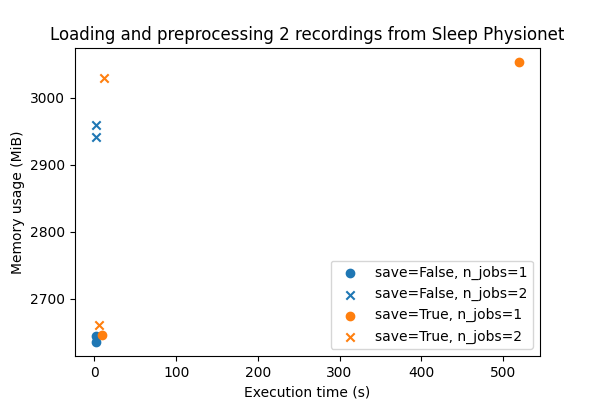

Note
Go to the end to download the full example code.
Benchmarking preprocessing with parallelization and serialization#
In this example, we compare the execution time and memory requirements of
preprocessing data with the parallelization and serialization functionalities
available in braindecode.preprocessing.preprocess().
We compare 4 cases:
Sequential, no serialization
Sequential, with serialization
Parallel, no serialization
Parallel, with serialization
Case 1 is the simplest approach, in which all recordings in a
braindecode.datasets.BaseConcatDataset are preprocessed one after the
other. In this scenario, braindecode.preprocessing.preprocess() acts
inplace, which means memory usage will likely stay stable (depending on the
preprocessing operations) if recordings have been preloaded. However, two
potential issues arise when working with large datasets: (1) if recordings have
not been preloaded before preprocessing, preprocess() will need to load them
and keep them in memory, in which case memory can become a bottleneck, and (2)
sequential preprocessing can take a considerable amount of time to run when
working with many recordings.
A solution to the first issue (memory usage) is to save the preprocessed data
to a file so it can be cleared from memory before moving on to the next
recording (case 2). The recordings can then be reloaded with preload=False
once they have all been saved to disk. This enables using the lazy loading
capabilities of braindecode.datasets.BaseConcatDataset and avoids
potential memory bottlenecks. The downside is that the writing to disk can take
some time and of course requires disk space.
A solution to the second issue (slow preprocessing) is to parallelize the preprocessing over multiple cores whenever possible (case 3). This can speed up preprocessing significantly. However, this approach will increase memory usage because of the way parallelization is implemented internally (with joblib, copies of (part of) the data must be made when sending arguments to parallel processes).
Finally, case 4 (combining parallelization and serialization) is likely to be both fast and memory efficient. As shown in this example, this remains a tradeoff though, and the selected configuration should depend on the size of the dataset and the specific operations applied to the recordings.
# Authors: Hubert Banville <hubert.jbanville@gmail.com>
#
# License: BSD (3-clause)
import tempfile
import time
from itertools import product
import matplotlib.pyplot as plt
import pandas as pd
from memory_profiler import memory_usage
from sklearn.preprocessing import scale
from braindecode.datasets import SleepPhysionet
from braindecode.preprocessing import (
Preprocessor,
create_fixed_length_windows,
preprocess,
)
We create a function that goes through the usual three steps of data
preparation: (1) data loading, (2) continuous data preprocessing,
(3) windowing and (4) windowed data preprocessing. We use the
braindecode.datasets.SleepPhysionet dataset for testing purposes.
def prepare_data(n_recs, save, preload, n_jobs):
if save:
tmp_dir = tempfile.TemporaryDirectory()
save_dir = tmp_dir.name
else:
save_dir = None
# (1) Load the data
concat_ds = SleepPhysionet(
subject_ids=range(n_recs), recording_ids=[1], crop_wake_mins=30, preload=preload
)
sfreq = concat_ds.datasets[0].raw.info["sfreq"]
# (2) Preprocess the continuous data
preprocessors = [
Preprocessor("crop", tmin=10),
Preprocessor("filter", l_freq=None, h_freq=30),
]
preprocess(
concat_ds, preprocessors, save_dir=save_dir, overwrite=True, n_jobs=n_jobs
)
# (3) Window the data
windows_ds = create_fixed_length_windows(
concat_ds,
0,
None,
int(30 * sfreq),
int(30 * sfreq),
True,
preload=preload,
n_jobs=n_jobs,
)
# Preprocess the windowed data
preprocessors = [Preprocessor(scale, channel_wise=True)]
preprocess(
windows_ds, preprocessors, save_dir=save_dir, overwrite=True, n_jobs=n_jobs
)
Next, we can run our function and measure its run time and peak memory usage for each one of our 4 cases above. We call the function multiple times with each configuration to get better estimates.
Note
To better characterize the run time vs. memory usage tradeoff for your specific configuration (as this will differ based on available hardware, data size and preprocessing operations), we recommend adapting this example to your use case and running it on your machine.
n_repets = 2 # Number of repetitions
all_n_recs = 2 # Number of recordings to load and preprocess
all_n_jobs = [1, 2] # Number of parallel processes
results = list()
for _, n_recs, save, n_jobs in product(
range(n_repets), [all_n_recs], [True, False], all_n_jobs
):
start = time.time()
mem = max(memory_usage(proc=(prepare_data, [n_recs, save, False, n_jobs], {})))
time_taken = time.time() - start
results.append(
{
"n_recs": n_recs,
"max_mem": mem,
"save": save,
"n_jobs": n_jobs,
"time": time_taken,
}
)
0%| | 0.00/48.3M [00:00<?, ?B/s]
0%| | 32.8k/48.3M [00:00<03:08, 256kB/s]
0%| | 65.5k/48.3M [00:00<05:01, 160kB/s]
0%| | 98.3k/48.3M [00:00<04:29, 179kB/s]
0%| | 131k/48.3M [00:00<04:38, 173kB/s]
0%|▏ | 164k/48.3M [00:00<04:39, 172kB/s]
0%|▏ | 182k/48.3M [00:01<07:17, 110kB/s]
0%|▏ | 213k/48.3M [00:01<07:27, 108kB/s]
0%|▏ | 229k/48.3M [00:01<07:39, 105kB/s]
1%|▏ | 246k/48.3M [00:01<07:42, 104kB/s]
1%|▏ | 262k/48.3M [00:02<08:02, 99.7kB/s]
1%|▏ | 279k/48.3M [00:02<07:54, 101kB/s]
1%|▏ | 295k/48.3M [00:02<07:57, 101kB/s]
1%|▎ | 311k/48.3M [00:02<07:25, 108kB/s]
1%|▎ | 328k/48.3M [00:02<07:27, 107kB/s]
1%|▎ | 344k/48.3M [00:02<06:53, 116kB/s]
1%|▎ | 360k/48.3M [00:02<06:33, 122kB/s]
1%|▎ | 377k/48.3M [00:03<07:15, 110kB/s]
1%|▎ | 410k/48.3M [00:03<06:00, 133kB/s]
1%|▎ | 426k/48.3M [00:03<06:12, 129kB/s]
1%|▎ | 442k/48.3M [00:03<05:59, 133kB/s]
1%|▎ | 459k/48.3M [00:03<07:04, 113kB/s]
1%|▍ | 492k/48.3M [00:03<05:58, 134kB/s]
1%|▍ | 508k/48.3M [00:04<07:48, 102kB/s]
1%|▍ | 541k/48.3M [00:04<06:17, 126kB/s]
1%|▍ | 557k/48.3M [00:04<06:34, 121kB/s]
1%|▍ | 573k/48.3M [00:04<06:46, 118kB/s]
1%|▍ | 590k/48.3M [00:04<06:49, 117kB/s]
1%|▍ | 606k/48.3M [00:05<07:19, 109kB/s]
1%|▌ | 623k/48.3M [00:05<07:22, 108kB/s]
1%|▌ | 639k/48.3M [00:05<07:41, 103kB/s]
1%|▌ | 655k/48.3M [00:05<08:32, 93.0kB/s]
1%|▌ | 672k/48.3M [00:05<08:30, 93.3kB/s]
1%|▌ | 688k/48.3M [00:05<08:30, 93.4kB/s]
1%|▌ | 705k/48.3M [00:06<08:06, 98.0kB/s]
1%|▌ | 721k/48.3M [00:06<07:31, 105kB/s]
2%|▌ | 737k/48.3M [00:06<07:03, 112kB/s]
2%|▌ | 754k/48.3M [00:06<06:31, 122kB/s]
2%|▌ | 770k/48.3M [00:06<07:24, 107kB/s]
2%|▋ | 803k/48.3M [00:06<06:23, 124kB/s]
2%|▋ | 819k/48.3M [00:06<06:26, 123kB/s]
2%|▋ | 836k/48.3M [00:07<06:05, 130kB/s]
2%|▋ | 868k/48.3M [00:07<05:47, 136kB/s]
2%|▋ | 901k/48.3M [00:07<05:18, 149kB/s]
2%|▊ | 934k/48.3M [00:07<05:59, 132kB/s]
2%|▊ | 967k/48.3M [00:07<05:19, 148kB/s]
2%|▊ | 983k/48.3M [00:08<05:18, 149kB/s]
2%|▊ | 999k/48.3M [00:08<05:30, 143kB/s]
2%|▊ | 1.02M/48.3M [00:08<05:22, 147kB/s]
2%|▊ | 1.03M/48.3M [00:08<05:40, 139kB/s]
2%|▊ | 1.05M/48.3M [00:08<05:43, 138kB/s]
2%|▊ | 1.06M/48.3M [00:08<05:56, 133kB/s]
2%|▊ | 1.08M/48.3M [00:08<05:45, 137kB/s]
2%|▊ | 1.10M/48.3M [00:09<06:43, 117kB/s]
2%|▉ | 1.13M/48.3M [00:09<06:05, 129kB/s]
2%|▉ | 1.15M/48.3M [00:09<06:02, 130kB/s]
2%|▉ | 1.16M/48.3M [00:09<06:51, 115kB/s]
2%|▉ | 1.18M/48.3M [00:09<06:28, 121kB/s]
2%|▉ | 1.20M/48.3M [00:09<06:24, 123kB/s]
3%|▉ | 1.21M/48.3M [00:09<06:26, 122kB/s]
3%|▉ | 1.23M/48.3M [00:10<06:40, 118kB/s]
3%|▉ | 1.25M/48.3M [00:10<06:15, 125kB/s]
3%|▉ | 1.26M/48.3M [00:10<06:07, 128kB/s]
3%|█ | 1.28M/48.3M [00:10<07:02, 111kB/s]
3%|█ | 1.31M/48.3M [00:10<05:54, 133kB/s]
3%|█ | 1.33M/48.3M [00:10<05:59, 131kB/s]
3%|█ | 1.34M/48.3M [00:10<05:41, 138kB/s]
3%|█ | 1.36M/48.3M [00:11<05:26, 144kB/s]
3%|█ | 1.38M/48.3M [00:11<05:35, 140kB/s]
3%|█ | 1.41M/48.3M [00:11<06:02, 129kB/s]
3%|█ | 1.43M/48.3M [00:11<05:54, 132kB/s]
3%|█▏ | 1.44M/48.3M [00:11<06:55, 113kB/s]
3%|█▏ | 1.46M/48.3M [00:11<07:17, 107kB/s]
3%|█▏ | 1.47M/48.3M [00:12<07:38, 102kB/s]
3%|█▏ | 1.49M/48.3M [00:12<07:28, 104kB/s]
3%|█▏ | 1.51M/48.3M [00:12<07:26, 105kB/s]
3%|█▏ | 1.52M/48.3M [00:12<06:52, 113kB/s]
3%|█▏ | 1.54M/48.3M [00:12<06:38, 117kB/s]
3%|█▏ | 1.56M/48.3M [00:12<06:23, 122kB/s]
3%|█▏ | 1.57M/48.3M [00:12<07:13, 108kB/s]
3%|█▎ | 1.61M/48.3M [00:13<06:11, 126kB/s]
3%|█▎ | 1.62M/48.3M [00:13<06:12, 126kB/s]
3%|█▎ | 1.64M/48.3M [00:13<05:57, 131kB/s]
3%|█▎ | 1.65M/48.3M [00:13<05:46, 135kB/s]
3%|█▎ | 1.67M/48.3M [00:13<05:41, 137kB/s]
4%|█▎ | 1.70M/48.3M [00:13<06:20, 122kB/s]
4%|█▎ | 1.74M/48.3M [00:14<05:28, 142kB/s]
4%|█▍ | 1.75M/48.3M [00:14<05:19, 146kB/s]
4%|█▍ | 1.77M/48.3M [00:14<05:26, 143kB/s]
4%|█▍ | 1.80M/48.3M [00:14<06:08, 126kB/s]
4%|█▍ | 1.84M/48.3M [00:14<05:10, 150kB/s]
4%|█▍ | 1.85M/48.3M [00:14<05:16, 147kB/s]
4%|█▍ | 1.87M/48.3M [00:15<05:23, 143kB/s]
4%|█▍ | 1.88M/48.3M [00:15<05:28, 141kB/s]
4%|█▍ | 1.90M/48.3M [00:15<05:25, 143kB/s]
4%|█▌ | 1.93M/48.3M [00:15<05:20, 145kB/s]
4%|█▌ | 1.95M/48.3M [00:15<05:52, 132kB/s]
4%|█▌ | 1.97M/48.3M [00:15<05:43, 135kB/s]
4%|█▌ | 1.98M/48.3M [00:15<05:48, 133kB/s]
4%|█▌ | 2.00M/48.3M [00:16<05:44, 134kB/s]
4%|█▌ | 2.02M/48.3M [00:16<07:04, 109kB/s]
4%|█▌ | 2.05M/48.3M [00:16<05:46, 133kB/s]
4%|█▌ | 2.06M/48.3M [00:16<05:36, 138kB/s]
4%|█▋ | 2.08M/48.3M [00:16<05:52, 131kB/s]
4%|█▋ | 2.10M/48.3M [00:16<05:40, 136kB/s]
4%|█▋ | 2.11M/48.3M [00:16<05:28, 141kB/s]
4%|█▋ | 2.13M/48.3M [00:17<06:34, 117kB/s]
4%|█▋ | 2.16M/48.3M [00:17<05:29, 140kB/s]
5%|█▋ | 2.18M/48.3M [00:17<05:35, 138kB/s]
5%|█▋ | 2.20M/48.3M [00:17<05:30, 140kB/s]
5%|█▋ | 2.21M/48.3M [00:17<06:26, 119kB/s]
5%|█▊ | 2.24M/48.3M [00:17<05:44, 134kB/s]
5%|█▊ | 2.26M/48.3M [00:18<05:46, 133kB/s]
5%|█▊ | 2.28M/48.3M [00:18<05:42, 134kB/s]
5%|█▊ | 2.29M/48.3M [00:18<05:37, 136kB/s]
5%|█▊ | 2.31M/48.3M [00:18<05:36, 137kB/s]
5%|█▊ | 2.33M/48.3M [00:18<06:12, 124kB/s]
5%|█▊ | 2.36M/48.3M [00:18<05:49, 132kB/s]
5%|█▊ | 2.38M/48.3M [00:18<05:50, 131kB/s]
5%|█▉ | 2.39M/48.3M [00:19<05:43, 134kB/s]
5%|█▉ | 2.41M/48.3M [00:19<05:39, 135kB/s]
5%|█▉ | 2.42M/48.3M [00:19<05:57, 128kB/s]
5%|█▉ | 2.46M/48.3M [00:19<05:43, 134kB/s]
5%|█▉ | 2.47M/48.3M [00:19<05:47, 132kB/s]
5%|█▉ | 2.49M/48.3M [00:19<05:39, 135kB/s]
5%|█▉ | 2.51M/48.3M [00:19<05:38, 136kB/s]
5%|█▉ | 2.52M/48.3M [00:19<05:27, 140kB/s]
5%|██ | 2.56M/48.3M [00:20<05:11, 147kB/s]
5%|██ | 2.57M/48.3M [00:20<05:40, 134kB/s]
5%|██ | 2.61M/48.3M [00:20<05:19, 143kB/s]
5%|██ | 2.62M/48.3M [00:20<05:16, 145kB/s]
5%|██ | 2.64M/48.3M [00:20<06:05, 125kB/s]
6%|██ | 2.67M/48.3M [00:21<06:30, 117kB/s]
6%|██ | 2.69M/48.3M [00:21<07:03, 108kB/s]
6%|██▏ | 2.70M/48.3M [00:21<07:17, 104kB/s]
6%|██▏ | 2.72M/48.3M [00:21<07:19, 104kB/s]
6%|██▏ | 2.74M/48.3M [00:21<06:52, 110kB/s]
6%|██▏ | 2.75M/48.3M [00:21<06:33, 116kB/s]
6%|██▏ | 2.77M/48.3M [00:22<06:16, 121kB/s]
6%|██▏ | 2.80M/48.3M [00:22<05:21, 142kB/s]
6%|██▏ | 2.82M/48.3M [00:22<05:29, 138kB/s]
6%|██▏ | 2.85M/48.3M [00:22<05:10, 146kB/s]
6%|██▎ | 2.87M/48.3M [00:22<05:23, 140kB/s]
6%|██▎ | 2.88M/48.3M [00:22<05:24, 140kB/s]
6%|██▎ | 2.90M/48.3M [00:22<06:19, 120kB/s]
6%|██▎ | 2.93M/48.3M [00:23<05:30, 137kB/s]
6%|██▎ | 2.95M/48.3M [00:23<05:41, 133kB/s]
6%|██▎ | 2.97M/48.3M [00:23<05:30, 137kB/s]
6%|██▎ | 2.98M/48.3M [00:23<05:33, 136kB/s]
6%|██▎ | 3.00M/48.3M [00:23<05:22, 141kB/s]
6%|██▍ | 3.03M/48.3M [00:23<04:51, 155kB/s]
6%|██▍ | 3.06M/48.3M [00:24<04:32, 166kB/s]
6%|██▍ | 3.10M/48.3M [00:24<04:20, 173kB/s]
6%|██▍ | 3.13M/48.3M [00:24<05:16, 143kB/s]
7%|██▍ | 3.18M/48.3M [00:24<04:18, 175kB/s]
7%|██▌ | 3.20M/48.3M [00:24<04:54, 153kB/s]
7%|██▌ | 3.23M/48.3M [00:25<04:41, 160kB/s]
7%|██▌ | 3.24M/48.3M [00:25<04:54, 153kB/s]
7%|██▌ | 3.26M/48.3M [00:25<04:51, 155kB/s]
7%|██▌ | 3.28M/48.3M [00:25<05:02, 149kB/s]
7%|██▌ | 3.29M/48.3M [00:25<05:11, 144kB/s]
7%|██▌ | 3.31M/48.3M [00:25<05:20, 141kB/s]
7%|██▌ | 3.33M/48.3M [00:25<05:25, 138kB/s]
7%|██▋ | 3.34M/48.3M [00:25<05:35, 134kB/s]
7%|██▋ | 3.36M/48.3M [00:26<06:34, 114kB/s]
7%|██▋ | 3.39M/48.3M [00:26<05:30, 136kB/s]
7%|██▋ | 3.41M/48.3M [00:26<05:44, 130kB/s]
7%|██▋ | 3.42M/48.3M [00:26<05:58, 125kB/s]
7%|██▋ | 3.44M/48.3M [00:26<05:51, 128kB/s]
7%|██▋ | 3.46M/48.3M [00:26<05:42, 131kB/s]
7%|██▋ | 3.47M/48.3M [00:26<06:10, 121kB/s]
7%|██▋ | 3.49M/48.3M [00:27<05:47, 129kB/s]
7%|██▊ | 3.51M/48.3M [00:27<05:45, 130kB/s]
7%|██▊ | 3.52M/48.3M [00:27<05:39, 132kB/s]
7%|██▊ | 3.56M/48.3M [00:27<05:17, 141kB/s]
7%|██▊ | 3.59M/48.3M [00:27<05:01, 148kB/s]
7%|██▊ | 3.60M/48.3M [00:27<05:00, 149kB/s]
7%|██▊ | 3.62M/48.3M [00:28<06:25, 116kB/s]
8%|██▊ | 3.65M/48.3M [00:28<05:04, 147kB/s]
8%|██▉ | 3.67M/48.3M [00:28<05:05, 146kB/s]
8%|██▉ | 3.69M/48.3M [00:28<04:28, 166kB/s]
8%|██▉ | 3.72M/48.3M [00:28<04:50, 154kB/s]
8%|██▉ | 3.75M/48.3M [00:28<04:39, 159kB/s]
8%|██▉ | 3.77M/48.3M [00:29<05:27, 136kB/s]
8%|██▉ | 3.80M/48.3M [00:29<04:36, 161kB/s]
8%|███ | 3.82M/48.3M [00:29<04:36, 161kB/s]
8%|███ | 3.85M/48.3M [00:29<04:36, 161kB/s]
8%|███ | 3.88M/48.3M [00:29<04:27, 166kB/s]
8%|███ | 3.90M/48.3M [00:29<05:03, 147kB/s]
8%|███ | 3.93M/48.3M [00:29<04:27, 166kB/s]
8%|███ | 3.95M/48.3M [00:30<04:28, 165kB/s]
8%|███ | 3.97M/48.3M [00:30<04:30, 164kB/s]
8%|███▏ | 3.98M/48.3M [00:30<04:28, 165kB/s]
8%|███▏ | 4.00M/48.3M [00:30<05:34, 132kB/s]
8%|███▏ | 4.03M/48.3M [00:30<05:07, 144kB/s]
8%|███▏ | 4.05M/48.3M [00:30<05:25, 136kB/s]
8%|███▏ | 4.06M/48.3M [00:30<05:17, 140kB/s]
8%|███▏ | 4.08M/48.3M [00:31<05:28, 135kB/s]
8%|███▏ | 4.10M/48.3M [00:31<05:17, 139kB/s]
9%|███▏ | 4.13M/48.3M [00:31<04:51, 152kB/s]
9%|███▎ | 4.15M/48.3M [00:31<04:48, 153kB/s]
9%|███▎ | 4.16M/48.3M [00:31<05:30, 134kB/s]
9%|███▎ | 4.19M/48.3M [00:31<05:14, 140kB/s]
9%|███▎ | 4.21M/48.3M [00:31<05:41, 129kB/s]
9%|███▎ | 4.23M/48.3M [00:32<06:07, 120kB/s]
9%|███▎ | 4.24M/48.3M [00:32<06:02, 122kB/s]
9%|███▎ | 4.26M/48.3M [00:32<05:53, 125kB/s]
9%|███▎ | 4.28M/48.3M [00:32<05:53, 125kB/s]
9%|███▎ | 4.29M/48.3M [00:32<06:55, 106kB/s]
9%|███▍ | 4.33M/48.3M [00:32<05:34, 131kB/s]
9%|███▍ | 4.36M/48.3M [00:33<05:20, 137kB/s]
9%|███▍ | 4.37M/48.3M [00:33<05:23, 136kB/s]
9%|███▍ | 4.39M/48.3M [00:33<05:26, 135kB/s]
9%|███▍ | 4.41M/48.3M [00:33<05:42, 128kB/s]
9%|███▍ | 4.42M/48.3M [00:33<05:32, 132kB/s]
9%|███▍ | 4.44M/48.3M [00:33<05:30, 133kB/s]
9%|███▌ | 4.46M/48.3M [00:33<05:33, 131kB/s]
9%|███▌ | 4.49M/48.3M [00:34<05:08, 142kB/s]
9%|███▌ | 4.51M/48.3M [00:34<05:01, 145kB/s]
9%|███▌ | 4.52M/48.3M [00:34<05:33, 131kB/s]
9%|███▌ | 4.55M/48.3M [00:34<05:23, 135kB/s]
9%|███▌ | 4.59M/48.3M [00:34<05:02, 144kB/s]
10%|███▌ | 4.60M/48.3M [00:34<05:08, 142kB/s]
10%|███▋ | 4.64M/48.3M [00:35<04:44, 154kB/s]
10%|███▋ | 4.67M/48.3M [00:35<04:30, 161kB/s]
10%|███▋ | 4.70M/48.3M [00:35<04:14, 171kB/s]
10%|███▋ | 4.73M/48.3M [00:35<04:01, 180kB/s]
10%|███▋ | 4.77M/48.3M [00:35<03:47, 191kB/s]
10%|███▊ | 4.80M/48.3M [00:35<03:31, 205kB/s]
10%|███▊ | 4.83M/48.3M [00:36<03:22, 215kB/s]
10%|███▊ | 4.87M/48.3M [00:36<03:33, 203kB/s]
10%|███▊ | 4.90M/48.3M [00:36<03:09, 230kB/s]
10%|███▉ | 4.93M/48.3M [00:36<03:18, 219kB/s]
10%|███▉ | 4.96M/48.3M [00:36<03:15, 222kB/s]
10%|███▉ | 5.00M/48.3M [00:36<03:10, 228kB/s]
10%|███▉ | 5.03M/48.3M [00:36<03:07, 231kB/s]
10%|███▉ | 5.06M/48.3M [00:37<03:02, 237kB/s]
11%|████ | 5.10M/48.3M [00:37<02:56, 245kB/s]
11%|████ | 5.13M/48.3M [00:37<02:52, 251kB/s]
11%|████ | 5.16M/48.3M [00:37<02:50, 253kB/s]
11%|████ | 5.19M/48.3M [00:37<02:49, 255kB/s]
11%|████ | 5.22M/48.3M [00:37<03:12, 223kB/s]
11%|████▏ | 5.26M/48.3M [00:37<02:44, 262kB/s]
11%|████▏ | 5.29M/48.3M [00:37<02:55, 245kB/s]
11%|████▏ | 5.32M/48.3M [00:38<02:58, 240kB/s]
11%|████▏ | 5.36M/48.3M [00:38<02:55, 245kB/s]
11%|████▏ | 5.39M/48.3M [00:38<02:53, 248kB/s]
11%|████▎ | 5.42M/48.3M [00:38<02:50, 251kB/s]
11%|████▎ | 5.46M/48.3M [00:38<03:07, 229kB/s]
11%|████▎ | 5.51M/48.3M [00:38<02:57, 241kB/s]
11%|████▎ | 5.54M/48.3M [00:39<03:06, 230kB/s]
12%|████▍ | 5.57M/48.3M [00:39<03:12, 222kB/s]
12%|████▍ | 5.60M/48.3M [00:39<03:11, 223kB/s]
12%|████▍ | 5.64M/48.3M [00:39<03:07, 228kB/s]
12%|████▍ | 5.67M/48.3M [00:39<03:02, 234kB/s]
12%|████▍ | 5.70M/48.3M [00:39<02:55, 243kB/s]
12%|████▌ | 5.73M/48.3M [00:39<02:55, 243kB/s]
12%|████▌ | 5.76M/48.3M [00:39<03:00, 237kB/s]
12%|████▌ | 5.80M/48.3M [00:40<03:02, 233kB/s]
12%|████▌ | 5.83M/48.3M [00:40<03:08, 226kB/s]
12%|████▌ | 5.87M/48.3M [00:40<03:04, 230kB/s]
12%|████▋ | 5.90M/48.3M [00:40<03:01, 234kB/s]
12%|████▋ | 5.93M/48.3M [00:40<02:58, 238kB/s]
12%|████▋ | 5.96M/48.3M [00:40<02:51, 247kB/s]
12%|████▋ | 6.00M/48.3M [00:40<02:48, 251kB/s]
12%|████▋ | 6.03M/48.3M [00:41<02:44, 258kB/s]
13%|████▊ | 6.06M/48.3M [00:41<03:13, 218kB/s]
13%|████▊ | 6.11M/48.3M [00:41<02:44, 256kB/s]
13%|████▊ | 6.14M/48.3M [00:41<02:49, 248kB/s]
13%|████▊ | 6.18M/48.3M [00:41<02:50, 247kB/s]
13%|████▉ | 6.21M/48.3M [00:41<02:48, 250kB/s]
13%|████▉ | 6.24M/48.3M [00:41<02:44, 256kB/s]
13%|████▉ | 6.28M/48.3M [00:42<02:42, 258kB/s]
13%|████▉ | 6.30M/48.3M [00:42<03:06, 226kB/s]
13%|████▉ | 6.34M/48.3M [00:42<02:47, 251kB/s]
13%|█████ | 6.37M/48.3M [00:42<02:58, 236kB/s]
13%|█████ | 6.41M/48.3M [00:42<03:04, 227kB/s]
13%|█████ | 6.44M/48.3M [00:42<03:10, 220kB/s]
13%|█████ | 6.47M/48.3M [00:42<03:05, 226kB/s]
13%|█████ | 6.50M/48.3M [00:43<03:01, 231kB/s]
14%|█████▏ | 6.54M/48.3M [00:43<02:55, 238kB/s]
14%|█████▏ | 6.57M/48.3M [00:43<02:48, 247kB/s]
14%|█████▏ | 6.60M/48.3M [00:43<02:44, 254kB/s]
14%|█████▏ | 6.64M/48.3M [00:43<03:10, 219kB/s]
14%|█████▎ | 6.68M/48.3M [00:43<02:43, 255kB/s]
14%|█████▎ | 6.72M/48.3M [00:43<02:49, 245kB/s]
14%|█████▎ | 6.75M/48.3M [00:44<02:50, 244kB/s]
14%|█████▎ | 6.78M/48.3M [00:44<02:49, 245kB/s]
14%|█████▎ | 6.81M/48.3M [00:44<02:52, 241kB/s]
14%|█████▎ | 6.83M/48.3M [00:44<02:53, 239kB/s]
14%|█████▍ | 6.86M/48.3M [00:44<03:04, 225kB/s]
14%|█████▍ | 6.90M/48.3M [00:44<03:10, 218kB/s]
14%|█████▍ | 6.93M/48.3M [00:44<03:09, 218kB/s]
14%|█████▍ | 6.96M/48.3M [00:45<03:02, 227kB/s]
14%|█████▍ | 7.00M/48.3M [00:45<02:57, 232kB/s]
15%|█████▌ | 7.03M/48.3M [00:45<02:52, 240kB/s]
15%|█████▌ | 7.06M/48.3M [00:45<02:48, 245kB/s]
15%|█████▌ | 7.09M/48.3M [00:45<03:09, 218kB/s]
15%|█████▌ | 7.13M/48.3M [00:45<02:54, 237kB/s]
15%|█████▋ | 7.16M/48.3M [00:45<03:02, 226kB/s]
15%|█████▋ | 7.19M/48.3M [00:46<02:59, 229kB/s]
15%|█████▋ | 7.23M/48.3M [00:46<02:58, 230kB/s]
15%|█████▋ | 7.26M/48.3M [00:46<02:53, 236kB/s]
15%|█████▋ | 7.29M/48.3M [00:46<02:49, 242kB/s]
15%|█████▊ | 7.32M/48.3M [00:46<03:15, 209kB/s]
15%|█████▊ | 7.37M/48.3M [00:46<02:53, 236kB/s]
15%|█████▊ | 7.41M/48.3M [00:46<03:00, 227kB/s]
15%|█████▊ | 7.44M/48.3M [00:47<03:03, 223kB/s]
15%|█████▊ | 7.47M/48.3M [00:47<03:01, 225kB/s]
16%|█████▉ | 7.50M/48.3M [00:47<02:59, 227kB/s]
16%|█████▉ | 7.54M/48.3M [00:47<02:55, 232kB/s]
16%|█████▉ | 7.57M/48.3M [00:47<02:48, 242kB/s]
16%|█████▉ | 7.59M/48.3M [00:47<03:06, 219kB/s]
16%|██████ | 7.63M/48.3M [00:47<02:53, 235kB/s]
16%|██████ | 7.67M/48.3M [00:48<02:57, 229kB/s]
16%|██████ | 7.70M/48.3M [00:48<02:55, 232kB/s]
16%|██████ | 7.73M/48.3M [00:48<02:53, 234kB/s]
16%|██████ | 7.77M/48.3M [00:48<02:49, 240kB/s]
16%|██████▏ | 7.80M/48.3M [00:48<03:14, 209kB/s]
16%|██████▏ | 7.85M/48.3M [00:48<02:53, 234kB/s]
16%|██████▏ | 7.88M/48.3M [00:49<02:59, 225kB/s]
16%|██████▏ | 7.91M/48.3M [00:49<03:22, 200kB/s]
16%|██████▏ | 7.95M/48.3M [00:49<03:15, 207kB/s]
17%|██████▎ | 7.98M/48.3M [00:49<03:27, 194kB/s]
17%|██████▎ | 8.01M/48.3M [00:49<03:31, 191kB/s]
17%|██████▎ | 8.04M/48.3M [00:49<03:28, 193kB/s]
17%|██████▎ | 8.08M/48.3M [00:50<03:22, 199kB/s]
17%|██████▍ | 8.11M/48.3M [00:50<03:15, 206kB/s]
17%|██████▍ | 8.14M/48.3M [00:50<03:06, 215kB/s]
17%|██████▍ | 8.18M/48.3M [00:50<03:02, 221kB/s]
17%|██████▍ | 8.20M/48.3M [00:50<03:27, 193kB/s]
17%|██████▍ | 8.24M/48.3M [00:50<02:57, 226kB/s]
17%|██████▌ | 8.27M/48.3M [00:50<03:07, 214kB/s]
17%|██████▌ | 8.31M/48.3M [00:51<03:06, 215kB/s]
17%|██████▌ | 8.34M/48.3M [00:51<03:01, 220kB/s]
17%|██████▌ | 8.37M/48.3M [00:51<02:58, 224kB/s]
17%|██████▌ | 8.40M/48.3M [00:51<02:54, 229kB/s]
17%|██████▋ | 8.43M/48.3M [00:51<03:02, 218kB/s]
17%|██████▋ | 8.45M/48.3M [00:51<03:08, 211kB/s]
18%|██████▋ | 8.49M/48.3M [00:51<03:18, 201kB/s]
18%|██████▋ | 8.52M/48.3M [00:52<03:20, 199kB/s]
18%|██████▋ | 8.55M/48.3M [00:52<03:17, 201kB/s]
18%|██████▋ | 8.59M/48.3M [00:52<03:11, 208kB/s]
18%|██████▊ | 8.62M/48.3M [00:52<03:07, 212kB/s]
18%|██████▊ | 8.65M/48.3M [00:52<03:01, 219kB/s]
18%|██████▊ | 8.67M/48.3M [00:52<03:19, 199kB/s]
18%|██████▊ | 8.72M/48.3M [00:53<03:02, 218kB/s]
18%|██████▉ | 8.75M/48.3M [00:53<03:07, 211kB/s]
18%|██████▉ | 8.78M/48.3M [00:53<03:04, 214kB/s]
18%|██████▉ | 8.81M/48.3M [00:53<02:58, 221kB/s]
18%|██████▉ | 8.85M/48.3M [00:53<02:55, 225kB/s]
18%|██████▉ | 8.88M/48.3M [00:53<02:48, 234kB/s]
18%|███████ | 8.91M/48.3M [00:53<03:08, 209kB/s]
19%|███████ | 8.96M/48.3M [00:54<02:48, 234kB/s]
19%|███████ | 8.99M/48.3M [00:54<02:56, 223kB/s]
19%|███████ | 9.03M/48.3M [00:54<03:18, 198kB/s]
19%|███████ | 9.06M/48.3M [00:54<03:02, 215kB/s]
19%|███████▏ | 9.08M/48.3M [00:54<03:02, 215kB/s]
19%|███████▏ | 9.11M/48.3M [00:54<03:25, 191kB/s]
19%|███████▏ | 9.14M/48.3M [00:55<03:25, 191kB/s]
19%|███████▏ | 9.18M/48.3M [00:55<03:23, 193kB/s]
19%|███████▏ | 9.21M/48.3M [00:55<03:19, 196kB/s]
19%|███████▎ | 9.24M/48.3M [00:55<03:10, 205kB/s]
19%|███████▎ | 9.27M/48.3M [00:55<02:59, 218kB/s]
19%|███████▎ | 9.31M/48.3M [00:55<02:52, 226kB/s]
19%|███████▎ | 9.33M/48.3M [00:55<02:58, 218kB/s]
19%|███████▎ | 9.36M/48.3M [00:56<02:52, 226kB/s]
19%|███████▍ | 9.39M/48.3M [00:56<02:57, 219kB/s]
19%|███████▍ | 9.42M/48.3M [00:56<03:00, 216kB/s]
20%|███████▍ | 9.45M/48.3M [00:56<02:55, 221kB/s]
20%|███████▍ | 9.49M/48.3M [00:56<02:49, 229kB/s]
20%|███████▍ | 9.52M/48.3M [00:56<02:44, 236kB/s]
20%|███████▌ | 9.55M/48.3M [00:56<02:41, 240kB/s]
20%|███████▌ | 9.58M/48.3M [00:57<03:14, 199kB/s]
20%|███████▌ | 9.63M/48.3M [00:57<02:35, 248kB/s]
20%|███████▌ | 9.67M/48.3M [00:57<02:48, 230kB/s]
20%|███████▌ | 9.70M/48.3M [00:57<02:48, 230kB/s]
20%|███████▋ | 9.73M/48.3M [00:57<02:48, 229kB/s]
20%|███████▋ | 9.76M/48.3M [00:57<02:47, 231kB/s]
20%|███████▋ | 9.79M/48.3M [00:57<03:03, 210kB/s]
20%|███████▋ | 9.83M/48.3M [00:58<02:49, 227kB/s]
20%|███████▊ | 9.86M/48.3M [00:58<02:55, 219kB/s]
20%|███████▊ | 9.90M/48.3M [00:58<02:57, 217kB/s]
21%|███████▊ | 9.93M/48.3M [00:58<02:53, 221kB/s]
21%|███████▊ | 9.96M/48.3M [00:58<02:51, 223kB/s]
21%|███████▊ | 9.99M/48.3M [00:58<02:48, 228kB/s]
21%|███████▉ | 10.0M/48.3M [00:58<02:49, 226kB/s]
21%|███████▉ | 10.0M/48.3M [00:59<02:50, 225kB/s]
21%|███████▉ | 10.1M/48.3M [00:59<02:58, 214kB/s]
21%|███████▉ | 10.1M/48.3M [00:59<02:56, 217kB/s]
21%|███████▉ | 10.1M/48.3M [00:59<02:53, 220kB/s]
21%|███████▉ | 10.2M/48.3M [00:59<02:49, 226kB/s]
21%|████████ | 10.2M/48.3M [00:59<02:44, 232kB/s]
21%|████████ | 10.2M/48.3M [00:59<02:41, 236kB/s]
21%|████████ | 10.3M/48.3M [01:00<02:47, 228kB/s]
21%|████████ | 10.3M/48.3M [01:00<02:44, 231kB/s]
21%|████████ | 10.3M/48.3M [01:00<02:58, 213kB/s]
21%|████████▏ | 10.4M/48.3M [01:00<02:56, 215kB/s]
21%|████████▏ | 10.4M/48.3M [01:00<02:51, 222kB/s]
22%|████████▏ | 10.4M/48.3M [01:00<02:49, 224kB/s]
22%|████████▏ | 10.4M/48.3M [01:00<02:56, 215kB/s]
22%|████████▏ | 10.5M/48.3M [01:01<03:01, 209kB/s]
22%|████████▎ | 10.5M/48.3M [01:01<03:07, 202kB/s]
22%|████████▎ | 10.5M/48.3M [01:01<03:11, 197kB/s]
22%|████████▎ | 10.6M/48.3M [01:01<03:09, 200kB/s]
22%|████████▎ | 10.6M/48.3M [01:01<03:05, 204kB/s]
22%|████████▎ | 10.6M/48.3M [01:01<02:56, 214kB/s]
22%|████████▍ | 10.7M/48.3M [01:02<03:16, 191kB/s]
22%|████████▍ | 10.7M/48.3M [01:02<02:49, 222kB/s]
22%|████████▍ | 10.7M/48.3M [01:02<02:51, 219kB/s]
22%|████████▍ | 10.8M/48.3M [01:02<02:51, 219kB/s]
22%|████████▌ | 10.8M/48.3M [01:02<02:48, 223kB/s]
22%|████████▌ | 10.8M/48.3M [01:02<03:14, 193kB/s]
23%|████████▌ | 10.9M/48.3M [01:02<02:52, 218kB/s]
23%|████████▌ | 10.9M/48.3M [01:03<02:59, 208kB/s]
23%|████████▌ | 10.9M/48.3M [01:03<03:05, 202kB/s]
23%|████████▋ | 11.0M/48.3M [01:03<03:04, 203kB/s]
23%|████████▋ | 11.0M/48.3M [01:03<03:01, 206kB/s]
23%|████████▋ | 11.0M/48.3M [01:03<03:24, 183kB/s]
23%|████████▋ | 11.1M/48.3M [01:03<02:58, 209kB/s]
23%|████████▋ | 11.1M/48.3M [01:04<03:03, 202kB/s]
23%|████████▊ | 11.1M/48.3M [01:04<03:01, 205kB/s]
23%|████████▊ | 11.2M/48.3M [01:04<02:57, 209kB/s]
23%|████████▊ | 11.2M/48.3M [01:04<02:51, 216kB/s]
23%|████████▊ | 11.2M/48.3M [01:04<02:47, 222kB/s]
23%|████████▊ | 11.3M/48.3M [01:04<02:41, 230kB/s]
23%|████████▉ | 11.3M/48.3M [01:05<03:05, 200kB/s]
23%|████████▉ | 11.4M/48.3M [01:05<02:35, 238kB/s]
24%|████████▉ | 11.4M/48.3M [01:05<02:42, 228kB/s]
24%|████████▉ | 11.4M/48.3M [01:05<02:42, 227kB/s]
24%|█████████ | 11.5M/48.3M [01:05<02:39, 232kB/s]
24%|█████████ | 11.5M/48.3M [01:05<02:35, 237kB/s]
24%|█████████ | 11.5M/48.3M [01:05<02:32, 242kB/s]
24%|█████████ | 11.6M/48.3M [01:06<02:30, 245kB/s]
24%|█████████ | 11.6M/48.3M [01:06<02:27, 249kB/s]
24%|█████████▏ | 11.6M/48.3M [01:06<03:15, 188kB/s]
24%|█████████▏ | 11.7M/48.3M [01:06<02:28, 247kB/s]
24%|█████████▏ | 11.7M/48.3M [01:06<02:35, 236kB/s]
24%|█████████▏ | 11.7M/48.3M [01:06<02:34, 237kB/s]
24%|█████████▎ | 11.8M/48.3M [01:07<02:32, 240kB/s]
24%|█████████▎ | 11.8M/48.3M [01:07<02:29, 244kB/s]
25%|█████████▎ | 11.8M/48.3M [01:07<02:27, 247kB/s]
25%|█████████▎ | 11.9M/48.3M [01:07<02:32, 239kB/s]
25%|█████████▎ | 11.9M/48.3M [01:07<02:37, 232kB/s]
25%|█████████▍ | 11.9M/48.3M [01:07<02:44, 221kB/s]
25%|█████████▍ | 12.0M/48.3M [01:07<02:48, 216kB/s]
25%|█████████▍ | 12.0M/48.3M [01:08<02:47, 217kB/s]
25%|█████████▍ | 12.0M/48.3M [01:08<02:44, 220kB/s]
25%|█████████▍ | 12.1M/48.3M [01:08<02:39, 227kB/s]
25%|█████████▌ | 12.1M/48.3M [01:08<03:08, 193kB/s]
25%|█████████▌ | 12.2M/48.3M [01:08<02:29, 242kB/s]
25%|█████████▌ | 12.2M/48.3M [01:08<02:38, 228kB/s]
25%|█████████▌ | 12.2M/48.3M [01:09<02:41, 224kB/s]
25%|█████████▋ | 12.3M/48.3M [01:09<02:38, 228kB/s]
25%|█████████▋ | 12.3M/48.3M [01:09<02:34, 233kB/s]
25%|█████████▋ | 12.3M/48.3M [01:09<02:31, 238kB/s]
26%|█████████▋ | 12.4M/48.3M [01:09<02:50, 211kB/s]
26%|█████████▊ | 12.4M/48.3M [01:09<02:32, 235kB/s]
26%|█████████▊ | 12.4M/48.3M [01:09<02:39, 226kB/s]
26%|█████████▊ | 12.5M/48.3M [01:10<02:42, 220kB/s]
26%|█████████▊ | 12.5M/48.3M [01:10<02:42, 221kB/s]
26%|█████████▊ | 12.5M/48.3M [01:10<02:38, 226kB/s]
26%|█████████▉ | 12.6M/48.3M [01:10<02:35, 230kB/s]
26%|█████████▉ | 12.6M/48.3M [01:10<03:01, 197kB/s]
26%|█████████▉ | 12.6M/48.3M [01:10<02:33, 233kB/s]
26%|█████████▉ | 12.7M/48.3M [01:11<02:38, 225kB/s]
26%|█████████▉ | 12.7M/48.3M [01:11<02:35, 229kB/s]
26%|██████████ | 12.7M/48.3M [01:11<02:35, 229kB/s]
26%|██████████ | 12.8M/48.3M [01:11<02:31, 235kB/s]
27%|██████████ | 12.8M/48.3M [01:11<02:30, 236kB/s]
27%|██████████ | 12.8M/48.3M [01:11<02:36, 227kB/s]
27%|██████████ | 12.9M/48.3M [01:11<02:36, 226kB/s]
27%|██████████▏ | 12.9M/48.3M [01:12<02:42, 219kB/s]
27%|██████████▏ | 12.9M/48.3M [01:12<02:42, 218kB/s]
27%|██████████▏ | 13.0M/48.3M [01:12<02:40, 221kB/s]
27%|██████████▏ | 13.0M/48.3M [01:12<02:36, 226kB/s]
27%|██████████▎ | 13.0M/48.3M [01:12<02:33, 230kB/s]
27%|██████████▎ | 13.1M/48.3M [01:12<02:27, 239kB/s]
27%|██████████▎ | 13.1M/48.3M [01:12<02:47, 211kB/s]
27%|██████████▎ | 13.2M/48.3M [01:13<02:31, 232kB/s]
27%|██████████▎ | 13.2M/48.3M [01:13<02:35, 226kB/s]
27%|██████████▍ | 13.2M/48.3M [01:13<02:33, 228kB/s]
27%|██████████▍ | 13.3M/48.3M [01:13<02:31, 232kB/s]
27%|██████████▍ | 13.3M/48.3M [01:13<02:29, 234kB/s]
28%|██████████▍ | 13.3M/48.3M [01:13<02:36, 224kB/s]
28%|██████████▍ | 13.4M/48.3M [01:14<02:36, 224kB/s]
28%|██████████▌ | 13.4M/48.3M [01:14<02:42, 215kB/s]
28%|██████████▌ | 13.4M/48.3M [01:14<02:45, 212kB/s]
28%|██████████▌ | 13.5M/48.3M [01:14<02:44, 213kB/s]
28%|██████████▌ | 13.5M/48.3M [01:14<02:39, 219kB/s]
28%|██████████▋ | 13.5M/48.3M [01:14<02:33, 227kB/s]
28%|██████████▋ | 13.5M/48.3M [01:14<02:30, 231kB/s]
28%|██████████▋ | 13.6M/48.3M [01:15<02:39, 217kB/s]
28%|██████████▋ | 13.6M/48.3M [01:15<02:33, 226kB/s]
28%|██████████▋ | 13.6M/48.3M [01:15<02:40, 217kB/s]
28%|██████████▊ | 13.7M/48.3M [01:15<02:39, 217kB/s]
28%|██████████▊ | 13.7M/48.3M [01:15<02:35, 222kB/s]
28%|██████████▊ | 13.7M/48.3M [01:15<02:28, 233kB/s]
29%|██████████▊ | 13.8M/48.3M [01:16<02:49, 204kB/s]
29%|██████████▊ | 13.8M/48.3M [01:16<02:27, 234kB/s]
29%|██████████▉ | 13.9M/48.3M [01:16<02:33, 225kB/s]
29%|██████████▉ | 13.9M/48.3M [01:16<02:35, 222kB/s]
29%|██████████▉ | 13.9M/48.3M [01:16<02:32, 226kB/s]
29%|██████████▉ | 14.0M/48.3M [01:16<02:30, 229kB/s]
29%|██████████▉ | 14.0M/48.3M [01:16<02:28, 232kB/s]
29%|███████████ | 14.0M/48.3M [01:17<02:23, 239kB/s]
29%|███████████ | 14.1M/48.3M [01:17<02:41, 212kB/s]
29%|███████████ | 14.1M/48.3M [01:17<02:23, 239kB/s]
29%|███████████ | 14.1M/48.3M [01:17<02:28, 230kB/s]
29%|███████████▏ | 14.2M/48.3M [01:17<02:27, 231kB/s]
29%|███████████▏ | 14.2M/48.3M [01:17<02:27, 231kB/s]
29%|███████████▏ | 14.2M/48.3M [01:17<02:23, 237kB/s]
30%|███████████▏ | 14.3M/48.3M [01:18<02:20, 243kB/s]
30%|███████████▏ | 14.3M/48.3M [01:18<02:17, 248kB/s]
30%|███████████▎ | 14.3M/48.3M [01:18<02:15, 252kB/s]
30%|███████████▎ | 14.4M/48.3M [01:18<02:44, 207kB/s]
30%|███████████▎ | 14.4M/48.3M [01:18<02:10, 261kB/s]
30%|███████████▎ | 14.5M/48.3M [01:18<02:17, 247kB/s]
30%|███████████▍ | 14.5M/48.3M [01:18<02:17, 246kB/s]
30%|███████████▍ | 14.5M/48.3M [01:19<02:16, 248kB/s]
30%|███████████▍ | 14.5M/48.3M [01:19<02:40, 211kB/s]
30%|███████████▍ | 14.6M/48.3M [01:19<02:18, 243kB/s]
30%|███████████▌ | 14.6M/48.3M [01:19<02:25, 231kB/s]
30%|███████████▌ | 14.7M/48.3M [01:19<02:29, 226kB/s]
30%|███████████▌ | 14.7M/48.3M [01:19<02:30, 224kB/s]
30%|███████████▌ | 14.7M/48.3M [01:20<02:27, 228kB/s]
31%|███████████▌ | 14.8M/48.3M [01:20<02:25, 231kB/s]
31%|███████████▋ | 14.8M/48.3M [01:20<02:24, 232kB/s]
31%|███████████▋ | 14.8M/48.3M [01:20<02:26, 229kB/s]
31%|███████████▋ | 14.8M/48.3M [01:20<02:30, 222kB/s]
31%|███████████▋ | 14.9M/48.3M [01:20<02:34, 217kB/s]
31%|███████████▋ | 14.9M/48.3M [01:20<02:31, 220kB/s]
31%|███████████▋ | 14.9M/48.3M [01:21<02:28, 225kB/s]
31%|███████████▊ | 15.0M/48.3M [01:21<02:25, 229kB/s]
31%|███████████▊ | 15.0M/48.3M [01:21<02:22, 233kB/s]
31%|███████████▊ | 15.0M/48.3M [01:21<02:43, 203kB/s]
31%|███████████▊ | 15.1M/48.3M [01:21<02:23, 232kB/s]
31%|███████████▉ | 15.1M/48.3M [01:21<02:25, 228kB/s]
31%|███████████▉ | 15.2M/48.3M [01:21<02:29, 222kB/s]
31%|███████████▉ | 15.2M/48.3M [01:22<02:30, 220kB/s]
31%|███████████▉ | 15.2M/48.3M [01:22<02:28, 223kB/s]
32%|███████████▉ | 15.3M/48.3M [01:22<02:24, 228kB/s]
32%|████████████ | 15.3M/48.3M [01:22<02:19, 237kB/s]
32%|████████████ | 15.3M/48.3M [01:22<02:16, 242kB/s]
32%|████████████ | 15.3M/48.3M [01:22<02:16, 242kB/s]
32%|████████████ | 15.4M/48.3M [01:22<02:23, 230kB/s]
32%|████████████ | 15.4M/48.3M [01:23<02:30, 218kB/s]
32%|████████████▏ | 15.4M/48.3M [01:23<02:33, 214kB/s]
32%|████████████▏ | 15.5M/48.3M [01:23<02:29, 219kB/s]
32%|████████████▏ | 15.5M/48.3M [01:23<02:26, 225kB/s]
32%|████████████▏ | 15.5M/48.3M [01:23<02:20, 233kB/s]
32%|████████████▏ | 15.6M/48.3M [01:23<02:17, 238kB/s]
32%|████████████▎ | 15.6M/48.3M [01:23<02:24, 226kB/s]
32%|████████████▎ | 15.6M/48.3M [01:24<02:23, 228kB/s]
32%|████████████▎ | 15.7M/48.3M [01:24<02:28, 220kB/s]
32%|████████████▎ | 15.7M/48.3M [01:24<02:31, 215kB/s]
33%|████████████▎ | 15.7M/48.3M [01:24<02:29, 219kB/s]
33%|████████████▍ | 15.8M/48.3M [01:24<02:25, 224kB/s]
33%|████████████▍ | 15.8M/48.3M [01:24<02:19, 234kB/s]
33%|████████████▍ | 15.8M/48.3M [01:24<02:12, 246kB/s]
33%|████████████▍ | 15.9M/48.3M [01:25<02:11, 248kB/s]
33%|████████████▍ | 15.9M/48.3M [01:25<02:27, 220kB/s]
33%|████████████▌ | 15.9M/48.3M [01:25<02:26, 221kB/s]
33%|████████████▌ | 15.9M/48.3M [01:25<02:28, 217kB/s]
33%|████████████▌ | 16.0M/48.3M [01:25<02:35, 208kB/s]
33%|████████████▌ | 16.0M/48.3M [01:25<02:36, 207kB/s]
33%|████████████▌ | 16.0M/48.3M [01:25<03:08, 171kB/s]
33%|████████████▌ | 16.0M/48.3M [01:26<03:02, 177kB/s]
33%|████████████▋ | 16.1M/48.3M [01:26<02:56, 183kB/s]
33%|████████████▋ | 16.1M/48.3M [01:26<02:50, 189kB/s]
33%|████████████▋ | 16.1M/48.3M [01:26<02:42, 198kB/s]
33%|████████████▋ | 16.2M/48.3M [01:26<02:32, 212kB/s]
34%|████████████▋ | 16.2M/48.3M [01:26<02:23, 225kB/s]
34%|████████████▊ | 16.2M/48.3M [01:26<02:15, 236kB/s]
34%|████████████▊ | 16.3M/48.3M [01:26<02:11, 244kB/s]
34%|████████████▊ | 16.3M/48.3M [01:27<02:32, 210kB/s]
34%|████████████▊ | 16.4M/48.3M [01:27<02:02, 260kB/s]
34%|████████████▉ | 16.4M/48.3M [01:27<02:11, 243kB/s]
34%|████████████▉ | 16.4M/48.3M [01:27<02:13, 239kB/s]
34%|████████████▉ | 16.4M/48.3M [01:27<02:11, 242kB/s]
34%|████████████▉ | 16.5M/48.3M [01:27<02:08, 248kB/s]
34%|████████████▉ | 16.5M/48.3M [01:27<02:04, 255kB/s]
34%|█████████████ | 16.5M/48.3M [01:28<02:03, 258kB/s]
34%|█████████████ | 16.6M/48.3M [01:28<02:18, 229kB/s]
34%|█████████████ | 16.6M/48.3M [01:28<02:07, 248kB/s]
34%|█████████████ | 16.7M/48.3M [01:28<02:14, 235kB/s]
35%|█████████████ | 16.7M/48.3M [01:28<02:17, 230kB/s]
35%|█████████████▏ | 16.7M/48.3M [01:28<02:16, 232kB/s]
35%|█████████████▏ | 16.8M/48.3M [01:29<02:15, 233kB/s]
35%|█████████████▏ | 16.8M/48.3M [01:29<02:14, 235kB/s]
35%|█████████████▏ | 16.8M/48.3M [01:29<02:10, 242kB/s]
35%|█████████████▎ | 16.9M/48.3M [01:29<02:07, 247kB/s]
35%|█████████████▎ | 16.9M/48.3M [01:29<02:28, 212kB/s]
35%|█████████████▎ | 16.9M/48.3M [01:29<02:01, 258kB/s]
35%|█████████████▎ | 17.0M/48.3M [01:29<02:10, 240kB/s]
35%|█████████████▎ | 17.0M/48.3M [01:30<02:11, 238kB/s]
35%|█████████████▍ | 17.0M/48.3M [01:30<02:08, 244kB/s]
35%|█████████████▍ | 17.1M/48.3M [01:30<02:05, 250kB/s]
35%|█████████████▍ | 17.1M/48.3M [01:30<02:03, 254kB/s]
35%|█████████████▍ | 17.1M/48.3M [01:30<02:02, 254kB/s]
36%|█████████████▍ | 17.2M/48.3M [01:30<02:13, 233kB/s]
36%|█████████████▌ | 17.2M/48.3M [01:30<02:05, 248kB/s]
36%|█████████████▌ | 17.3M/48.3M [01:31<02:12, 234kB/s]
36%|█████████████▌ | 17.3M/48.3M [01:31<02:15, 229kB/s]
36%|█████████████▌ | 17.3M/48.3M [01:31<02:17, 226kB/s]
36%|█████████████▋ | 17.4M/48.3M [01:31<02:15, 229kB/s]
36%|█████████████▋ | 17.4M/48.3M [01:31<02:10, 237kB/s]
36%|█████████████▋ | 17.4M/48.3M [01:31<02:36, 197kB/s]
36%|█████████████▋ | 17.5M/48.3M [01:32<02:05, 247kB/s]
36%|█████████████▊ | 17.5M/48.3M [01:32<02:10, 236kB/s]
36%|█████████████▊ | 17.5M/48.3M [01:32<02:14, 230kB/s]
36%|█████████████▊ | 17.6M/48.3M [01:32<02:13, 231kB/s]
36%|█████████████▊ | 17.6M/48.3M [01:32<02:10, 236kB/s]
36%|█████████████▊ | 17.6M/48.3M [01:32<02:07, 240kB/s]
37%|█████████████▉ | 17.7M/48.3M [01:32<02:05, 245kB/s]
37%|█████████████▉ | 17.7M/48.3M [01:32<02:03, 249kB/s]
37%|█████████████▉ | 17.7M/48.3M [01:33<02:01, 252kB/s]
37%|█████████████▉ | 17.8M/48.3M [01:33<02:06, 241kB/s]
37%|█████████████▉ | 17.8M/48.3M [01:33<02:05, 244kB/s]
37%|██████████████ | 17.8M/48.3M [01:33<02:09, 236kB/s]
37%|██████████████ | 17.9M/48.3M [01:33<02:06, 241kB/s]
37%|██████████████ | 17.9M/48.3M [01:33<02:04, 245kB/s]
37%|██████████████ | 17.9M/48.3M [01:33<02:17, 221kB/s]
37%|██████████████ | 18.0M/48.3M [01:34<02:07, 237kB/s]
37%|██████████████▏ | 18.0M/48.3M [01:34<02:13, 227kB/s]
37%|██████████████▏ | 18.0M/48.3M [01:34<02:14, 225kB/s]
37%|██████████████▏ | 18.1M/48.3M [01:34<02:16, 222kB/s]
37%|██████████████▏ | 18.1M/48.3M [01:34<02:13, 227kB/s]
37%|██████████████▏ | 18.1M/48.3M [01:34<02:08, 234kB/s]
38%|██████████████▎ | 18.2M/48.3M [01:34<02:05, 241kB/s]
38%|██████████████▎ | 18.2M/48.3M [01:35<02:28, 203kB/s]
38%|██████████████▎ | 18.2M/48.3M [01:35<02:03, 243kB/s]
38%|██████████████▎ | 18.3M/48.3M [01:35<02:07, 236kB/s]
38%|██████████████▍ | 18.3M/48.3M [01:35<02:13, 225kB/s]
38%|██████████████▍ | 18.3M/48.3M [01:35<02:20, 213kB/s]
38%|██████████████▍ | 18.4M/48.3M [01:35<02:18, 216kB/s]
38%|██████████████▍ | 18.4M/48.3M [01:36<02:24, 207kB/s]
38%|██████████████▍ | 18.4M/48.3M [01:36<02:27, 203kB/s]
38%|██████████████▌ | 18.4M/48.3M [01:36<02:28, 201kB/s]
38%|██████████████▌ | 18.5M/48.3M [01:36<02:25, 205kB/s]
38%|██████████████▌ | 18.5M/48.3M [01:36<02:21, 211kB/s]
38%|██████████████▌ | 18.5M/48.3M [01:36<02:17, 217kB/s]
38%|██████████████▌ | 18.6M/48.3M [01:36<02:09, 230kB/s]
38%|██████████████▌ | 18.6M/48.3M [01:37<02:11, 225kB/s]
39%|██████████████▋ | 18.6M/48.3M [01:37<02:09, 230kB/s]
39%|██████████████▋ | 18.7M/48.3M [01:37<02:15, 218kB/s]
39%|██████████████▋ | 18.7M/48.3M [01:37<02:15, 218kB/s]
39%|██████████████▋ | 18.7M/48.3M [01:37<02:32, 194kB/s]
39%|██████████████▋ | 18.8M/48.3M [01:37<02:15, 218kB/s]
39%|██████████████▊ | 18.8M/48.3M [01:37<02:21, 209kB/s]
39%|██████████████▊ | 18.8M/48.3M [01:38<02:25, 203kB/s]
39%|██████████████▊ | 18.9M/48.3M [01:38<02:25, 203kB/s]
39%|██████████████▊ | 18.9M/48.3M [01:38<02:22, 206kB/s]
39%|██████████████▉ | 18.9M/48.3M [01:38<02:18, 213kB/s]
39%|██████████████▉ | 19.0M/48.3M [01:38<02:12, 222kB/s]
39%|██████████████▉ | 19.0M/48.3M [01:38<02:23, 204kB/s]
39%|██████████████▉ | 19.0M/48.3M [01:39<02:07, 230kB/s]
39%|██████████████▉ | 19.1M/48.3M [01:39<02:11, 222kB/s]
40%|███████████████ | 19.1M/48.3M [01:39<02:25, 200kB/s]
40%|███████████████ | 19.1M/48.3M [01:39<02:19, 209kB/s]
40%|███████████████ | 19.2M/48.3M [01:39<02:23, 203kB/s]
40%|███████████████ | 19.2M/48.3M [01:39<02:37, 186kB/s]
40%|███████████████ | 19.2M/48.3M [01:40<02:38, 184kB/s]
40%|███████████████▏ | 19.3M/48.3M [01:40<02:33, 189kB/s]
40%|███████████████▏ | 19.3M/48.3M [01:40<02:28, 196kB/s]
40%|███████████████▏ | 19.3M/48.3M [01:40<02:18, 209kB/s]
40%|███████████████▏ | 19.3M/48.3M [01:40<02:13, 217kB/s]
40%|███████████████▏ | 19.4M/48.3M [01:40<02:06, 229kB/s]
40%|███████████████▎ | 19.4M/48.3M [01:40<02:02, 236kB/s]
40%|███████████████▎ | 19.4M/48.3M [01:41<02:12, 217kB/s]
40%|███████████████▎ | 19.5M/48.3M [01:41<01:59, 242kB/s]
40%|███████████████▎ | 19.5M/48.3M [01:41<02:07, 226kB/s]
40%|███████████████▎ | 19.5M/48.3M [01:41<02:08, 224kB/s]
41%|███████████████▍ | 19.6M/48.3M [01:41<02:05, 228kB/s]
41%|███████████████▍ | 19.6M/48.3M [01:41<02:02, 235kB/s]
41%|███████████████▍ | 19.6M/48.3M [01:41<01:59, 241kB/s]
41%|███████████████▍ | 19.7M/48.3M [01:42<02:18, 206kB/s]
41%|███████████████▌ | 19.7M/48.3M [01:42<01:58, 241kB/s]
41%|███████████████▌ | 19.8M/48.3M [01:42<02:04, 230kB/s]
41%|███████████████▌ | 19.8M/48.3M [01:42<02:07, 225kB/s]
41%|███████████████▌ | 19.8M/48.3M [01:42<02:08, 222kB/s]
41%|███████████████▌ | 19.9M/48.3M [01:42<02:06, 226kB/s]
41%|███████████████▋ | 19.9M/48.3M [01:42<02:01, 234kB/s]
41%|███████████████▋ | 19.9M/48.3M [01:43<01:58, 239kB/s]
41%|███████████████▋ | 19.9M/48.3M [01:43<02:05, 226kB/s]
41%|███████████████▋ | 20.0M/48.3M [01:43<02:01, 234kB/s]
41%|███████████████▋ | 20.0M/48.3M [01:43<02:05, 225kB/s]
41%|███████████████▊ | 20.1M/48.3M [01:43<02:02, 231kB/s]
42%|███████████████▊ | 20.1M/48.3M [01:43<02:01, 233kB/s]
42%|███████████████▊ | 20.1M/48.3M [01:43<01:59, 237kB/s]
42%|███████████████▊ | 20.2M/48.3M [01:44<02:14, 209kB/s]
42%|███████████████▉ | 20.2M/48.3M [01:44<01:59, 236kB/s]
42%|███████████████▉ | 20.2M/48.3M [01:44<02:03, 228kB/s]
42%|███████████████▉ | 20.3M/48.3M [01:44<02:05, 224kB/s]
42%|███████████████▉ | 20.3M/48.3M [01:44<02:04, 226kB/s]
42%|███████████████▉ | 20.3M/48.3M [01:44<02:03, 228kB/s]
42%|████████████████ | 20.4M/48.3M [01:45<01:59, 233kB/s]
42%|████████████████ | 20.4M/48.3M [01:45<01:55, 242kB/s]
42%|████████████████ | 20.4M/48.3M [01:45<01:52, 247kB/s]
42%|████████████████ | 20.5M/48.3M [01:45<02:08, 216kB/s]
42%|████████████████▏ | 20.5M/48.3M [01:45<01:51, 249kB/s]
43%|████████████████▏ | 20.5M/48.3M [01:45<01:55, 241kB/s]
43%|████████████████▏ | 20.6M/48.3M [01:45<01:55, 241kB/s]
43%|████████████████▏ | 20.6M/48.3M [01:46<01:54, 241kB/s]
43%|████████████████▏ | 20.6M/48.3M [01:46<02:02, 226kB/s]
43%|████████████████▎ | 20.7M/48.3M [01:46<01:56, 237kB/s]
43%|████████████████▎ | 20.7M/48.3M [01:46<02:02, 226kB/s]
43%|████████████████▎ | 20.7M/48.3M [01:46<02:06, 218kB/s]
43%|████████████████▎ | 20.8M/48.3M [01:46<02:07, 216kB/s]
43%|████████████████▎ | 20.8M/48.3M [01:46<02:03, 224kB/s]
43%|████████████████▍ | 20.8M/48.3M [01:47<02:00, 227kB/s]
43%|████████████████▍ | 20.9M/48.3M [01:47<02:10, 211kB/s]
43%|████████████████▍ | 20.9M/48.3M [01:47<02:03, 223kB/s]
43%|████████████████▍ | 20.9M/48.3M [01:47<02:06, 217kB/s]
43%|████████████████▍ | 21.0M/48.3M [01:47<02:06, 217kB/s]
43%|████████████████▌ | 21.0M/48.3M [01:47<02:02, 223kB/s]
44%|████████████████▌ | 21.0M/48.3M [01:48<01:59, 228kB/s]
44%|████████████████▌ | 21.1M/48.3M [01:48<01:57, 232kB/s]
44%|████████████████▌ | 21.1M/48.3M [01:48<02:07, 214kB/s]
44%|████████████████▌ | 21.1M/48.3M [01:48<02:01, 225kB/s]
44%|████████████████▋ | 21.2M/48.3M [01:48<02:04, 218kB/s]
44%|████████████████▋ | 21.2M/48.3M [01:48<02:01, 223kB/s]
44%|████████████████▋ | 21.2M/48.3M [01:48<01:59, 227kB/s]
44%|████████████████▋ | 21.3M/48.3M [01:49<01:57, 231kB/s]
44%|████████████████▋ | 21.3M/48.3M [01:49<01:54, 236kB/s]
44%|████████████████▊ | 21.3M/48.3M [01:49<01:51, 241kB/s]
44%|████████████████▊ | 21.4M/48.3M [01:49<01:56, 232kB/s]
44%|████████████████▊ | 21.4M/48.3M [01:49<01:56, 232kB/s]
44%|████████████████▊ | 21.4M/48.3M [01:49<02:04, 217kB/s]
44%|████████████████▊ | 21.4M/48.3M [01:49<02:02, 219kB/s]
44%|████████████████▉ | 21.5M/48.3M [01:49<01:59, 226kB/s]
45%|████████████████▉ | 21.5M/48.3M [01:50<01:56, 230kB/s]
45%|████████████████▉ | 21.5M/48.3M [01:50<01:54, 233kB/s]
45%|████████████████▉ | 21.6M/48.3M [01:50<02:07, 210kB/s]
45%|████████████████▉ | 21.6M/48.3M [01:50<01:53, 235kB/s]
45%|█████████████████ | 21.6M/48.3M [01:50<02:02, 218kB/s]
45%|█████████████████ | 21.7M/48.3M [01:50<02:04, 214kB/s]
45%|█████████████████ | 21.7M/48.3M [01:51<02:00, 222kB/s]
45%|█████████████████ | 21.7M/48.3M [01:51<01:59, 223kB/s]
45%|█████████████████ | 21.8M/48.3M [01:51<02:13, 199kB/s]
45%|█████████████████▏ | 21.8M/48.3M [01:51<02:01, 218kB/s]
45%|█████████████████▏ | 21.8M/48.3M [01:51<02:07, 209kB/s]
45%|█████████████████▏ | 21.9M/48.3M [01:51<02:10, 203kB/s]
45%|█████████████████▏ | 21.9M/48.3M [01:51<02:10, 203kB/s]
45%|█████████████████▏ | 21.9M/48.3M [01:52<02:08, 205kB/s]
45%|█████████████████▎ | 22.0M/48.3M [01:52<02:02, 215kB/s]
46%|█████████████████▎ | 22.0M/48.3M [01:52<01:56, 225kB/s]
46%|█████████████████▎ | 22.0M/48.3M [01:52<02:10, 202kB/s]
46%|█████████████████▎ | 22.1M/48.3M [01:52<01:55, 226kB/s]
46%|█████████████████▍ | 22.1M/48.3M [01:52<01:59, 220kB/s]
46%|█████████████████▍ | 22.2M/48.3M [01:53<01:58, 221kB/s]
46%|█████████████████▍ | 22.2M/48.3M [01:53<01:56, 224kB/s]
46%|█████████████████▍ | 22.2M/48.3M [01:53<02:08, 203kB/s]
46%|█████████████████▌ | 22.3M/48.3M [01:53<01:55, 226kB/s]
46%|█████████████████▌ | 22.3M/48.3M [01:53<01:58, 220kB/s]
46%|█████████████████▌ | 22.3M/48.3M [01:53<01:59, 218kB/s]
46%|█████████████████▌ | 22.4M/48.3M [01:54<01:58, 220kB/s]
46%|█████████████████▌ | 22.4M/48.3M [01:54<01:55, 224kB/s]
46%|█████████████████▋ | 22.4M/48.3M [01:54<01:53, 228kB/s]
46%|█████████████████▋ | 22.5M/48.3M [01:54<01:51, 233kB/s]
47%|█████████████████▋ | 22.5M/48.3M [01:54<02:05, 206kB/s]
47%|█████████████████▋ | 22.5M/48.3M [01:54<02:09, 200kB/s]
47%|█████████████████▋ | 22.6M/48.3M [01:55<02:05, 205kB/s]
47%|█████████████████▊ | 22.6M/48.3M [01:55<02:13, 193kB/s]
47%|█████████████████▊ | 22.6M/48.3M [01:55<02:15, 190kB/s]
47%|█████████████████▊ | 22.6M/48.3M [01:55<02:26, 176kB/s]
47%|█████████████████▊ | 22.6M/48.3M [01:55<02:25, 177kB/s]
47%|█████████████████▊ | 22.7M/48.3M [01:55<02:51, 150kB/s]
47%|█████████████████▊ | 22.7M/48.3M [01:55<02:37, 162kB/s]
47%|█████████████████▊ | 22.7M/48.3M [01:56<02:26, 174kB/s]
47%|█████████████████▉ | 22.8M/48.3M [01:56<02:17, 185kB/s]
47%|█████████████████▉ | 22.8M/48.3M [01:56<02:10, 195kB/s]
47%|█████████████████▉ | 22.8M/48.3M [01:56<02:22, 179kB/s]
47%|█████████████████▉ | 22.9M/48.3M [01:56<02:10, 195kB/s]
47%|█████████████████▉ | 22.9M/48.3M [01:56<02:10, 195kB/s]
47%|██████████████████ | 22.9M/48.3M [01:56<02:08, 198kB/s]
47%|██████████████████ | 23.0M/48.3M [01:57<02:05, 202kB/s]
48%|██████████████████ | 23.0M/48.3M [01:57<02:01, 209kB/s]
48%|██████████████████ | 23.0M/48.3M [01:57<01:57, 215kB/s]
48%|██████████████████ | 23.1M/48.3M [01:57<02:16, 185kB/s]
48%|██████████████████▏ | 23.1M/48.3M [01:57<01:55, 218kB/s]
48%|██████████████████▏ | 23.1M/48.3M [01:57<02:01, 208kB/s]
48%|██████████████████▏ | 23.1M/48.3M [01:58<02:04, 202kB/s]
48%|██████████████████▏ | 23.2M/48.3M [01:58<02:41, 155kB/s]
48%|██████████████████▏ | 23.2M/48.3M [01:58<02:38, 159kB/s]
48%|██████████████████▎ | 23.2M/48.3M [01:58<02:34, 162kB/s]
48%|██████████████████▎ | 23.2M/48.3M [01:58<02:25, 173kB/s]
48%|██████████████████▎ | 23.3M/48.3M [01:58<02:17, 182kB/s]
48%|██████████████████▎ | 23.3M/48.3M [01:59<02:10, 191kB/s]
48%|██████████████████▎ | 23.3M/48.3M [01:59<02:02, 204kB/s]
48%|██████████████████▍ | 23.4M/48.3M [01:59<01:54, 218kB/s]
48%|██████████████████▍ | 23.4M/48.3M [01:59<02:07, 195kB/s]
49%|██████████████████▍ | 23.4M/48.3M [01:59<01:51, 222kB/s]
49%|██████████████████▍ | 23.5M/48.3M [01:59<01:56, 214kB/s]
49%|██████████████████▍ | 23.5M/48.3M [01:59<01:56, 213kB/s]
49%|██████████████████▌ | 23.5M/48.3M [02:00<01:52, 220kB/s]
49%|██████████████████▌ | 23.6M/48.3M [02:00<01:48, 229kB/s]
49%|██████████████████▌ | 23.6M/48.3M [02:00<01:45, 234kB/s]
49%|██████████████████▌ | 23.6M/48.3M [02:00<01:44, 236kB/s]
49%|██████████████████▌ | 23.7M/48.3M [02:00<01:52, 219kB/s]
49%|██████████████████▋ | 23.7M/48.3M [02:00<01:43, 239kB/s]
49%|██████████████████▋ | 23.7M/48.3M [02:00<01:49, 226kB/s]
49%|██████████████████▋ | 23.8M/48.3M [02:01<01:50, 222kB/s]
49%|██████████████████▋ | 23.8M/48.3M [02:01<01:49, 225kB/s]
49%|██████████████████▋ | 23.8M/48.3M [02:01<01:46, 230kB/s]
49%|██████████████████▊ | 23.9M/48.3M [02:01<01:43, 237kB/s]
49%|██████████████████▊ | 23.9M/48.3M [02:01<01:52, 218kB/s]
50%|██████████████████▊ | 24.0M/48.3M [02:01<01:44, 232kB/s]
50%|██████████████████▊ | 24.0M/48.3M [02:02<01:48, 224kB/s]
50%|██████████████████▉ | 24.0M/48.3M [02:02<01:51, 218kB/s]
50%|██████████████████▉ | 24.1M/48.3M [02:02<01:50, 219kB/s]
50%|██████████████████▉ | 24.1M/48.3M [02:02<01:46, 227kB/s]
50%|██████████████████▉ | 24.1M/48.3M [02:02<01:45, 230kB/s]
50%|██████████████████▉ | 24.2M/48.3M [02:02<01:53, 214kB/s]
50%|███████████████████ | 24.2M/48.3M [02:02<01:42, 235kB/s]
50%|███████████████████ | 24.2M/48.3M [02:03<01:48, 222kB/s]
50%|███████████████████ | 24.2M/48.3M [02:03<01:48, 221kB/s]
50%|███████████████████ | 24.3M/48.3M [02:03<01:47, 225kB/s]
50%|███████████████████ | 24.3M/48.3M [02:03<01:45, 227kB/s]
50%|███████████████████▏ | 24.3M/48.3M [02:03<01:45, 228kB/s]
50%|███████████████████▏ | 24.4M/48.3M [02:03<01:56, 205kB/s]
51%|███████████████████▏ | 24.4M/48.3M [02:03<01:47, 223kB/s]
51%|███████████████████▏ | 24.4M/48.3M [02:04<01:48, 220kB/s]
51%|███████████████████▏ | 24.5M/48.3M [02:04<01:47, 221kB/s]
51%|███████████████████▎ | 24.5M/48.3M [02:04<01:46, 225kB/s]
51%|███████████████████▎ | 24.5M/48.3M [02:04<01:43, 229kB/s]
51%|███████████████████▎ | 24.6M/48.3M [02:04<01:42, 232kB/s]
51%|███████████████████▎ | 24.6M/48.3M [02:04<01:50, 215kB/s]
51%|███████████████████▎ | 24.6M/48.3M [02:04<01:48, 218kB/s]
51%|███████████████████▍ | 24.6M/48.3M [02:05<01:49, 215kB/s]
51%|███████████████████▍ | 24.7M/48.3M [02:05<01:57, 201kB/s]
51%|███████████████████▍ | 24.7M/48.3M [02:05<02:39, 148kB/s]
51%|███████████████████▍ | 24.7M/48.3M [02:05<02:39, 148kB/s]
51%|███████████████████▍ | 24.7M/48.3M [02:05<02:31, 155kB/s]
51%|███████████████████▍ | 24.8M/48.3M [02:05<02:22, 165kB/s]
51%|███████████████████▌ | 24.8M/48.3M [02:06<02:16, 173kB/s]
51%|███████████████████▌ | 24.8M/48.3M [02:06<02:05, 187kB/s]
51%|███████████████████▌ | 24.9M/48.3M [02:06<01:59, 196kB/s]
52%|███████████████████▌ | 24.9M/48.3M [02:06<01:53, 207kB/s]
52%|███████████████████▌ | 24.9M/48.3M [02:06<02:07, 184kB/s]
52%|███████████████████▋ | 25.0M/48.3M [02:06<01:45, 221kB/s]
52%|███████████████████▋ | 25.0M/48.3M [02:07<01:48, 216kB/s]
52%|███████████████████▋ | 25.1M/48.3M [02:07<01:48, 215kB/s]
52%|███████████████████▋ | 25.1M/48.3M [02:07<01:45, 220kB/s]
52%|███████████████████▋ | 25.1M/48.3M [02:07<01:43, 225kB/s]
52%|███████████████████▊ | 25.1M/48.3M [02:07<01:40, 231kB/s]
52%|███████████████████▊ | 25.2M/48.3M [02:07<01:38, 236kB/s]
52%|███████████████████▊ | 25.2M/48.3M [02:07<01:47, 215kB/s]
52%|███████████████████▊ | 25.2M/48.3M [02:08<01:37, 236kB/s]
52%|███████████████████▊ | 25.3M/48.3M [02:08<01:42, 224kB/s]
52%|███████████████████▉ | 25.3M/48.3M [02:08<01:44, 220kB/s]
52%|███████████████████▉ | 25.3M/48.3M [02:08<01:42, 224kB/s]
53%|███████████████████▉ | 25.4M/48.3M [02:08<01:40, 229kB/s]
53%|███████████████████▉ | 25.4M/48.3M [02:08<01:36, 237kB/s]
53%|████████████████████ | 25.4M/48.3M [02:08<01:52, 204kB/s]
53%|████████████████████ | 25.5M/48.3M [02:09<01:35, 239kB/s]
53%|████████████████████ | 25.5M/48.3M [02:09<01:39, 229kB/s]
53%|████████████████████ | 25.6M/48.3M [02:09<01:41, 224kB/s]
53%|████████████████████ | 25.6M/48.3M [02:09<01:43, 219kB/s]
53%|████████████████████▏ | 25.6M/48.3M [02:09<01:41, 224kB/s]
53%|████████████████████▏ | 25.7M/48.3M [02:09<01:37, 233kB/s]
53%|████████████████████▏ | 25.7M/48.3M [02:09<01:34, 238kB/s]
53%|████████████████████▏ | 25.7M/48.3M [02:10<01:40, 224kB/s]
53%|████████████████████▏ | 25.8M/48.3M [02:10<01:38, 229kB/s]
53%|████████████████████▎ | 25.8M/48.3M [02:10<01:41, 222kB/s]
53%|████████████████████▎ | 25.8M/48.3M [02:10<01:40, 225kB/s]
53%|████████████████████▎ | 25.9M/48.3M [02:10<01:37, 230kB/s]
54%|████████████████████▎ | 25.9M/48.3M [02:10<01:35, 234kB/s]
54%|████████████████████▍ | 25.9M/48.3M [02:10<01:32, 241kB/s]
54%|████████████████████▍ | 26.0M/48.3M [02:11<01:31, 244kB/s]
54%|████████████████████▍ | 26.0M/48.3M [02:11<01:29, 249kB/s]
54%|████████████████████▍ | 26.0M/48.3M [02:11<01:37, 230kB/s]
54%|████████████████████▍ | 26.1M/48.3M [02:11<01:35, 234kB/s]
54%|████████████████████▌ | 26.1M/48.3M [02:11<01:37, 229kB/s]
54%|████████████████████▌ | 26.1M/48.3M [02:11<01:36, 231kB/s]
54%|████████████████████▌ | 26.1M/48.3M [02:11<01:34, 235kB/s]
54%|████████████████████▌ | 26.2M/48.3M [02:12<01:32, 240kB/s]
54%|████████████████████▌ | 26.2M/48.3M [02:12<01:30, 244kB/s]
54%|████████████████████▋ | 26.2M/48.3M [02:12<01:29, 248kB/s]
54%|████████████████████▋ | 26.3M/48.3M [02:12<01:27, 253kB/s]
54%|████████████████████▋ | 26.3M/48.3M [02:12<01:47, 204kB/s]
55%|████████████████████▋ | 26.4M/48.3M [02:12<01:24, 259kB/s]
55%|████████████████████▋ | 26.4M/48.3M [02:12<01:30, 242kB/s]
55%|████████████████████▊ | 26.4M/48.3M [02:13<01:31, 239kB/s]
55%|████████████████████▊ | 26.5M/48.3M [02:13<01:31, 239kB/s]
55%|████████████████████▊ | 26.5M/48.3M [02:13<01:29, 245kB/s]
55%|████████████████████▊ | 26.5M/48.3M [02:13<01:45, 207kB/s]
55%|████████████████████▉ | 26.6M/48.3M [02:13<01:33, 233kB/s]
55%|████████████████████▉ | 26.6M/48.3M [02:13<01:35, 228kB/s]
55%|████████████████████▉ | 26.6M/48.3M [02:14<01:36, 225kB/s]
55%|████████████████████▉ | 26.7M/48.3M [02:14<01:36, 224kB/s]
55%|████████████████████▉ | 26.7M/48.3M [02:14<01:35, 228kB/s]
55%|█████████████████████ | 26.7M/48.3M [02:14<01:32, 232kB/s]
55%|█████████████████████ | 26.8M/48.3M [02:14<01:31, 235kB/s]
55%|█████████████████████ | 26.8M/48.3M [02:14<01:32, 233kB/s]
55%|█████████████████████ | 26.8M/48.3M [02:14<01:32, 232kB/s]
56%|█████████████████████ | 26.9M/48.3M [02:14<01:37, 220kB/s]
56%|█████████████████████▏ | 26.9M/48.3M [02:15<01:37, 221kB/s]
56%|█████████████████████▏ | 26.9M/48.3M [02:15<01:34, 227kB/s]
56%|█████████████████████▏ | 27.0M/48.3M [02:15<01:31, 233kB/s]
56%|█████████████████████▏ | 27.0M/48.3M [02:15<01:50, 193kB/s]
56%|█████████████████████▎ | 27.0M/48.3M [02:15<01:31, 234kB/s]
56%|█████████████████████▎ | 27.1M/48.3M [02:15<01:34, 225kB/s]
56%|█████████████████████▎ | 27.1M/48.3M [02:16<01:36, 221kB/s]
56%|█████████████████████▎ | 27.1M/48.3M [02:16<01:35, 221kB/s]
56%|█████████████████████▎ | 27.2M/48.3M [02:16<01:35, 223kB/s]
56%|█████████████████████▍ | 27.2M/48.3M [02:16<01:53, 186kB/s]
56%|█████████████████████▍ | 27.2M/48.3M [02:16<01:31, 230kB/s]
56%|█████████████████████▍ | 27.3M/48.3M [02:16<01:36, 218kB/s]
57%|█████████████████████▍ | 27.3M/48.3M [02:17<01:35, 221kB/s]
57%|█████████████████████▍ | 27.3M/48.3M [02:17<01:33, 224kB/s]
57%|█████████████████████▌ | 27.4M/48.3M [02:17<01:31, 229kB/s]
57%|█████████████████████▌ | 27.4M/48.3M [02:17<01:30, 232kB/s]
57%|█████████████████████▌ | 27.4M/48.3M [02:17<01:29, 235kB/s]
57%|█████████████████████▌ | 27.5M/48.3M [02:17<01:39, 209kB/s]
57%|█████████████████████▋ | 27.5M/48.3M [02:17<01:26, 242kB/s]
57%|█████████████████████▋ | 27.5M/48.3M [02:18<01:31, 227kB/s]
57%|█████████████████████▋ | 27.6M/48.3M [02:18<01:31, 226kB/s]
57%|█████████████████████▋ | 27.6M/48.3M [02:18<01:30, 230kB/s]
57%|█████████████████████▋ | 27.6M/48.3M [02:18<01:28, 234kB/s]
57%|█████████████████████▊ | 27.7M/48.3M [02:18<01:27, 237kB/s]
57%|█████████████████████▊ | 27.7M/48.3M [02:18<01:33, 220kB/s]
57%|█████████████████████▊ | 27.7M/48.3M [02:18<01:27, 235kB/s]
57%|█████████████████████▊ | 27.8M/48.3M [02:19<01:31, 224kB/s]
58%|█████████████████████▊ | 27.8M/48.3M [02:19<01:34, 218kB/s]
58%|█████████████████████▉ | 27.8M/48.3M [02:19<01:33, 219kB/s]
58%|█████████████████████▉ | 27.9M/48.3M [02:19<01:32, 222kB/s]
58%|█████████████████████▉ | 27.9M/48.3M [02:19<01:29, 227kB/s]
58%|█████████████████████▉ | 27.9M/48.3M [02:19<01:28, 232kB/s]
58%|█████████████████████▉ | 28.0M/48.3M [02:19<01:35, 213kB/s]
58%|██████████████████████ | 28.0M/48.3M [02:20<01:29, 227kB/s]
58%|██████████████████████ | 28.0M/48.3M [02:20<01:31, 221kB/s]
58%|██████████████████████ | 28.1M/48.3M [02:20<01:29, 225kB/s]
58%|██████████████████████ | 28.1M/48.3M [02:20<01:27, 231kB/s]
58%|██████████████████████ | 28.1M/48.3M [02:20<01:25, 237kB/s]
58%|██████████████████████▏ | 28.2M/48.3M [02:20<01:24, 240kB/s]
58%|██████████████████████▏ | 28.2M/48.3M [02:20<01:21, 246kB/s]
58%|██████████████████████▏ | 28.2M/48.3M [02:21<01:20, 251kB/s]
58%|██████████████████████▏ | 28.3M/48.3M [02:21<01:19, 254kB/s]
59%|██████████████████████▏ | 28.3M/48.3M [02:21<01:21, 245kB/s]
59%|██████████████████████▎ | 28.3M/48.3M [02:21<01:21, 245kB/s]
59%|██████████████████████▎ | 28.4M/48.3M [02:21<01:24, 237kB/s]
59%|██████████████████████▎ | 28.4M/48.3M [02:21<01:22, 241kB/s]
59%|██████████████████████▎ | 28.4M/48.3M [02:21<01:20, 247kB/s]
59%|██████████████████████▎ | 28.5M/48.3M [02:21<01:18, 255kB/s]
59%|██████████████████████▍ | 28.5M/48.3M [02:22<01:18, 254kB/s]
59%|██████████████████████▍ | 28.5M/48.3M [02:22<01:21, 244kB/s]
59%|██████████████████████▍ | 28.6M/48.3M [02:22<01:23, 238kB/s]
59%|██████████████████████▍ | 28.6M/48.3M [02:22<01:27, 227kB/s]
59%|██████████████████████▌ | 28.6M/48.3M [02:22<01:27, 224kB/s]
59%|██████████████████████▌ | 28.7M/48.3M [02:22<01:28, 223kB/s]
59%|██████████████████████▌ | 28.7M/48.3M [02:22<01:25, 231kB/s]
59%|██████████████████████▌ | 28.7M/48.3M [02:23<01:22, 238kB/s]
59%|██████████████████████▌ | 28.8M/48.3M [02:23<01:19, 245kB/s]
60%|██████████████████████▋ | 28.8M/48.3M [02:23<01:17, 252kB/s]
60%|██████████████████████▋ | 28.8M/48.3M [02:23<01:15, 260kB/s]
60%|██████████████████████▋ | 28.9M/48.3M [02:23<01:29, 218kB/s]
60%|██████████████████████▋ | 28.9M/48.3M [02:23<01:21, 239kB/s]
60%|██████████████████████▋ | 28.9M/48.3M [02:23<01:16, 253kB/s]
60%|██████████████████████▊ | 28.9M/48.3M [02:24<01:17, 251kB/s]
60%|██████████████████████▊ | 29.0M/48.3M [02:24<01:32, 210kB/s]
60%|██████████████████████▊ | 29.0M/48.3M [02:24<01:41, 190kB/s]
60%|██████████████████████▊ | 29.0M/48.3M [02:24<01:39, 194kB/s]
60%|██████████████████████▊ | 29.1M/48.3M [02:24<01:34, 204kB/s]
60%|██████████████████████▊ | 29.1M/48.3M [02:24<01:30, 212kB/s]
60%|██████████████████████▉ | 29.1M/48.3M [02:24<01:26, 222kB/s]
60%|██████████████████████▉ | 29.2M/48.3M [02:25<01:23, 230kB/s]
60%|██████████████████████▉ | 29.2M/48.3M [02:25<01:19, 241kB/s]
60%|██████████████████████▉ | 29.2M/48.3M [02:25<01:16, 250kB/s]
61%|███████████████████████ | 29.3M/48.3M [02:25<01:13, 258kB/s]
61%|███████████████████████ | 29.3M/48.3M [02:25<01:28, 215kB/s]
61%|███████████████████████ | 29.3M/48.3M [02:25<01:08, 276kB/s]
61%|███████████████████████ | 29.4M/48.3M [02:25<01:13, 258kB/s]
61%|███████████████████████ | 29.4M/48.3M [02:26<01:13, 256kB/s]
61%|███████████████████████▏ | 29.4M/48.3M [02:26<01:13, 258kB/s]
61%|███████████████████████▏ | 29.5M/48.3M [02:26<01:12, 261kB/s]
61%|███████████████████████▏ | 29.5M/48.3M [02:26<01:11, 263kB/s]
61%|███████████████████████▏ | 29.5M/48.3M [02:26<01:18, 240kB/s]
61%|███████████████████████▏ | 29.6M/48.3M [02:26<01:14, 252kB/s]
61%|███████████████████████▎ | 29.6M/48.3M [02:26<01:16, 244kB/s]
61%|███████████████████████▎ | 29.6M/48.3M [02:26<01:18, 239kB/s]
61%|███████████████████████▎ | 29.7M/48.3M [02:27<01:17, 240kB/s]
61%|███████████████████████▎ | 29.7M/48.3M [02:27<01:16, 244kB/s]
62%|███████████████████████▍ | 29.7M/48.3M [02:27<01:15, 245kB/s]
62%|███████████████████████▍ | 29.8M/48.3M [02:27<01:16, 243kB/s]
62%|███████████████████████▍ | 29.8M/48.3M [02:27<01:17, 239kB/s]
62%|███████████████████████▍ | 29.8M/48.3M [02:27<01:22, 225kB/s]
62%|███████████████████████▍ | 29.9M/48.3M [02:27<01:23, 222kB/s]
62%|███████████████████████▍ | 29.9M/48.3M [02:28<01:20, 229kB/s]
62%|███████████████████████▌ | 29.9M/48.3M [02:28<01:17, 238kB/s]
62%|███████████████████████▌ | 29.9M/48.3M [02:28<01:15, 244kB/s]
62%|███████████████████████▌ | 30.0M/48.3M [02:28<01:12, 252kB/s]
62%|███████████████████████▌ | 30.0M/48.3M [02:28<01:11, 257kB/s]
62%|███████████████████████▌ | 30.0M/48.3M [02:28<01:10, 261kB/s]
62%|███████████████████████▋ | 30.1M/48.3M [02:28<01:12, 253kB/s]
62%|███████████████████████▋ | 30.1M/48.3M [02:28<01:14, 246kB/s]
62%|███████████████████████▋ | 30.1M/48.3M [02:29<01:17, 234kB/s]
62%|███████████████████████▋ | 30.2M/48.3M [02:29<01:15, 240kB/s]
63%|███████████████████████▊ | 30.2M/48.3M [02:29<01:13, 246kB/s]
63%|███████████████████████▊ | 30.2M/48.3M [02:29<01:12, 249kB/s]
63%|███████████████████████▊ | 30.3M/48.3M [02:29<01:11, 254kB/s]
63%|███████████████████████▊ | 30.3M/48.3M [02:29<01:08, 265kB/s]
63%|███████████████████████▊ | 30.3M/48.3M [02:29<01:06, 269kB/s]
63%|███████████████████████▉ | 30.4M/48.3M [02:29<01:06, 272kB/s]
63%|███████████████████████▉ | 30.4M/48.3M [02:30<01:09, 259kB/s]
63%|███████████████████████▉ | 30.4M/48.3M [02:30<01:09, 259kB/s]
63%|███████████████████████▉ | 30.5M/48.3M [02:30<01:10, 255kB/s]
63%|███████████████████████▉ | 30.5M/48.3M [02:30<01:09, 255kB/s]
63%|████████████████████████ | 30.5M/48.3M [02:30<01:09, 256kB/s]
63%|████████████████████████ | 30.6M/48.3M [02:30<01:21, 219kB/s]
63%|████████████████████████ | 30.6M/48.3M [02:30<01:10, 251kB/s]
63%|████████████████████████ | 30.7M/48.3M [02:31<01:14, 236kB/s]
63%|████████████████████████ | 30.7M/48.3M [02:31<01:17, 227kB/s]
64%|████████████████████████▏ | 30.7M/48.3M [02:31<01:17, 227kB/s]
64%|████████████████████████▏ | 30.8M/48.3M [02:31<01:17, 227kB/s]
64%|████████████████████████▏ | 30.8M/48.3M [02:31<01:15, 233kB/s]
64%|████████████████████████▏ | 30.8M/48.3M [02:31<01:12, 242kB/s]
64%|████████████████████████▎ | 30.9M/48.3M [02:31<01:10, 248kB/s]
64%|████████████████████████▎ | 30.9M/48.3M [02:32<01:19, 220kB/s]
64%|████████████████████████▎ | 30.9M/48.3M [02:32<01:09, 252kB/s]
64%|████████████████████████▎ | 31.0M/48.3M [02:32<01:10, 248kB/s]
64%|████████████████████████▎ | 31.0M/48.3M [02:32<01:10, 247kB/s]
64%|████████████████████████▍ | 31.0M/48.3M [02:32<01:09, 251kB/s]
64%|████████████████████████▍ | 31.1M/48.3M [02:32<01:08, 254kB/s]
64%|████████████████████████▍ | 31.1M/48.3M [02:32<01:06, 259kB/s]
64%|████████████████████████▍ | 31.1M/48.3M [02:33<01:05, 263kB/s]
64%|████████████████████████▍ | 31.2M/48.3M [02:33<01:04, 268kB/s]
65%|████████████████████████▌ | 31.2M/48.3M [02:33<01:03, 268kB/s]
65%|████████████████████████▌ | 31.2M/48.3M [02:33<01:12, 236kB/s]
65%|████████████████████████▌ | 31.3M/48.3M [02:33<01:04, 264kB/s]
65%|████████████████████████▌ | 31.3M/48.3M [02:33<01:07, 254kB/s]
65%|████████████████████████▋ | 31.3M/48.3M [02:33<01:06, 257kB/s]
65%|████████████████████████▋ | 31.4M/48.3M [02:33<01:04, 262kB/s]
65%|████████████████████████▋ | 31.4M/48.3M [02:34<01:03, 265kB/s]
65%|████████████████████████▋ | 31.4M/48.3M [02:34<01:02, 269kB/s]
65%|████████████████████████▋ | 31.5M/48.3M [02:34<01:14, 228kB/s]
65%|████████████████████████▊ | 31.5M/48.3M [02:34<01:03, 267kB/s]
65%|████████████████████████▊ | 31.6M/48.3M [02:34<01:06, 252kB/s]
65%|████████████████████████▊ | 31.6M/48.3M [02:34<01:08, 246kB/s]
65%|████████████████████████▊ | 31.6M/48.3M [02:34<01:08, 243kB/s]
65%|████████████████████████▉ | 31.7M/48.3M [02:35<01:07, 246kB/s]
66%|████████████████████████▉ | 31.7M/48.3M [02:35<01:06, 249kB/s]
66%|████████████████████████▉ | 31.7M/48.3M [02:35<01:05, 255kB/s]
66%|████████████████████████▉ | 31.8M/48.3M [02:35<01:03, 261kB/s]
66%|████████████████████████▉ | 31.8M/48.3M [02:35<01:03, 263kB/s]
66%|█████████████████████████ | 31.8M/48.3M [02:35<01:07, 245kB/s]
66%|█████████████████████████ | 31.9M/48.3M [02:35<01:04, 255kB/s]
66%|█████████████████████████ | 31.9M/48.3M [02:36<01:05, 250kB/s]
66%|█████████████████████████ | 31.9M/48.3M [02:36<01:06, 247kB/s]
66%|█████████████████████████ | 31.9M/48.3M [02:36<01:05, 251kB/s]
66%|█████████████████████████▏ | 32.0M/48.3M [02:36<01:03, 257kB/s]
66%|█████████████████████████▏ | 32.0M/48.3M [02:36<01:10, 232kB/s]
66%|█████████████████████████▏ | 32.1M/48.3M [02:36<01:05, 249kB/s]
66%|█████████████████████████▏ | 32.1M/48.3M [02:36<01:09, 235kB/s]
66%|█████████████████████████▎ | 32.1M/48.3M [02:37<01:11, 226kB/s]
67%|█████████████████████████▎ | 32.2M/48.3M [02:37<01:12, 222kB/s]
67%|█████████████████████████▎ | 32.2M/48.3M [02:37<01:10, 228kB/s]
67%|█████████████████████████▎ | 32.2M/48.3M [02:37<01:09, 233kB/s]
67%|█████████████████████████▎ | 32.3M/48.3M [02:37<01:06, 242kB/s]
67%|█████████████████████████▍ | 32.3M/48.3M [02:37<01:04, 250kB/s]
67%|█████████████████████████▍ | 32.3M/48.3M [02:37<01:11, 225kB/s]
67%|█████████████████████████▍ | 32.4M/48.3M [02:38<01:03, 250kB/s]
67%|█████████████████████████▍ | 32.4M/48.3M [02:38<01:05, 242kB/s]
67%|█████████████████████████▌ | 32.4M/48.3M [02:38<01:04, 245kB/s]
67%|█████████████████████████▌ | 32.5M/48.3M [02:38<01:03, 250kB/s]
67%|█████████████████████████▌ | 32.5M/48.3M [02:38<01:01, 257kB/s]
67%|█████████████████████████▌ | 32.5M/48.3M [02:38<01:01, 259kB/s]
67%|█████████████████████████▌ | 32.6M/48.3M [02:38<00:59, 264kB/s]
67%|█████████████████████████▋ | 32.6M/48.3M [02:38<00:58, 271kB/s]
68%|█████████████████████████▋ | 32.6M/48.3M [02:39<00:58, 270kB/s]
68%|█████████████████████████▋ | 32.7M/48.3M [02:39<01:04, 243kB/s]
68%|█████████████████████████▋ | 32.7M/48.3M [02:39<00:57, 270kB/s]
68%|█████████████████████████▋ | 32.7M/48.3M [02:39<01:01, 253kB/s]
68%|█████████████████████████▊ | 32.8M/48.3M [02:39<01:02, 250kB/s]
68%|█████████████████████████▊ | 32.8M/48.3M [02:39<01:00, 257kB/s]
68%|█████████████████████████▊ | 32.8M/48.3M [02:39<01:00, 258kB/s]
68%|█████████████████████████▊ | 32.9M/48.3M [02:39<01:05, 235kB/s]
68%|█████████████████████████▊ | 32.9M/48.3M [02:40<01:02, 246kB/s]
68%|█████████████████████████▉ | 32.9M/48.3M [02:40<01:06, 232kB/s]
68%|█████████████████████████▉ | 33.0M/48.3M [02:40<01:05, 235kB/s]
68%|█████████████████████████▉ | 33.0M/48.3M [02:40<01:06, 229kB/s]
68%|█████████████████████████▉ | 33.0M/48.3M [02:40<01:06, 230kB/s]
68%|█████████████████████████▉ | 33.1M/48.3M [02:40<01:04, 236kB/s]
68%|██████████████████████████ | 33.1M/48.3M [02:40<01:02, 243kB/s]
69%|██████████████████████████ | 33.1M/48.3M [02:41<01:00, 251kB/s]
69%|██████████████████████████ | 33.2M/48.3M [02:41<00:58, 259kB/s]
69%|██████████████████████████ | 33.2M/48.3M [02:41<01:06, 227kB/s]
69%|██████████████████████████▏ | 33.2M/48.3M [02:41<00:58, 260kB/s]
69%|██████████████████████████▏ | 33.3M/48.3M [02:41<00:59, 253kB/s]
69%|██████████████████████████▏ | 33.3M/48.3M [02:41<01:00, 247kB/s]
69%|██████████████████████████▏ | 33.3M/48.3M [02:41<01:00, 248kB/s]
69%|██████████████████████████▏ | 33.4M/48.3M [02:42<00:58, 256kB/s]
69%|██████████████████████████▎ | 33.4M/48.3M [02:42<00:57, 258kB/s]
69%|██████████████████████████▎ | 33.4M/48.3M [02:42<00:56, 264kB/s]
69%|██████████████████████████▎ | 33.5M/48.3M [02:42<00:56, 265kB/s]
69%|██████████████████████████▎ | 33.5M/48.3M [02:42<00:58, 252kB/s]
69%|██████████████████████████▎ | 33.5M/48.3M [02:42<00:58, 251kB/s]
69%|██████████████████████████▍ | 33.6M/48.3M [02:42<01:01, 241kB/s]
70%|██████████████████████████▍ | 33.6M/48.3M [02:43<00:59, 247kB/s]
70%|██████████████████████████▍ | 33.6M/48.3M [02:43<00:58, 250kB/s]
70%|██████████████████████████▍ | 33.7M/48.3M [02:43<01:05, 224kB/s]
70%|██████████████████████████▍ | 33.7M/48.3M [02:43<01:01, 240kB/s]
70%|██████████████████████████▌ | 33.7M/48.3M [02:43<01:03, 228kB/s]
70%|██████████████████████████▌ | 33.8M/48.3M [02:43<01:04, 227kB/s]
70%|██████████████████████████▌ | 33.8M/48.3M [02:43<01:05, 223kB/s]
70%|██████████████████████████▌ | 33.8M/48.3M [02:44<01:03, 227kB/s]
70%|██████████████████████████▌ | 33.9M/48.3M [02:44<01:00, 237kB/s]
70%|██████████████████████████▋ | 33.9M/48.3M [02:44<00:59, 241kB/s]
70%|██████████████████████████▋ | 33.9M/48.3M [02:44<00:57, 250kB/s]
70%|██████████████████████████▋ | 34.0M/48.3M [02:44<00:56, 256kB/s]
70%|██████████████████████████▋ | 34.0M/48.3M [02:44<01:05, 218kB/s]
70%|██████████████████████████▊ | 34.0M/48.3M [02:44<00:53, 265kB/s]
71%|██████████████████████████▊ | 34.1M/48.3M [02:44<00:56, 254kB/s]
71%|██████████████████████████▊ | 34.1M/48.3M [02:45<00:56, 254kB/s]
71%|██████████████████████████▊ | 34.1M/48.3M [02:45<00:56, 251kB/s]
71%|██████████████████████████▊ | 34.2M/48.3M [02:45<00:56, 252kB/s]
71%|██████████████████████████▉ | 34.2M/48.3M [02:45<00:58, 242kB/s]
71%|██████████████████████████▉ | 34.2M/48.3M [02:45<01:02, 224kB/s]
71%|██████████████████████████▉ | 34.3M/48.3M [02:45<01:04, 217kB/s]
71%|██████████████████████████▉ | 34.3M/48.3M [02:45<01:05, 213kB/s]
71%|██████████████████████████▉ | 34.3M/48.3M [02:46<01:03, 219kB/s]
71%|███████████████████████████ | 34.4M/48.3M [02:46<01:01, 226kB/s]
71%|███████████████████████████ | 34.4M/48.3M [02:46<00:59, 235kB/s]
71%|███████████████████████████ | 34.4M/48.3M [02:46<00:57, 242kB/s]
71%|███████████████████████████ | 34.5M/48.3M [02:46<01:07, 204kB/s]
71%|███████████████████████████▏ | 34.5M/48.3M [02:46<00:55, 247kB/s]
71%|███████████████████████████▏ | 34.5M/48.3M [02:46<00:57, 239kB/s]
72%|███████████████████████████▏ | 34.6M/48.3M [02:47<00:58, 236kB/s]
72%|███████████████████████████▏ | 34.6M/48.3M [02:47<00:58, 236kB/s]
72%|███████████████████████████▏ | 34.6M/48.3M [02:47<00:56, 241kB/s]
72%|███████████████████████████▎ | 34.7M/48.3M [02:47<00:55, 248kB/s]
72%|███████████████████████████▎ | 34.7M/48.3M [02:47<01:05, 207kB/s]
72%|███████████████████████████▎ | 34.8M/48.3M [02:47<00:52, 257kB/s]
72%|███████████████████████████▎ | 34.8M/48.3M [02:48<00:56, 239kB/s]
72%|███████████████████████████▎ | 34.8M/48.3M [02:48<00:59, 228kB/s]
72%|███████████████████████████▍ | 34.8M/48.3M [02:48<00:59, 227kB/s]
72%|███████████████████████████▍ | 34.9M/48.3M [02:48<00:58, 230kB/s]
72%|███████████████████████████▍ | 34.9M/48.3M [02:48<00:57, 233kB/s]
72%|███████████████████████████▍ | 34.9M/48.3M [02:48<00:56, 239kB/s]
72%|███████████████████████████▍ | 35.0M/48.3M [02:48<00:55, 241kB/s]
72%|███████████████████████████▌ | 35.0M/48.3M [02:49<01:00, 220kB/s]
73%|███████████████████████████▌ | 35.0M/48.3M [02:49<00:56, 234kB/s]
73%|███████████████████████████▌ | 35.1M/48.3M [02:49<00:58, 227kB/s]
73%|███████████████████████████▌ | 35.1M/48.3M [02:49<00:57, 229kB/s]
73%|███████████████████████████▋ | 35.1M/48.3M [02:49<00:56, 234kB/s]
73%|███████████████████████████▋ | 35.2M/48.3M [02:49<00:54, 240kB/s]
73%|███████████████████████████▋ | 35.2M/48.3M [02:49<00:53, 244kB/s]
73%|███████████████████████████▋ | 35.2M/48.3M [02:49<00:52, 248kB/s]
73%|███████████████████████████▋ | 35.3M/48.3M [02:50<00:55, 234kB/s]
73%|███████████████████████████▊ | 35.3M/48.3M [02:50<00:55, 234kB/s]
73%|███████████████████████████▊ | 35.3M/48.3M [02:50<00:58, 222kB/s]
73%|███████████████████████████▊ | 35.4M/48.3M [02:50<00:59, 216kB/s]
73%|███████████████████████████▊ | 35.4M/48.3M [02:50<00:59, 216kB/s]
73%|███████████████████████████▊ | 35.4M/48.3M [02:50<00:58, 222kB/s]
73%|███████████████████████████▉ | 35.5M/48.3M [02:51<00:56, 228kB/s]
73%|███████████████████████████▉ | 35.5M/48.3M [02:51<01:00, 211kB/s]
74%|███████████████████████████▉ | 35.5M/48.3M [02:51<00:54, 236kB/s]
74%|███████████████████████████▉ | 35.6M/48.3M [02:51<00:57, 222kB/s]
74%|███████████████████████████▉ | 35.6M/48.3M [02:51<00:57, 220kB/s]
74%|████████████████████████████ | 35.6M/48.3M [02:51<00:56, 225kB/s]
74%|████████████████████████████ | 35.7M/48.3M [02:51<00:54, 233kB/s]
74%|████████████████████████████ | 35.7M/48.3M [02:52<00:52, 239kB/s]
74%|████████████████████████████ | 35.7M/48.3M [02:52<00:52, 241kB/s]
74%|████████████████████████████ | 35.8M/48.3M [02:52<00:50, 250kB/s]
74%|████████████████████████████▏ | 35.8M/48.3M [02:52<01:07, 187kB/s]
74%|████████████████████████████▏ | 35.9M/48.3M [02:52<00:51, 243kB/s]
74%|████████████████████████████▏ | 35.9M/48.3M [02:52<00:53, 233kB/s]
74%|████████████████████████████▏ | 35.9M/48.3M [02:53<00:52, 236kB/s]
74%|████████████████████████████▎ | 36.0M/48.3M [02:53<00:52, 237kB/s]
74%|████████████████████████████▎ | 36.0M/48.3M [02:53<00:51, 241kB/s]
75%|████████████████████████████▎ | 36.0M/48.3M [02:53<00:50, 245kB/s]
75%|████████████████████████████▎ | 36.1M/48.3M [02:53<00:53, 231kB/s]
75%|████████████████████████████▎ | 36.1M/48.3M [02:53<00:52, 232kB/s]
75%|████████████████████████████▍ | 36.1M/48.3M [02:53<00:54, 223kB/s]
75%|████████████████████████████▍ | 36.2M/48.3M [02:54<00:55, 219kB/s]
75%|████████████████████████████▍ | 36.2M/48.3M [02:54<00:54, 221kB/s]
75%|████████████████████████████▍ | 36.2M/48.3M [02:54<00:53, 226kB/s]
75%|████████████████████████████▌ | 36.3M/48.3M [02:54<00:51, 234kB/s]
75%|████████████████████████████▌ | 36.3M/48.3M [02:54<00:49, 242kB/s]
75%|████████████████████████████▌ | 36.3M/48.3M [02:54<00:48, 248kB/s]
75%|████████████████████████████▌ | 36.3M/48.3M [02:54<00:52, 230kB/s]
75%|████████████████████████████▌ | 36.4M/48.3M [02:54<00:49, 242kB/s]
75%|████████████████████████████▋ | 36.4M/48.3M [02:55<00:50, 236kB/s]
75%|████████████████████████████▋ | 36.5M/48.3M [02:55<00:50, 237kB/s]
75%|████████████████████████████▋ | 36.5M/48.3M [02:55<00:49, 242kB/s]
76%|████████████████████████████▋ | 36.5M/48.3M [02:55<00:49, 239kB/s]
76%|████████████████████████████▋ | 36.5M/48.3M [02:55<00:50, 236kB/s]
76%|████████████████████████████▋ | 36.6M/48.3M [02:55<00:53, 220kB/s]
76%|████████████████████████████▊ | 36.6M/48.3M [02:55<00:54, 214kB/s]
76%|████████████████████████████▊ | 36.6M/48.3M [02:56<00:54, 215kB/s]
76%|████████████████████████████▊ | 36.7M/48.3M [02:56<00:52, 224kB/s]
76%|████████████████████████████▊ | 36.7M/48.3M [02:56<00:50, 231kB/s]
76%|████████████████████████████▉ | 36.7M/48.3M [02:56<00:48, 239kB/s]
76%|████████████████████████████▉ | 36.8M/48.3M [02:56<00:46, 249kB/s]
76%|████████████████████████████▉ | 36.8M/48.3M [02:56<00:45, 253kB/s]
76%|████████████████████████████▉ | 36.8M/48.3M [02:56<00:58, 197kB/s]
76%|█████████████████████████████ | 36.9M/48.3M [02:57<00:45, 252kB/s]
76%|█████████████████████████████ | 36.9M/48.3M [02:57<00:46, 245kB/s]
76%|█████████████████████████████ | 37.0M/48.3M [02:57<00:46, 246kB/s]
77%|█████████████████████████████ | 37.0M/48.3M [02:57<00:45, 247kB/s]
77%|█████████████████████████████ | 37.0M/48.3M [02:57<00:45, 249kB/s]
77%|█████████████████████████████▏ | 37.1M/48.3M [02:57<00:44, 254kB/s]
77%|█████████████████████████████▏ | 37.1M/48.3M [02:58<00:51, 219kB/s]
77%|█████████████████████████████▏ | 37.1M/48.3M [02:58<00:45, 248kB/s]
77%|█████████████████████████████▏ | 37.2M/48.3M [02:58<00:47, 235kB/s]
77%|█████████████████████████████▎ | 37.2M/48.3M [02:58<00:48, 228kB/s]
77%|█████████████████████████████▎ | 37.2M/48.3M [02:58<00:48, 229kB/s]
77%|█████████████████████████████▎ | 37.3M/48.3M [02:58<00:48, 227kB/s]
77%|█████████████████████████████▎ | 37.3M/48.3M [02:58<00:46, 235kB/s]
77%|█████████████████████████████▎ | 37.3M/48.3M [02:59<00:45, 242kB/s]
77%|█████████████████████████████▍ | 37.4M/48.3M [02:59<00:51, 211kB/s]
77%|█████████████████████████████▍ | 37.4M/48.3M [02:59<00:46, 237kB/s]
77%|█████████████████████████████▍ | 37.5M/48.3M [02:59<00:48, 223kB/s]
78%|█████████████████████████████▍ | 37.5M/48.3M [02:59<00:48, 225kB/s]
78%|█████████████████████████████▍ | 37.5M/48.3M [02:59<00:47, 230kB/s]
78%|█████████████████████████████▌ | 37.6M/48.3M [02:59<00:45, 237kB/s]
78%|█████████████████████████████▌ | 37.6M/48.3M [03:00<00:44, 243kB/s]
78%|█████████████████████████████▌ | 37.6M/48.3M [03:00<00:48, 221kB/s]
78%|█████████████████████████████▌ | 37.7M/48.3M [03:00<00:43, 244kB/s]
78%|█████████████████████████████▌ | 37.7M/48.3M [03:00<00:46, 231kB/s]
78%|█████████████████████████████▋ | 37.7M/48.3M [03:00<00:47, 222kB/s]
78%|█████████████████████████████▋ | 37.7M/48.3M [03:00<00:47, 221kB/s]
78%|█████████████████████████████▋ | 37.8M/48.3M [03:00<00:47, 221kB/s]
78%|█████████████████████████████▋ | 37.8M/48.3M [03:01<00:45, 229kB/s]
78%|█████████████████████████████▊ | 37.8M/48.3M [03:01<00:43, 240kB/s]
78%|█████████████████████████████▊ | 37.9M/48.3M [03:01<00:49, 209kB/s]
78%|█████████████████████████████▊ | 37.9M/48.3M [03:01<00:43, 238kB/s]
79%|█████████████████████████████▊ | 38.0M/48.3M [03:01<00:45, 226kB/s]
79%|█████████████████████████████▊ | 38.0M/48.3M [03:01<00:45, 229kB/s]
79%|█████████████████████████████▉ | 38.0M/48.3M [03:02<00:44, 231kB/s]
79%|█████████████████████████████▉ | 38.1M/48.3M [03:02<00:43, 235kB/s]
79%|█████████████████████████████▉ | 38.1M/48.3M [03:02<00:42, 240kB/s]
79%|█████████████████████████████▉ | 38.1M/48.3M [03:02<00:41, 245kB/s]
79%|█████████████████████████████▉ | 38.2M/48.3M [03:02<00:46, 220kB/s]
79%|██████████████████████████████ | 38.2M/48.3M [03:02<00:42, 239kB/s]
79%|██████████████████████████████ | 38.2M/48.3M [03:02<00:43, 231kB/s]
79%|██████████████████████████████ | 38.3M/48.3M [03:03<00:43, 233kB/s]
79%|██████████████████████████████ | 38.3M/48.3M [03:03<00:42, 236kB/s]
79%|██████████████████████████████▏ | 38.3M/48.3M [03:03<00:41, 239kB/s]
79%|██████████████████████████████▏ | 38.4M/48.3M [03:03<00:41, 243kB/s]
79%|██████████████████████████████▏ | 38.4M/48.3M [03:03<00:39, 251kB/s]
80%|██████████████████████████████▏ | 38.4M/48.3M [03:03<00:47, 207kB/s]
80%|██████████████████████████████▎ | 38.5M/48.3M [03:03<00:39, 247kB/s]
80%|██████████████████████████████▎ | 38.5M/48.3M [03:04<00:40, 241kB/s]
80%|██████████████████████████████▎ | 38.6M/48.3M [03:04<00:41, 236kB/s]
80%|██████████████████████████████▎ | 38.6M/48.3M [03:04<00:41, 236kB/s]
80%|██████████████████████████████▎ | 38.6M/48.3M [03:04<00:40, 241kB/s]
80%|██████████████████████████████▍ | 38.6M/48.3M [03:04<00:47, 203kB/s]
80%|██████████████████████████████▍ | 38.7M/48.3M [03:04<00:40, 238kB/s]
80%|██████████████████████████████▍ | 38.7M/48.3M [03:05<00:42, 225kB/s]
80%|██████████████████████████████▍ | 38.8M/48.3M [03:05<00:43, 219kB/s]
80%|██████████████████████████████▍ | 38.8M/48.3M [03:05<00:43, 221kB/s]
80%|██████████████████████████████▌ | 38.8M/48.3M [03:05<00:42, 223kB/s]
80%|██████████████████████████████▌ | 38.9M/48.3M [03:05<00:41, 231kB/s]
80%|██████████████████████████████▌ | 38.9M/48.3M [03:05<00:39, 239kB/s]
81%|██████████████████████████████▌ | 38.9M/48.3M [03:05<00:38, 244kB/s]
81%|██████████████████████████████▌ | 39.0M/48.3M [03:06<00:42, 221kB/s]
81%|██████████████████████████████▋ | 39.0M/48.3M [03:06<00:38, 241kB/s]
81%|██████████████████████████████▋ | 39.0M/48.3M [03:06<00:39, 237kB/s]
81%|██████████████████████████████▋ | 39.1M/48.3M [03:06<00:39, 238kB/s]
81%|██████████████████████████████▋ | 39.1M/48.3M [03:06<00:38, 242kB/s]
81%|██████████████████████████████▊ | 39.1M/48.3M [03:06<00:36, 251kB/s]
81%|██████████████████████████████▊ | 39.2M/48.3M [03:06<00:36, 253kB/s]
81%|██████████████████████████████▊ | 39.2M/48.3M [03:06<00:34, 263kB/s]
81%|██████████████████████████████▊ | 39.2M/48.3M [03:07<00:34, 264kB/s]
81%|██████████████████████████████▊ | 39.2M/48.3M [03:07<00:39, 232kB/s]
81%|██████████████████████████████▉ | 39.3M/48.3M [03:07<00:34, 263kB/s]
81%|██████████████████████████████▉ | 39.3M/48.3M [03:07<00:36, 246kB/s]
81%|██████████████████████████████▉ | 39.4M/48.3M [03:07<00:37, 243kB/s]
81%|██████████████████████████████▉ | 39.4M/48.3M [03:07<00:36, 247kB/s]
82%|██████████████████████████████▉ | 39.4M/48.3M [03:07<00:41, 214kB/s]
82%|███████████████████████████████ | 39.5M/48.3M [03:08<00:36, 241kB/s]
82%|███████████████████████████████ | 39.5M/48.3M [03:08<00:38, 230kB/s]
82%|███████████████████████████████ | 39.5M/48.3M [03:08<00:39, 225kB/s]
82%|███████████████████████████████ | 39.6M/48.3M [03:08<00:38, 228kB/s]
82%|███████████████████████████████▏ | 39.6M/48.3M [03:08<00:38, 225kB/s]
82%|███████████████████████████████▏ | 39.6M/48.3M [03:08<00:37, 234kB/s]
82%|███████████████████████████████▏ | 39.7M/48.3M [03:08<00:35, 241kB/s]
82%|███████████████████████████████▏ | 39.7M/48.3M [03:09<00:35, 245kB/s]
82%|███████████████████████████████▏ | 39.7M/48.3M [03:09<00:36, 234kB/s]
82%|███████████████████████████████▎ | 39.8M/48.3M [03:09<00:36, 234kB/s]
82%|███████████████████████████████▎ | 39.8M/48.3M [03:09<00:37, 228kB/s]
82%|███████████████████████████████▎ | 39.8M/48.3M [03:09<00:36, 231kB/s]
82%|███████████████████████████████▎ | 39.9M/48.3M [03:09<00:36, 232kB/s]
83%|███████████████████████████████▎ | 39.9M/48.3M [03:09<00:35, 237kB/s]
83%|███████████████████████████████▍ | 39.9M/48.3M [03:10<00:34, 242kB/s]
83%|███████████████████████████████▍ | 40.0M/48.3M [03:10<00:39, 214kB/s]
83%|███████████████████████████████▍ | 40.0M/48.3M [03:10<00:35, 235kB/s]
83%|███████████████████████████████▍ | 40.0M/48.3M [03:10<00:36, 226kB/s]
83%|███████████████████████████████▌ | 40.1M/48.3M [03:10<00:37, 220kB/s]
83%|███████████████████████████████▌ | 40.1M/48.3M [03:10<00:37, 218kB/s]
83%|███████████████████████████████▌ | 40.1M/48.3M [03:11<00:36, 224kB/s]
83%|███████████████████████████████▌ | 40.2M/48.3M [03:11<00:35, 230kB/s]
83%|███████████████████████████████▌ | 40.2M/48.3M [03:11<00:34, 235kB/s]
83%|███████████████████████████████▋ | 40.2M/48.3M [03:11<00:34, 234kB/s]
83%|███████████████████████████████▋ | 40.3M/48.3M [03:11<00:34, 233kB/s]
83%|███████████████████████████████▋ | 40.3M/48.3M [03:11<00:36, 220kB/s]
83%|███████████████████████████████▋ | 40.3M/48.3M [03:11<00:36, 222kB/s]
83%|███████████████████████████████▋ | 40.4M/48.3M [03:12<00:34, 229kB/s]
84%|███████████████████████████████▋ | 40.4M/48.3M [03:12<00:33, 237kB/s]
84%|███████████████████████████████▊ | 40.4M/48.3M [03:12<00:33, 239kB/s]
84%|███████████████████████████████▊ | 40.5M/48.3M [03:12<00:37, 212kB/s]
84%|███████████████████████████████▊ | 40.5M/48.3M [03:12<00:33, 236kB/s]
84%|███████████████████████████████▊ | 40.5M/48.3M [03:12<00:34, 226kB/s]
84%|███████████████████████████████▉ | 40.6M/48.3M [03:12<00:34, 222kB/s]
84%|███████████████████████████████▉ | 40.6M/48.3M [03:13<00:34, 227kB/s]
84%|███████████████████████████████▉ | 40.6M/48.3M [03:13<00:34, 225kB/s]
84%|███████████████████████████████▉ | 40.7M/48.3M [03:13<00:36, 212kB/s]
84%|███████████████████████████████▉ | 40.7M/48.3M [03:13<00:33, 229kB/s]
84%|████████████████████████████████ | 40.7M/48.3M [03:13<00:34, 220kB/s]
84%|████████████████████████████████ | 40.8M/48.3M [03:13<00:34, 218kB/s]
84%|████████████████████████████████ | 40.8M/48.3M [03:13<00:33, 224kB/s]
84%|████████████████████████████████ | 40.8M/48.3M [03:14<00:32, 229kB/s]
85%|████████████████████████████████ | 40.9M/48.3M [03:14<00:32, 232kB/s]
85%|████████████████████████████████▏ | 40.9M/48.3M [03:14<00:31, 235kB/s]
85%|████████████████████████████████▏ | 40.9M/48.3M [03:14<00:31, 238kB/s]
85%|████████████████████████████████▏ | 41.0M/48.3M [03:14<00:32, 228kB/s]
85%|████████████████████████████████▏ | 41.0M/48.3M [03:14<00:33, 222kB/s]
85%|████████████████████████████████▏ | 41.0M/48.3M [03:14<00:35, 207kB/s]
85%|████████████████████████████████▏ | 41.0M/48.3M [03:15<00:38, 188kB/s]
85%|████████████████████████████████▎ | 41.0M/48.3M [03:15<00:47, 153kB/s]
85%|████████████████████████████████▎ | 41.1M/48.3M [03:15<00:48, 151kB/s]
85%|████████████████████████████████▎ | 41.1M/48.3M [03:15<00:45, 160kB/s]
85%|████████████████████████████████▎ | 41.1M/48.3M [03:15<00:43, 168kB/s]
85%|████████████████████████████████▎ | 41.2M/48.3M [03:15<00:40, 178kB/s]
85%|████████████████████████████████▍ | 41.2M/48.3M [03:16<00:37, 189kB/s]
85%|████████████████████████████████▍ | 41.2M/48.3M [03:16<00:34, 204kB/s]
85%|████████████████████████████████▍ | 41.3M/48.3M [03:16<00:33, 214kB/s]
85%|████████████████████████████████▍ | 41.3M/48.3M [03:16<00:31, 225kB/s]
85%|████████████████████████████████▍ | 41.3M/48.3M [03:16<00:29, 235kB/s]
86%|████████████████████████████████▌ | 41.3M/48.3M [03:16<00:33, 211kB/s]
86%|████████████████████████████████▌ | 41.4M/48.3M [03:16<00:27, 249kB/s]
86%|████████████████████████████████▌ | 41.4M/48.3M [03:16<00:29, 238kB/s]
86%|████████████████████████████████▌ | 41.5M/48.3M [03:17<00:28, 240kB/s]
86%|████████████████████████████████▌ | 41.5M/48.3M [03:17<00:27, 246kB/s]
86%|████████████████████████████████▋ | 41.5M/48.3M [03:17<00:27, 252kB/s]
86%|████████████████████████████████▋ | 41.5M/48.3M [03:17<00:26, 256kB/s]
86%|████████████████████████████████▋ | 41.6M/48.3M [03:17<00:26, 258kB/s]
86%|████████████████████████████████▋ | 41.6M/48.3M [03:17<00:27, 248kB/s]
86%|████████████████████████████████▋ | 41.6M/48.3M [03:17<00:28, 238kB/s]
86%|████████████████████████████████▊ | 41.7M/48.3M [03:18<00:29, 227kB/s]
86%|████████████████████████████████▊ | 41.7M/48.3M [03:18<00:29, 224kB/s]
86%|████████████████████████████████▊ | 41.7M/48.3M [03:18<00:29, 224kB/s]
86%|████████████████████████████████▊ | 41.8M/48.3M [03:18<00:28, 228kB/s]
86%|████████████████████████████████▊ | 41.8M/48.3M [03:18<00:28, 233kB/s]
87%|████████████████████████████████▉ | 41.8M/48.3M [03:18<00:26, 241kB/s]
87%|████████████████████████████████▉ | 41.9M/48.3M [03:18<00:26, 247kB/s]
87%|████████████████████████████████▉ | 41.9M/48.3M [03:19<00:32, 199kB/s]
87%|████████████████████████████████▉ | 42.0M/48.3M [03:19<00:25, 251kB/s]
87%|█████████████████████████████████ | 42.0M/48.3M [03:19<00:25, 249kB/s]
87%|█████████████████████████████████ | 42.0M/48.3M [03:19<00:31, 200kB/s]
87%|█████████████████████████████████ | 42.0M/48.3M [03:19<00:31, 201kB/s]
87%|█████████████████████████████████ | 42.1M/48.3M [03:19<00:36, 172kB/s]
87%|█████████████████████████████████ | 42.1M/48.3M [03:20<00:37, 168kB/s]
87%|█████████████████████████████████ | 42.1M/48.3M [03:20<00:37, 166kB/s]
87%|█████████████████████████████████ | 42.1M/48.3M [03:20<00:37, 166kB/s]
87%|█████████████████████████████████▏ | 42.2M/48.3M [03:20<00:37, 164kB/s]
87%|█████████████████████████████████▏ | 42.2M/48.3M [03:20<00:37, 166kB/s]
87%|█████████████████████████████████▏ | 42.2M/48.3M [03:20<00:35, 172kB/s]
87%|█████████████████████████████████▏ | 42.3M/48.3M [03:21<00:33, 181kB/s]
87%|█████████████████████████████████▏ | 42.3M/48.3M [03:21<00:31, 195kB/s]
88%|█████████████████████████████████▎ | 42.3M/48.3M [03:21<00:29, 203kB/s]
88%|█████████████████████████████████▎ | 42.4M/48.3M [03:21<00:28, 214kB/s]
88%|█████████████████████████████████▎ | 42.4M/48.3M [03:21<00:26, 225kB/s]
88%|█████████████████████████████████▎ | 42.4M/48.3M [03:21<00:25, 235kB/s]
88%|█████████████████████████████████▎ | 42.5M/48.3M [03:21<00:24, 244kB/s]
88%|█████████████████████████████████▍ | 42.5M/48.3M [03:22<00:27, 213kB/s]
88%|█████████████████████████████████▍ | 42.5M/48.3M [03:22<00:23, 252kB/s]
88%|█████████████████████████████████▍ | 42.6M/48.3M [03:22<00:23, 245kB/s]
88%|█████████████████████████████████▍ | 42.6M/48.3M [03:22<00:23, 243kB/s]
88%|█████████████████████████████████▌ | 42.6M/48.3M [03:22<00:23, 246kB/s]
88%|█████████████████████████████████▌ | 42.7M/48.3M [03:22<00:24, 230kB/s]
88%|█████████████████████████████████▌ | 42.7M/48.3M [03:22<00:23, 242kB/s]
88%|█████████████████████████████████▌ | 42.7M/48.3M [03:22<00:24, 229kB/s]
88%|█████████████████████████████████▌ | 42.8M/48.3M [03:23<00:25, 221kB/s]
89%|█████████████████████████████████▋ | 42.8M/48.3M [03:23<00:25, 218kB/s]
89%|█████████████████████████████████▋ | 42.8M/48.3M [03:23<00:24, 225kB/s]
89%|█████████████████████████████████▋ | 42.9M/48.3M [03:23<00:23, 230kB/s]
89%|█████████████████████████████████▋ | 42.9M/48.3M [03:23<00:23, 237kB/s]
89%|█████████████████████████████████▋ | 42.9M/48.3M [03:23<00:22, 242kB/s]
89%|█████████████████████████████████▊ | 43.0M/48.3M [03:24<00:32, 168kB/s]
89%|█████████████████████████████████▊ | 43.0M/48.3M [03:24<00:25, 206kB/s]
89%|█████████████████████████████████▊ | 43.0M/48.3M [03:24<00:29, 183kB/s]
89%|█████████████████████████████████▊ | 43.0M/48.3M [03:24<00:32, 161kB/s]
89%|█████████████████████████████████▊ | 43.1M/48.3M [03:24<00:35, 148kB/s]
89%|█████████████████████████████████▊ | 43.1M/48.3M [03:24<00:36, 146kB/s]
89%|█████████████████████████████████▊ | 43.1M/48.3M [03:25<00:38, 135kB/s]
89%|█████████████████████████████████▉ | 43.1M/48.3M [03:25<00:38, 135kB/s]
89%|█████████████████████████████████▉ | 43.1M/48.3M [03:25<00:40, 128kB/s]
89%|█████████████████████████████████▉ | 43.1M/48.3M [03:25<00:47, 111kB/s]
89%|█████████████████████████████████▉ | 43.2M/48.3M [03:25<00:43, 120kB/s]
89%|█████████████████████████████████▉ | 43.2M/48.3M [03:25<00:42, 122kB/s]
89%|█████████████████████████████████▉ | 43.2M/48.3M [03:25<00:39, 130kB/s]
89%|█████████████████████████████████▉ | 43.2M/48.3M [03:26<00:37, 138kB/s]
89%|██████████████████████████████████ | 43.3M/48.3M [03:26<00:33, 151kB/s]
90%|██████████████████████████████████ | 43.3M/48.3M [03:26<00:30, 165kB/s]
90%|██████████████████████████████████ | 43.3M/48.3M [03:26<00:28, 178kB/s]
90%|██████████████████████████████████ | 43.4M/48.3M [03:26<00:26, 191kB/s]
90%|██████████████████████████████████ | 43.4M/48.3M [03:26<00:24, 201kB/s]
90%|██████████████████████████████████ | 43.4M/48.3M [03:27<00:25, 191kB/s]
90%|██████████████████████████████████▏ | 43.4M/48.3M [03:27<00:23, 207kB/s]
90%|██████████████████████████████████▏ | 43.5M/48.3M [03:27<00:23, 208kB/s]
90%|██████████████████████████████████▏ | 43.5M/48.3M [03:27<00:24, 199kB/s]
90%|██████████████████████████████████▏ | 43.5M/48.3M [03:27<00:23, 202kB/s]
90%|██████████████████████████████████▏ | 43.5M/48.3M [03:27<00:22, 208kB/s]
90%|██████████████████████████████████▎ | 43.6M/48.3M [03:27<00:26, 181kB/s]
90%|██████████████████████████████████▎ | 43.6M/48.3M [03:28<00:23, 203kB/s]
90%|██████████████████████████████████▎ | 43.6M/48.3M [03:28<00:24, 194kB/s]
90%|██████████████████████████████████▎ | 43.7M/48.3M [03:28<00:24, 192kB/s]
90%|██████████████████████████████████▎ | 43.7M/48.3M [03:28<00:25, 181kB/s]
90%|██████████████████████████████████▍ | 43.7M/48.3M [03:28<00:24, 188kB/s]
91%|██████████████████████████████████▍ | 43.8M/48.3M [03:28<00:23, 195kB/s]
91%|██████████████████████████████████▍ | 43.8M/48.3M [03:28<00:22, 204kB/s]
91%|██████████████████████████████████▍ | 43.8M/48.3M [03:29<00:21, 213kB/s]
91%|██████████████████████████████████▍ | 43.8M/48.3M [03:29<00:22, 202kB/s]
91%|██████████████████████████████████▌ | 43.9M/48.3M [03:29<00:20, 215kB/s]
91%|██████████████████████████████████▌ | 43.9M/48.3M [03:29<00:21, 210kB/s]
91%|██████████████████████████████████▌ | 44.0M/48.3M [03:29<00:20, 210kB/s]
91%|██████████████████████████████████▌ | 44.0M/48.3M [03:29<00:19, 218kB/s]
91%|██████████████████████████████████▌ | 44.0M/48.3M [03:29<00:19, 227kB/s]
91%|██████████████████████████████████▋ | 44.1M/48.3M [03:30<00:18, 232kB/s]
91%|██████████████████████████████████▋ | 44.1M/48.3M [03:30<00:19, 214kB/s]
91%|██████████████████████████████████▋ | 44.1M/48.3M [03:30<00:18, 223kB/s]
91%|██████████████████████████████████▋ | 44.1M/48.3M [03:30<00:20, 209kB/s]
91%|██████████████████████████████████▋ | 44.2M/48.3M [03:30<00:21, 193kB/s]
91%|██████████████████████████████████▋ | 44.2M/48.3M [03:30<00:27, 152kB/s]
91%|██████████████████████████████████▋ | 44.2M/48.3M [03:30<00:27, 148kB/s]
91%|██████████████████████████████████▊ | 44.2M/48.3M [03:31<00:26, 156kB/s]
92%|██████████████████████████████████▊ | 44.3M/48.3M [03:31<00:24, 166kB/s]
92%|██████████████████████████████████▊ | 44.3M/48.3M [03:31<00:23, 173kB/s]
92%|██████████████████████████████████▊ | 44.3M/48.3M [03:31<00:21, 186kB/s]
92%|██████████████████████████████████▊ | 44.4M/48.3M [03:31<00:19, 200kB/s]
92%|██████████████████████████████████▉ | 44.4M/48.3M [03:31<00:18, 209kB/s]
92%|██████████████████████████████████▉ | 44.4M/48.3M [03:32<00:17, 219kB/s]
92%|██████████████████████████████████▉ | 44.4M/48.3M [03:32<00:18, 207kB/s]
92%|██████████████████████████████████▉ | 44.5M/48.3M [03:32<00:16, 228kB/s]
92%|██████████████████████████████████▉ | 44.5M/48.3M [03:32<00:17, 215kB/s]
92%|███████████████████████████████████ | 44.5M/48.3M [03:32<00:17, 213kB/s]
92%|███████████████████████████████████ | 44.6M/48.3M [03:32<00:17, 220kB/s]
92%|███████████████████████████████████ | 44.6M/48.3M [03:32<00:16, 229kB/s]
92%|███████████████████████████████████ | 44.6M/48.3M [03:33<00:15, 237kB/s]
92%|███████████████████████████████████ | 44.7M/48.3M [03:33<00:15, 242kB/s]
92%|███████████████████████████████████▏ | 44.7M/48.3M [03:33<00:14, 249kB/s]
93%|███████████████████████████████████▏ | 44.7M/48.3M [03:33<00:14, 255kB/s]
93%|███████████████████████████████████▏ | 44.8M/48.3M [03:33<00:13, 263kB/s]
93%|███████████████████████████████████▏ | 44.8M/48.3M [03:33<00:14, 237kB/s]
93%|███████████████████████████████████▎ | 44.9M/48.3M [03:33<00:13, 256kB/s]
93%|███████████████████████████████████▎ | 44.9M/48.3M [03:34<00:14, 244kB/s]
93%|███████████████████████████████████▎ | 44.9M/48.3M [03:34<00:13, 244kB/s]
93%|███████████████████████████████████▎ | 45.0M/48.3M [03:34<00:16, 204kB/s]
93%|███████████████████████████████████▍ | 45.0M/48.3M [03:34<00:13, 243kB/s]
93%|███████████████████████████████████▍ | 45.0M/48.3M [03:34<00:13, 236kB/s]
93%|███████████████████████████████████▍ | 45.1M/48.3M [03:34<00:14, 224kB/s]
93%|███████████████████████████████████▍ | 45.1M/48.3M [03:35<00:14, 222kB/s]
93%|███████████████████████████████████▍ | 45.1M/48.3M [03:35<00:14, 227kB/s]
93%|███████████████████████████████████▌ | 45.2M/48.3M [03:35<00:13, 232kB/s]
94%|███████████████████████████████████▌ | 45.2M/48.3M [03:35<00:13, 239kB/s]
94%|███████████████████████████████████▌ | 45.2M/48.3M [03:35<00:12, 246kB/s]
94%|███████████████████████████████████▌ | 45.3M/48.3M [03:35<00:13, 223kB/s]
94%|███████████████████████████████████▌ | 45.3M/48.3M [03:35<00:12, 242kB/s]
94%|███████████████████████████████████▋ | 45.3M/48.3M [03:35<00:12, 236kB/s]
94%|███████████████████████████████████▋ | 45.4M/48.3M [03:36<00:12, 238kB/s]
94%|███████████████████████████████████▋ | 45.4M/48.3M [03:36<00:11, 246kB/s]
94%|███████████████████████████████████▋ | 45.4M/48.3M [03:36<00:13, 212kB/s]
94%|███████████████████████████████████▊ | 45.5M/48.3M [03:36<00:11, 242kB/s]
94%|███████████████████████████████████▊ | 45.5M/48.3M [03:36<00:12, 230kB/s]
94%|███████████████████████████████████▊ | 45.5M/48.3M [03:36<00:12, 223kB/s]
94%|███████████████████████████████████▊ | 45.6M/48.3M [03:37<00:12, 225kB/s]
94%|███████████████████████████████████▊ | 45.6M/48.3M [03:37<00:11, 228kB/s]
94%|███████████████████████████████████▉ | 45.6M/48.3M [03:37<00:11, 236kB/s]
94%|███████████████████████████████████▉ | 45.7M/48.3M [03:37<00:11, 240kB/s]
95%|███████████████████████████████████▉ | 45.7M/48.3M [03:37<00:11, 234kB/s]
95%|███████████████████████████████████▉ | 45.7M/48.3M [03:37<00:09, 274kB/s]
95%|███████████████████████████████████▉ | 45.8M/48.3M [03:37<00:10, 236kB/s]
95%|████████████████████████████████████ | 45.8M/48.3M [03:38<00:11, 215kB/s]
95%|████████████████████████████████████ | 45.8M/48.3M [03:38<00:11, 213kB/s]
95%|████████████████████████████████████ | 45.9M/48.3M [03:38<00:11, 220kB/s]
95%|████████████████████████████████████ | 45.9M/48.3M [03:38<00:10, 229kB/s]
95%|████████████████████████████████████ | 45.9M/48.3M [03:38<00:11, 218kB/s]
95%|████████████████████████████████████ | 45.9M/48.3M [03:38<00:10, 227kB/s]
95%|████████████████████████████████████▏ | 46.0M/48.3M [03:38<00:10, 217kB/s]
95%|████████████████████████████████████▏ | 46.0M/48.3M [03:38<00:10, 214kB/s]
95%|████████████████████████████████████▏ | 46.0M/48.3M [03:39<00:10, 216kB/s]
95%|████████████████████████████████████▏ | 46.1M/48.3M [03:39<00:10, 217kB/s]
95%|████████████████████████████████████▏ | 46.1M/48.3M [03:39<00:11, 200kB/s]
95%|████████████████████████████████████▎ | 46.1M/48.3M [03:39<00:09, 223kB/s]
95%|████████████████████████████████████▎ | 46.2M/48.3M [03:39<00:09, 222kB/s]
96%|████████████████████████████████████▎ | 46.2M/48.3M [03:39<00:10, 205kB/s]
96%|████████████████████████████████████▎ | 46.2M/48.3M [03:39<00:10, 207kB/s]
96%|████████████████████████████████████▎ | 46.3M/48.3M [03:40<00:09, 211kB/s]
96%|████████████████████████████████████▍ | 46.3M/48.3M [03:40<00:09, 215kB/s]
96%|████████████████████████████████████▍ | 46.3M/48.3M [03:40<00:09, 219kB/s]
96%|████████████████████████████████████▍ | 46.4M/48.3M [03:40<00:08, 227kB/s]
96%|████████████████████████████████████▍ | 46.4M/48.3M [03:40<00:12, 162kB/s]
96%|████████████████████████████████████▌ | 46.4M/48.3M [03:41<00:09, 194kB/s]
96%|████████████████████████████████████▌ | 46.5M/48.3M [03:41<00:09, 190kB/s]
96%|████████████████████████████████████▌ | 46.5M/48.3M [03:41<00:09, 190kB/s]
96%|████████████████████████████████████▌ | 46.5M/48.3M [03:41<00:10, 177kB/s]
96%|████████████████████████████████████▌ | 46.5M/48.3M [03:41<00:10, 177kB/s]
96%|████████████████████████████████████▌ | 46.5M/48.3M [03:41<00:12, 148kB/s]
96%|████████████████████████████████████▌ | 46.6M/48.3M [03:41<00:10, 162kB/s]
96%|████████████████████████████████████▋ | 46.6M/48.3M [03:42<00:10, 171kB/s]
96%|████████████████████████████████████▋ | 46.6M/48.3M [03:42<00:09, 185kB/s]
97%|████████████████████████████████████▋ | 46.7M/48.3M [03:42<00:08, 198kB/s]
97%|████████████████████████████████████▋ | 46.7M/48.3M [03:42<00:07, 208kB/s]
97%|████████████████████████████████████▋ | 46.7M/48.3M [03:42<00:08, 191kB/s]
97%|████████████████████████████████████▊ | 46.8M/48.3M [03:42<00:07, 215kB/s]
97%|████████████████████████████████████▊ | 46.8M/48.3M [03:43<00:07, 214kB/s]
97%|████████████████████████████████████▊ | 46.8M/48.3M [03:43<00:06, 217kB/s]
97%|████████████████████████████████████▊ | 46.9M/48.3M [03:43<00:06, 223kB/s]
97%|████████████████████████████████████▉ | 46.9M/48.3M [03:43<00:06, 227kB/s]
97%|████████████████████████████████████▉ | 46.9M/48.3M [03:43<00:05, 234kB/s]
97%|████████████████████████████████████▉ | 47.0M/48.3M [03:43<00:05, 237kB/s]
97%|████████████████████████████████████▉ | 47.0M/48.3M [03:43<00:06, 203kB/s]
97%|████████████████████████████████████▉ | 47.0M/48.3M [03:44<00:06, 191kB/s]
97%|████████████████████████████████████▉ | 47.1M/48.3M [03:44<00:07, 171kB/s]
97%|█████████████████████████████████████ | 47.1M/48.3M [03:44<00:09, 130kB/s]
97%|█████████████████████████████████████ | 47.1M/48.3M [03:44<00:10, 113kB/s]
97%|████████████████████████████████████ | 47.1M/48.3M [03:45<00:12, 98.1kB/s]
98%|████████████████████████████████████ | 47.1M/48.3M [03:45<00:12, 97.2kB/s]
98%|████████████████████████████████████ | 47.2M/48.3M [03:45<00:12, 97.5kB/s]
98%|█████████████████████████████████████ | 47.2M/48.3M [03:45<00:11, 101kB/s]
98%|█████████████████████████████████████ | 47.2M/48.3M [03:45<00:10, 111kB/s]
98%|█████████████████████████████████████ | 47.2M/48.3M [03:45<00:09, 115kB/s]
98%|█████████████████████████████████████ | 47.2M/48.3M [03:45<00:09, 124kB/s]
98%|█████████████████████████████████████▏| 47.3M/48.3M [03:46<00:07, 143kB/s]
98%|█████████████████████████████████████▏| 47.3M/48.3M [03:46<00:07, 146kB/s]
98%|█████████████████████████████████████▏| 47.3M/48.3M [03:46<00:07, 146kB/s]
98%|█████████████████████████████████████▏| 47.3M/48.3M [03:46<00:08, 120kB/s]
98%|█████████████████████████████████████▏| 47.3M/48.3M [03:46<00:08, 123kB/s]
98%|█████████████████████████████████████▏| 47.4M/48.3M [03:46<00:06, 145kB/s]
98%|█████████████████████████████████████▏| 47.4M/48.3M [03:47<00:06, 144kB/s]
98%|█████████████████████████████████████▎| 47.4M/48.3M [03:47<00:06, 135kB/s]
98%|█████████████████████████████████████▎| 47.4M/48.3M [03:47<00:09, 101kB/s]
98%|█████████████████████████████████████▎| 47.4M/48.3M [03:47<00:08, 102kB/s]
98%|████████████████████████████████████▎| 47.4M/48.3M [03:47<00:09, 91.2kB/s]
98%|████████████████████████████████████▎| 47.5M/48.3M [03:48<00:10, 85.5kB/s]
98%|████████████████████████████████████▎| 47.5M/48.3M [03:48<00:10, 84.2kB/s]
98%|████████████████████████████████████▎| 47.5M/48.3M [03:48<00:12, 68.2kB/s]
98%|████████████████████████████████████▎| 47.5M/48.3M [03:48<00:11, 74.2kB/s]
98%|████████████████████████████████████▍| 47.5M/48.3M [03:49<00:10, 80.0kB/s]
98%|████████████████████████████████████▍| 47.5M/48.3M [03:49<00:09, 85.4kB/s]
98%|████████████████████████████████████▍| 47.6M/48.3M [03:49<00:08, 92.7kB/s]
98%|█████████████████████████████████████▍| 47.6M/48.3M [03:49<00:07, 104kB/s]
98%|█████████████████████████████████████▍| 47.6M/48.3M [03:49<00:06, 113kB/s]
98%|█████████████████████████████████████▍| 47.6M/48.3M [03:49<00:05, 122kB/s]
99%|█████████████████████████████████████▍| 47.6M/48.3M [03:49<00:05, 129kB/s]
99%|█████████████████████████████████████▍| 47.7M/48.3M [03:49<00:04, 146kB/s]
99%|█████████████████████████████████████▍| 47.7M/48.3M [03:50<00:03, 163kB/s]
99%|█████████████████████████████████████▌| 47.7M/48.3M [03:50<00:03, 171kB/s]
99%|█████████████████████████████████████▌| 47.8M/48.3M [03:50<00:03, 185kB/s]
99%|█████████████████████████████████████▌| 47.8M/48.3M [03:50<00:02, 201kB/s]
99%|█████████████████████████████████████▌| 47.8M/48.3M [03:50<00:02, 214kB/s]
99%|█████████████████████████████████████▌| 47.9M/48.3M [03:50<00:02, 199kB/s]
99%|█████████████████████████████████████▋| 47.9M/48.3M [03:51<00:01, 224kB/s]
99%|█████████████████████████████████████▋| 47.9M/48.3M [03:51<00:01, 221kB/s]
99%|█████████████████████████████████████▋| 48.0M/48.3M [03:51<00:01, 225kB/s]
99%|█████████████████████████████████████▋| 48.0M/48.3M [03:51<00:01, 230kB/s]
99%|█████████████████████████████████████▊| 48.0M/48.3M [03:51<00:01, 234kB/s]
99%|█████████████████████████████████████▊| 48.1M/48.3M [03:51<00:01, 236kB/s]
99%|█████████████████████████████████████▊| 48.1M/48.3M [03:51<00:01, 216kB/s]
100%|█████████████████████████████████████▊| 48.1M/48.3M [03:52<00:00, 233kB/s]
100%|█████████████████████████████████████▊| 48.2M/48.3M [03:52<00:00, 223kB/s]
100%|█████████████████████████████████████▉| 48.2M/48.3M [03:52<00:00, 224kB/s]
100%|█████████████████████████████████████▉| 48.2M/48.3M [03:52<00:00, 222kB/s]
100%|█████████████████████████████████████▉| 48.3M/48.3M [03:52<00:00, 226kB/s]
100%|█████████████████████████████████████▉| 48.3M/48.3M [03:52<00:00, 229kB/s]
0%| | 0.00/48.3M [00:00<?, ?B/s]
100%|██████████████████████████████████████| 48.3M/48.3M [00:00<00:00, 159GB/s]
0%| | 0.00/4.62k [00:00<?, ?B/s]
0%| | 0.00/4.62k [00:00<?, ?B/s]
100%|█████████████████████████████████████| 4.62k/4.62k [00:00<00:00, 33.5MB/s]
0%| | 0.00/51.1M [00:00<?, ?B/s]
0%| | 32.8k/51.1M [00:00<05:59, 142kB/s]
0%| | 65.5k/51.1M [00:00<04:00, 212kB/s]
0%| | 98.3k/51.1M [00:00<04:13, 201kB/s]
0%| | 147k/51.1M [00:00<04:15, 200kB/s]
0%|▏ | 180k/51.1M [00:00<03:49, 222kB/s]
0%|▏ | 213k/51.1M [00:01<04:13, 201kB/s]
0%|▏ | 246k/51.1M [00:01<04:37, 184kB/s]
1%|▏ | 266k/51.1M [00:01<05:06, 166kB/s]
1%|▏ | 284k/51.1M [00:01<05:30, 154kB/s]
1%|▏ | 300k/51.1M [00:01<05:45, 147kB/s]
1%|▏ | 315k/51.1M [00:01<05:52, 144kB/s]
1%|▎ | 344k/51.1M [00:02<05:49, 145kB/s]
1%|▎ | 377k/51.1M [00:02<05:20, 158kB/s]
1%|▎ | 410k/51.1M [00:02<05:01, 168kB/s]
1%|▎ | 442k/51.1M [00:02<04:40, 181kB/s]
1%|▎ | 475k/51.1M [00:02<04:23, 192kB/s]
1%|▍ | 508k/51.1M [00:02<05:03, 167kB/s]
1%|▍ | 557k/51.1M [00:03<03:50, 219kB/s]
1%|▍ | 590k/51.1M [00:03<04:00, 210kB/s]
1%|▍ | 623k/51.1M [00:03<03:55, 214kB/s]
1%|▌ | 655k/51.1M [00:03<03:52, 217kB/s]
1%|▌ | 688k/51.1M [00:03<03:43, 226kB/s]
1%|▌ | 721k/51.1M [00:03<03:37, 231kB/s]
1%|▌ | 754k/51.1M [00:03<03:38, 231kB/s]
2%|▌ | 777k/51.1M [00:04<04:15, 197kB/s]
2%|▋ | 819k/51.1M [00:04<03:32, 237kB/s]
2%|▋ | 852k/51.1M [00:04<03:41, 227kB/s]
2%|▋ | 885k/51.1M [00:04<03:47, 221kB/s]
2%|▋ | 918k/51.1M [00:04<03:48, 220kB/s]
2%|▋ | 941k/51.1M [00:04<04:00, 208kB/s]
2%|▋ | 967k/51.1M [00:04<03:55, 213kB/s]
2%|▊ | 999k/51.1M [00:05<04:14, 197kB/s]
2%|▊ | 1.03M/51.1M [00:05<04:14, 197kB/s]
2%|▊ | 1.06M/51.1M [00:05<04:07, 202kB/s]
2%|▊ | 1.10M/51.1M [00:05<04:01, 207kB/s]
2%|▊ | 1.13M/51.1M [00:05<03:53, 214kB/s]
2%|▊ | 1.16M/51.1M [00:05<03:44, 222kB/s]
2%|▉ | 1.20M/51.1M [00:06<04:17, 194kB/s]
2%|▉ | 1.25M/51.1M [00:06<03:37, 229kB/s]
3%|▉ | 1.28M/51.1M [00:06<03:46, 220kB/s]
3%|▉ | 1.31M/51.1M [00:06<03:45, 221kB/s]
3%|▉ | 1.34M/51.1M [00:06<03:44, 222kB/s]
3%|█ | 1.38M/51.1M [00:06<03:39, 227kB/s]
3%|█ | 1.41M/51.1M [00:06<03:36, 230kB/s]
3%|█ | 1.43M/51.1M [00:07<03:44, 222kB/s]
3%|█ | 1.47M/51.1M [00:07<03:45, 220kB/s]
3%|█ | 1.51M/51.1M [00:07<03:48, 217kB/s]
3%|█▏ | 1.54M/51.1M [00:07<03:48, 217kB/s]
3%|█▏ | 1.57M/51.1M [00:07<03:45, 220kB/s]
3%|█▏ | 1.61M/51.1M [00:07<04:36, 179kB/s]
3%|█▏ | 1.65M/51.1M [00:08<03:55, 210kB/s]
3%|█▏ | 1.68M/51.1M [00:08<03:58, 207kB/s]
3%|█▎ | 1.70M/51.1M [00:08<04:16, 193kB/s]
3%|█▎ | 1.72M/51.1M [00:08<04:54, 167kB/s]
3%|█▎ | 1.74M/51.1M [00:08<04:57, 166kB/s]
3%|█▎ | 1.77M/51.1M [00:08<04:57, 166kB/s]
4%|█▎ | 1.80M/51.1M [00:09<04:58, 165kB/s]
4%|█▎ | 1.82M/51.1M [00:09<05:44, 143kB/s]
4%|█▎ | 1.84M/51.1M [00:09<06:03, 136kB/s]
4%|█▍ | 1.85M/51.1M [00:09<06:05, 135kB/s]
4%|█▍ | 1.87M/51.1M [00:09<06:56, 118kB/s]
4%|█▍ | 1.88M/51.1M [00:09<07:08, 115kB/s]
4%|█▍ | 1.90M/51.1M [00:10<07:18, 112kB/s]
4%|█▍ | 1.92M/51.1M [00:10<06:46, 121kB/s]
4%|█▍ | 1.93M/51.1M [00:10<08:24, 97.6kB/s]
4%|█▍ | 1.97M/51.1M [00:10<07:40, 107kB/s]
4%|█▍ | 1.98M/51.1M [00:10<07:25, 110kB/s]
4%|█▍ | 2.00M/51.1M [00:10<07:25, 110kB/s]
4%|█▍ | 2.02M/51.1M [00:11<07:14, 113kB/s]
4%|█▌ | 2.03M/51.1M [00:11<07:52, 104kB/s]
4%|█▌ | 2.06M/51.1M [00:11<06:44, 121kB/s]
4%|█▌ | 2.08M/51.1M [00:11<06:54, 118kB/s]
4%|█▌ | 2.10M/51.1M [00:11<06:42, 122kB/s]
4%|█▌ | 2.11M/51.1M [00:11<06:55, 118kB/s]
4%|█▌ | 2.13M/51.1M [00:12<07:07, 115kB/s]
4%|█▌ | 2.15M/51.1M [00:12<07:06, 115kB/s]
4%|█▌ | 2.16M/51.1M [00:12<07:00, 117kB/s]
4%|█▌ | 2.18M/51.1M [00:12<06:50, 119kB/s]
4%|█▋ | 2.20M/51.1M [00:12<06:37, 123kB/s]
4%|█▋ | 2.21M/51.1M [00:12<07:47, 105kB/s]
4%|█▋ | 2.23M/51.1M [00:12<07:50, 104kB/s]
4%|█▋ | 2.24M/51.1M [00:13<07:53, 103kB/s]
4%|█▋ | 2.26M/51.1M [00:13<07:21, 111kB/s]
4%|█▋ | 2.28M/51.1M [00:13<07:09, 114kB/s]
4%|█▋ | 2.29M/51.1M [00:13<06:48, 120kB/s]
5%|█▋ | 2.31M/51.1M [00:13<07:30, 108kB/s]
5%|█▋ | 2.34M/51.1M [00:13<06:47, 120kB/s]
5%|█▊ | 2.36M/51.1M [00:14<06:37, 123kB/s]
5%|█▊ | 2.38M/51.1M [00:14<07:53, 103kB/s]
5%|█▊ | 2.41M/51.1M [00:14<06:48, 119kB/s]
5%|█▊ | 2.42M/51.1M [00:14<06:35, 123kB/s]
5%|█▊ | 2.44M/51.1M [00:14<06:50, 118kB/s]
5%|█▊ | 2.46M/51.1M [00:14<07:13, 112kB/s]
5%|█▊ | 2.47M/51.1M [00:15<07:11, 113kB/s]
5%|█▊ | 2.49M/51.1M [00:15<07:12, 112kB/s]
5%|█▊ | 2.51M/51.1M [00:15<06:52, 118kB/s]
5%|█▉ | 2.52M/51.1M [00:15<06:48, 119kB/s]
5%|█▉ | 2.54M/51.1M [00:15<06:38, 122kB/s]
5%|█▉ | 2.56M/51.1M [00:15<06:23, 126kB/s]
5%|█▉ | 2.59M/51.1M [00:15<05:43, 141kB/s]
5%|█▉ | 2.62M/51.1M [00:16<05:16, 153kB/s]
5%|█▉ | 2.65M/51.1M [00:16<04:52, 165kB/s]
5%|█▉ | 2.69M/51.1M [00:16<04:41, 172kB/s]
5%|██ | 2.70M/51.1M [00:16<05:23, 150kB/s]
5%|██ | 2.74M/51.1M [00:16<04:46, 169kB/s]
5%|██ | 2.75M/51.1M [00:16<04:59, 162kB/s]
5%|██ | 2.77M/51.1M [00:17<06:06, 132kB/s]
5%|██ | 2.80M/51.1M [00:17<05:30, 146kB/s]
6%|██ | 2.82M/51.1M [00:17<05:31, 146kB/s]
6%|██ | 2.83M/51.1M [00:17<05:41, 141kB/s]
6%|██ | 2.85M/51.1M [00:17<05:36, 143kB/s]
6%|██▏ | 2.88M/51.1M [00:17<05:28, 147kB/s]
6%|██▏ | 2.92M/51.1M [00:18<05:00, 160kB/s]
6%|██▏ | 2.95M/51.1M [00:18<04:40, 172kB/s]
6%|██▏ | 2.98M/51.1M [00:18<04:25, 181kB/s]
6%|██▏ | 3.01M/51.1M [00:18<04:07, 195kB/s]
6%|██▎ | 3.05M/51.1M [00:18<03:53, 206kB/s]
6%|██▎ | 3.08M/51.1M [00:18<04:10, 192kB/s]
6%|██▎ | 3.13M/51.1M [00:19<03:44, 214kB/s]
6%|██▎ | 3.16M/51.1M [00:19<03:53, 205kB/s]
6%|██▍ | 3.19M/51.1M [00:19<03:44, 214kB/s]
6%|██▍ | 3.23M/51.1M [00:19<04:11, 191kB/s]
6%|██▍ | 3.26M/51.1M [00:19<03:57, 202kB/s]
6%|██▍ | 3.29M/51.1M [00:19<04:06, 194kB/s]
6%|██▍ | 3.31M/51.1M [00:20<04:36, 173kB/s]
7%|██▍ | 3.34M/51.1M [00:20<04:37, 172kB/s]
7%|██▍ | 3.36M/51.1M [00:20<04:46, 167kB/s]
7%|██▌ | 3.38M/51.1M [00:20<04:45, 167kB/s]
7%|██▌ | 3.39M/51.1M [00:20<05:02, 158kB/s]
7%|██▌ | 3.42M/51.1M [00:20<05:21, 148kB/s]
7%|██▌ | 3.44M/51.1M [00:20<05:21, 148kB/s]
7%|██▌ | 3.46M/51.1M [00:21<05:32, 143kB/s]
7%|██▌ | 3.47M/51.1M [00:21<05:34, 143kB/s]
7%|██▌ | 3.49M/51.1M [00:21<06:34, 121kB/s]
7%|██▌ | 3.52M/51.1M [00:21<05:32, 143kB/s]
7%|██▋ | 3.54M/51.1M [00:21<05:38, 140kB/s]
7%|██▋ | 3.56M/51.1M [00:21<05:42, 139kB/s]
7%|██▋ | 3.57M/51.1M [00:21<05:37, 141kB/s]
7%|██▋ | 3.59M/51.1M [00:21<05:28, 145kB/s]
7%|██▋ | 3.62M/51.1M [00:22<05:05, 156kB/s]
7%|██▋ | 3.65M/51.1M [00:22<04:48, 164kB/s]
7%|██▋ | 3.69M/51.1M [00:22<04:30, 175kB/s]
7%|██▊ | 3.72M/51.1M [00:22<04:13, 187kB/s]
7%|██▊ | 3.74M/51.1M [00:22<04:37, 171kB/s]
7%|██▊ | 3.78M/51.1M [00:23<04:05, 193kB/s]
7%|██▊ | 3.82M/51.1M [00:23<04:03, 194kB/s]
8%|██▊ | 3.85M/51.1M [00:23<03:59, 197kB/s]
8%|██▉ | 3.88M/51.1M [00:23<03:51, 204kB/s]
8%|██▉ | 3.92M/51.1M [00:23<03:43, 211kB/s]
8%|██▉ | 3.95M/51.1M [00:23<03:35, 218kB/s]
8%|██▉ | 3.98M/51.1M [00:23<04:12, 187kB/s]
8%|██▉ | 4.03M/51.1M [00:24<03:22, 233kB/s]
8%|███ | 4.06M/51.1M [00:24<03:33, 221kB/s]
8%|███ | 4.10M/51.1M [00:24<03:29, 224kB/s]
8%|███ | 4.13M/51.1M [00:24<03:27, 227kB/s]
8%|███ | 4.16M/51.1M [00:24<03:24, 229kB/s]
8%|███ | 4.19M/51.1M [00:24<03:20, 234kB/s]
8%|███▏ | 4.23M/51.1M [00:24<03:15, 239kB/s]
8%|███▏ | 4.26M/51.1M [00:25<03:10, 246kB/s]
8%|███▏ | 4.29M/51.1M [00:25<03:45, 208kB/s]
8%|███▏ | 4.34M/51.1M [00:25<03:03, 255kB/s]
9%|███▎ | 4.37M/51.1M [00:25<03:15, 239kB/s]
9%|███▎ | 4.41M/51.1M [00:25<03:17, 237kB/s]
9%|███▎ | 4.44M/51.1M [00:25<03:14, 240kB/s]
9%|███▎ | 4.47M/51.1M [00:26<03:13, 241kB/s]
9%|███▎ | 4.50M/51.1M [00:26<03:27, 225kB/s]
9%|███▎ | 4.54M/51.1M [00:26<03:22, 230kB/s]
9%|███▍ | 4.57M/51.1M [00:26<03:31, 220kB/s]
9%|███▍ | 4.60M/51.1M [00:26<03:29, 222kB/s]
9%|███▍ | 4.64M/51.1M [00:26<03:29, 222kB/s]
9%|███▍ | 4.67M/51.1M [00:26<03:25, 226kB/s]
9%|███▍ | 4.70M/51.1M [00:27<03:23, 228kB/s]
9%|███▌ | 4.73M/51.1M [00:27<03:51, 200kB/s]
9%|███▌ | 4.78M/51.1M [00:27<03:22, 229kB/s]
9%|███▌ | 4.82M/51.1M [00:27<03:24, 226kB/s]
9%|███▌ | 4.85M/51.1M [00:27<03:23, 227kB/s]
10%|███▋ | 4.88M/51.1M [00:27<03:24, 227kB/s]
10%|███▋ | 4.92M/51.1M [00:28<03:20, 230kB/s]
10%|███▋ | 4.94M/51.1M [00:28<03:35, 214kB/s]
10%|███▋ | 4.98M/51.1M [00:28<03:26, 224kB/s]
10%|███▋ | 5.01M/51.1M [00:28<03:34, 215kB/s]
10%|███▊ | 5.05M/51.1M [00:28<03:38, 211kB/s]
10%|███▊ | 5.08M/51.1M [00:28<03:40, 209kB/s]
10%|███▊ | 5.10M/51.1M [00:28<04:06, 187kB/s]
10%|███▊ | 5.14M/51.1M [00:29<03:44, 205kB/s]
10%|███▊ | 5.18M/51.1M [00:29<03:58, 193kB/s]
10%|███▊ | 5.21M/51.1M [00:29<03:51, 198kB/s]
10%|███▉ | 5.24M/51.1M [00:29<03:49, 200kB/s]
10%|███▉ | 5.28M/51.1M [00:29<03:48, 201kB/s]
10%|███▉ | 5.31M/51.1M [00:29<03:41, 207kB/s]
10%|███▉ | 5.34M/51.1M [00:30<04:21, 175kB/s]
11%|████ | 5.39M/51.1M [00:30<03:36, 211kB/s]
11%|████ | 5.42M/51.1M [00:30<03:40, 207kB/s]
11%|████ | 5.46M/51.1M [00:30<03:40, 207kB/s]
11%|████ | 5.49M/51.1M [00:30<03:33, 214kB/s]
11%|████ | 5.52M/51.1M [00:30<03:31, 216kB/s]
11%|████▏ | 5.55M/51.1M [00:31<03:28, 219kB/s]
11%|████▏ | 5.59M/51.1M [00:31<03:48, 199kB/s]
11%|████▏ | 5.62M/51.1M [00:31<03:29, 217kB/s]
11%|████▏ | 5.64M/51.1M [00:31<03:31, 215kB/s]
11%|████▏ | 5.67M/51.1M [00:31<03:45, 201kB/s]
11%|████▏ | 5.70M/51.1M [00:31<03:45, 202kB/s]
11%|████▎ | 5.73M/51.1M [00:32<03:41, 205kB/s]
11%|████▎ | 5.77M/51.1M [00:32<03:33, 212kB/s]
11%|████▎ | 5.80M/51.1M [00:32<03:29, 217kB/s]
11%|████▎ | 5.83M/51.1M [00:32<03:23, 223kB/s]
11%|████▎ | 5.86M/51.1M [00:32<03:53, 194kB/s]
12%|████▍ | 5.90M/51.1M [00:32<03:21, 224kB/s]
12%|████▍ | 5.93M/51.1M [00:32<03:29, 215kB/s]
12%|████▍ | 5.96M/51.1M [00:33<03:30, 214kB/s]
12%|████▍ | 6.00M/51.1M [00:33<03:24, 220kB/s]
12%|████▍ | 6.03M/51.1M [00:33<03:20, 225kB/s]
12%|████▌ | 6.06M/51.1M [00:33<03:19, 225kB/s]
12%|████▌ | 6.09M/51.1M [00:33<03:58, 189kB/s]
12%|████▌ | 6.14M/51.1M [00:33<03:14, 232kB/s]
12%|████▌ | 6.18M/51.1M [00:34<03:22, 222kB/s]
12%|████▌ | 6.21M/51.1M [00:34<03:27, 217kB/s]
12%|████▋ | 6.24M/51.1M [00:34<03:23, 221kB/s]
12%|████▋ | 6.28M/51.1M [00:34<03:18, 225kB/s]
12%|████▋ | 6.31M/51.1M [00:34<03:14, 230kB/s]
12%|████▋ | 6.34M/51.1M [00:34<03:11, 234kB/s]
12%|████▋ | 6.37M/51.1M [00:34<03:28, 214kB/s]
13%|████▊ | 6.41M/51.1M [00:35<03:07, 239kB/s]
13%|████▊ | 6.44M/51.1M [00:35<03:18, 225kB/s]
13%|████▊ | 6.47M/51.1M [00:35<03:22, 220kB/s]
13%|████▊ | 6.50M/51.1M [00:35<03:31, 211kB/s]
13%|████▊ | 6.52M/51.1M [00:35<03:37, 205kB/s]
13%|████▊ | 6.55M/51.1M [00:35<03:47, 196kB/s]
13%|████▉ | 6.57M/51.1M [00:35<03:49, 194kB/s]
13%|████▉ | 6.60M/51.1M [00:36<04:04, 182kB/s]
13%|████▉ | 6.64M/51.1M [00:36<03:55, 189kB/s]
13%|████▉ | 6.67M/51.1M [00:36<03:49, 194kB/s]
13%|████▉ | 6.69M/51.1M [00:36<04:32, 163kB/s]
13%|████▉ | 6.72M/51.1M [00:36<04:02, 183kB/s]
13%|█████ | 6.74M/51.1M [00:36<04:06, 180kB/s]
13%|█████ | 6.77M/51.1M [00:37<04:13, 175kB/s]
13%|█████ | 6.80M/51.1M [00:37<04:00, 184kB/s]
13%|█████ | 6.83M/51.1M [00:37<04:28, 165kB/s]
13%|█████ | 6.86M/51.1M [00:37<03:47, 194kB/s]
13%|█████ | 6.89M/51.1M [00:37<04:48, 153kB/s]
14%|█████▏ | 6.91M/51.1M [00:37<04:28, 164kB/s]
14%|█████▏ | 6.93M/51.1M [00:38<04:27, 165kB/s]
14%|█████▏ | 6.95M/51.1M [00:38<04:43, 156kB/s]
14%|█████▏ | 6.98M/51.1M [00:38<04:50, 152kB/s]
14%|█████▏ | 7.00M/51.1M [00:38<04:50, 152kB/s]
14%|█████▏ | 7.01M/51.1M [00:38<04:50, 152kB/s]
14%|█████▏ | 7.05M/51.1M [00:38<04:23, 167kB/s]
14%|█████▎ | 7.08M/51.1M [00:38<04:06, 179kB/s]
14%|█████▎ | 7.11M/51.1M [00:39<04:02, 181kB/s]
14%|█████▎ | 7.13M/51.1M [00:39<04:07, 178kB/s]
14%|█████▎ | 7.16M/51.1M [00:39<03:57, 185kB/s]
14%|█████▎ | 7.18M/51.1M [00:39<03:58, 184kB/s]
14%|█████▎ | 7.21M/51.1M [00:39<04:07, 177kB/s]
14%|█████▍ | 7.24M/51.1M [00:39<03:56, 185kB/s]
14%|█████▍ | 7.27M/51.1M [00:39<03:49, 191kB/s]
14%|█████▍ | 7.31M/51.1M [00:40<03:50, 190kB/s]
14%|█████▍ | 7.34M/51.1M [00:40<03:38, 200kB/s]
14%|█████▍ | 7.36M/51.1M [00:40<04:00, 182kB/s]
14%|█████▍ | 7.39M/51.1M [00:40<03:43, 196kB/s]
14%|█████▌ | 7.41M/51.1M [00:40<03:59, 182kB/s]
15%|█████▌ | 7.44M/51.1M [00:40<04:04, 179kB/s]
15%|█████▌ | 7.47M/51.1M [00:40<03:51, 189kB/s]
15%|█████▌ | 7.50M/51.1M [00:41<03:46, 192kB/s]
15%|█████▌ | 7.52M/51.1M [00:41<04:09, 175kB/s]
15%|█████▌ | 7.55M/51.1M [00:41<03:53, 186kB/s]
15%|█████▋ | 7.59M/51.1M [00:41<04:08, 175kB/s]
15%|█████▋ | 7.60M/51.1M [00:41<04:06, 176kB/s]
15%|█████▋ | 7.62M/51.1M [00:41<04:28, 162kB/s]
15%|█████▋ | 7.64M/51.1M [00:42<04:35, 158kB/s]
15%|█████▋ | 7.66M/51.1M [00:42<04:37, 157kB/s]
15%|█████▋ | 7.67M/51.1M [00:42<04:42, 154kB/s]
15%|█████▋ | 7.69M/51.1M [00:42<05:07, 141kB/s]
15%|█████▋ | 7.70M/51.1M [00:42<07:08, 101kB/s]
15%|█████▋ | 7.73M/51.1M [00:42<05:42, 127kB/s]
15%|█████▊ | 7.75M/51.1M [00:42<05:36, 129kB/s]
15%|█████▊ | 7.77M/51.1M [00:43<05:18, 136kB/s]
15%|█████▊ | 7.78M/51.1M [00:43<05:16, 137kB/s]
15%|█████▊ | 7.82M/51.1M [00:43<04:47, 151kB/s]
15%|█████▊ | 7.85M/51.1M [00:43<04:39, 155kB/s]
15%|█████▊ | 7.86M/51.1M [00:43<05:10, 139kB/s]
15%|█████▊ | 7.90M/51.1M [00:43<04:24, 164kB/s]
15%|█████▉ | 7.91M/51.1M [00:43<04:25, 163kB/s]
16%|█████▉ | 7.95M/51.1M [00:44<04:39, 155kB/s]
16%|█████▉ | 7.96M/51.1M [00:44<04:55, 146kB/s]
16%|█████▉ | 8.00M/51.1M [00:44<04:43, 152kB/s]
16%|█████▉ | 8.01M/51.1M [00:44<04:47, 150kB/s]
16%|█████▉ | 8.03M/51.1M [00:44<05:04, 141kB/s]
16%|█████▉ | 8.04M/51.1M [00:44<04:59, 144kB/s]
16%|██████ | 8.08M/51.1M [00:45<05:01, 143kB/s]
16%|██████ | 8.11M/51.1M [00:45<05:05, 141kB/s]
16%|██████ | 8.13M/51.1M [00:45<05:00, 143kB/s]
16%|██████ | 8.14M/51.1M [00:45<05:13, 137kB/s]
16%|██████ | 8.16M/51.1M [00:45<05:04, 141kB/s]
16%|██████ | 8.19M/51.1M [00:45<04:38, 154kB/s]
16%|██████ | 8.21M/51.1M [00:45<04:41, 152kB/s]
16%|██████▏ | 8.24M/51.1M [00:46<04:09, 172kB/s]
16%|██████▏ | 8.27M/51.1M [00:46<03:55, 182kB/s]
16%|██████▏ | 8.31M/51.1M [00:46<03:38, 196kB/s]
16%|██████▏ | 8.34M/51.1M [00:46<03:25, 208kB/s]
16%|██████▏ | 8.37M/51.1M [00:46<03:16, 217kB/s]
16%|██████▏ | 8.39M/51.1M [00:46<03:56, 181kB/s]
17%|██████▎ | 8.44M/51.1M [00:47<03:06, 229kB/s]
17%|██████▎ | 8.46M/51.1M [00:47<03:22, 211kB/s]
17%|██████▎ | 8.49M/51.1M [00:47<03:48, 186kB/s]
17%|██████▎ | 8.51M/51.1M [00:47<03:57, 180kB/s]
17%|██████▎ | 8.53M/51.1M [00:47<03:52, 183kB/s]
17%|██████▎ | 8.55M/51.1M [00:47<04:15, 166kB/s]
17%|██████▎ | 8.57M/51.1M [00:47<04:09, 170kB/s]
17%|██████▍ | 8.60M/51.1M [00:48<04:02, 175kB/s]
17%|██████▍ | 8.62M/51.1M [00:48<04:01, 176kB/s]
17%|██████▍ | 8.65M/51.1M [00:48<03:57, 179kB/s]
17%|██████▍ | 8.68M/51.1M [00:48<04:23, 161kB/s]
17%|██████▍ | 8.72M/51.1M [00:48<03:50, 184kB/s]
17%|██████▌ | 8.75M/51.1M [00:48<04:27, 159kB/s]
17%|██████▌ | 8.78M/51.1M [00:49<04:01, 175kB/s]
17%|██████▌ | 8.81M/51.1M [00:49<04:14, 166kB/s]
17%|██████▌ | 8.85M/51.1M [00:49<04:14, 166kB/s]
17%|██████▌ | 8.88M/51.1M [00:49<04:31, 156kB/s]
17%|██████▋ | 8.91M/51.1M [00:49<04:17, 164kB/s]
18%|██████▋ | 8.95M/51.1M [00:50<04:14, 165kB/s]
18%|██████▋ | 8.96M/51.1M [00:50<04:14, 165kB/s]
18%|██████▋ | 8.99M/51.1M [00:50<04:13, 166kB/s]
18%|██████▋ | 9.03M/51.1M [00:50<04:02, 174kB/s]
18%|██████▋ | 9.06M/51.1M [00:50<03:50, 182kB/s]
18%|██████▊ | 9.09M/51.1M [00:50<03:35, 195kB/s]
18%|██████▊ | 9.13M/51.1M [00:50<03:24, 205kB/s]
18%|██████▊ | 9.16M/51.1M [00:51<03:15, 215kB/s]
18%|██████▊ | 9.19M/51.1M [00:51<03:51, 181kB/s]
18%|██████▊ | 9.23M/51.1M [00:51<03:10, 220kB/s]
18%|██████▉ | 9.26M/51.1M [00:51<03:25, 203kB/s]
18%|██████▉ | 9.29M/51.1M [00:51<03:20, 208kB/s]
18%|██████▉ | 9.32M/51.1M [00:52<03:47, 183kB/s]
18%|██████▉ | 9.37M/51.1M [00:52<03:19, 210kB/s]
18%|██████▉ | 9.39M/51.1M [00:52<03:16, 212kB/s]
18%|███████ | 9.42M/51.1M [00:52<03:15, 213kB/s]
18%|███████ | 9.44M/51.1M [00:52<03:52, 179kB/s]
19%|███████ | 9.47M/51.1M [00:52<03:47, 183kB/s]
19%|███████ | 9.50M/51.1M [00:52<03:37, 191kB/s]
19%|███████ | 9.54M/51.1M [00:53<03:26, 201kB/s]
19%|███████ | 9.57M/51.1M [00:53<03:17, 211kB/s]
19%|███████▏ | 9.60M/51.1M [00:53<03:08, 221kB/s]
19%|███████▏ | 9.62M/51.1M [00:53<03:12, 215kB/s]
19%|███████▏ | 9.65M/51.1M [00:53<03:02, 227kB/s]
19%|███████▏ | 9.68M/51.1M [00:53<03:11, 216kB/s]
19%|███████▏ | 9.72M/51.1M [00:53<03:12, 215kB/s]
19%|███████▏ | 9.74M/51.1M [00:54<03:48, 181kB/s]
19%|███████▎ | 9.76M/51.1M [00:54<03:44, 184kB/s]
19%|███████▎ | 9.80M/51.1M [00:54<03:49, 180kB/s]
19%|███████▎ | 9.82M/51.1M [00:54<03:48, 180kB/s]
19%|███████▎ | 9.85M/51.1M [00:54<03:51, 178kB/s]
19%|███████▎ | 9.88M/51.1M [00:54<03:43, 185kB/s]
19%|███████▎ | 9.91M/51.1M [00:54<03:27, 198kB/s]
19%|███████▍ | 9.95M/51.1M [00:55<03:19, 206kB/s]
20%|███████▍ | 9.98M/51.1M [00:55<03:14, 212kB/s]
20%|███████▍ | 10.0M/51.1M [00:55<03:05, 221kB/s]
20%|███████▍ | 10.0M/51.1M [00:55<03:30, 195kB/s]
20%|███████▍ | 10.1M/51.1M [00:55<02:59, 228kB/s]
20%|███████▌ | 10.1M/51.1M [00:55<03:01, 225kB/s]
20%|███████▌ | 10.1M/51.1M [00:55<03:01, 226kB/s]
20%|███████▌ | 10.2M/51.1M [00:56<02:57, 231kB/s]
20%|███████▌ | 10.2M/51.1M [00:56<02:55, 233kB/s]
20%|███████▌ | 10.2M/51.1M [00:56<02:55, 233kB/s]
20%|███████▋ | 10.3M/51.1M [00:56<03:15, 209kB/s]
20%|███████▋ | 10.3M/51.1M [00:56<03:00, 226kB/s]
20%|███████▋ | 10.3M/51.1M [00:56<03:10, 214kB/s]
20%|███████▋ | 10.4M/51.1M [00:57<03:12, 211kB/s]
20%|███████▋ | 10.4M/51.1M [00:57<03:14, 209kB/s]
20%|███████▊ | 10.4M/51.1M [00:57<03:06, 218kB/s]
20%|███████▊ | 10.5M/51.1M [00:57<03:02, 223kB/s]
21%|███████▊ | 10.5M/51.1M [00:57<02:58, 227kB/s]
21%|███████▊ | 10.5M/51.1M [00:57<03:20, 202kB/s]
21%|███████▊ | 10.6M/51.1M [00:57<02:59, 226kB/s]
21%|███████▉ | 10.6M/51.1M [00:58<03:07, 216kB/s]
21%|███████▉ | 10.6M/51.1M [00:58<03:03, 221kB/s]
21%|███████▉ | 10.7M/51.1M [00:58<02:58, 226kB/s]
21%|███████▉ | 10.7M/51.1M [00:58<02:55, 230kB/s]
21%|███████▉ | 10.7M/51.1M [00:58<02:53, 233kB/s]
21%|███████▉ | 10.8M/51.1M [00:58<03:13, 209kB/s]
21%|████████ | 10.8M/51.1M [00:58<02:53, 233kB/s]
21%|████████ | 10.8M/51.1M [00:59<02:59, 224kB/s]
21%|████████ | 10.9M/51.1M [00:59<03:01, 221kB/s]
21%|████████ | 10.9M/51.1M [00:59<03:05, 217kB/s]
21%|████████ | 10.9M/51.1M [00:59<03:00, 222kB/s]
21%|████████▏ | 11.0M/51.1M [00:59<02:56, 227kB/s]
22%|████████▏ | 11.0M/51.1M [00:59<02:49, 237kB/s]
22%|████████▏ | 11.0M/51.1M [01:00<03:18, 202kB/s]
22%|████████▏ | 11.1M/51.1M [01:00<02:48, 237kB/s]
22%|████████▎ | 11.1M/51.1M [01:00<02:55, 228kB/s]
22%|████████▎ | 11.1M/51.1M [01:00<02:55, 228kB/s]
22%|████████▎ | 11.2M/51.1M [01:00<02:52, 232kB/s]
22%|████████▎ | 11.2M/51.1M [01:00<02:47, 238kB/s]
22%|████████▎ | 11.2M/51.1M [01:00<02:44, 242kB/s]
22%|████████▍ | 11.3M/51.1M [01:00<02:42, 245kB/s]
22%|████████▍ | 11.3M/51.1M [01:01<02:39, 250kB/s]
22%|████████▍ | 11.3M/51.1M [01:01<02:36, 254kB/s]
22%|████████▍ | 11.4M/51.1M [01:01<02:37, 253kB/s]
22%|████████▍ | 11.4M/51.1M [01:01<02:42, 244kB/s]
22%|████████▌ | 11.4M/51.1M [01:01<02:48, 236kB/s]
22%|████████▌ | 11.5M/51.1M [01:01<02:53, 229kB/s]
23%|████████▌ | 11.5M/51.1M [01:01<02:51, 231kB/s]
23%|████████▌ | 11.5M/51.1M [01:02<02:48, 235kB/s]
23%|████████▌ | 11.6M/51.1M [01:02<03:06, 213kB/s]
23%|████████▌ | 11.6M/51.1M [01:02<02:46, 237kB/s]
23%|████████▋ | 11.6M/51.1M [01:02<02:57, 223kB/s]
23%|████████▋ | 11.7M/51.1M [01:02<03:00, 218kB/s]
23%|████████▋ | 11.7M/51.1M [01:02<02:58, 221kB/s]
23%|████████▋ | 11.7M/51.1M [01:02<02:54, 226kB/s]
23%|████████▋ | 11.8M/51.1M [01:03<02:50, 230kB/s]
23%|████████▊ | 11.8M/51.1M [01:03<02:47, 235kB/s]
23%|████████▊ | 11.8M/51.1M [01:03<02:41, 243kB/s]
23%|████████▊ | 11.9M/51.1M [01:03<03:49, 171kB/s]
23%|████████▉ | 11.9M/51.1M [01:03<02:33, 256kB/s]
23%|████████▉ | 12.0M/51.1M [01:04<02:38, 246kB/s]
23%|████████▉ | 12.0M/51.1M [01:04<02:39, 246kB/s]
24%|████████▉ | 12.0M/51.1M [01:04<02:38, 247kB/s]
24%|████████▉ | 12.1M/51.1M [01:04<02:53, 226kB/s]
24%|█████████ | 12.1M/51.1M [01:04<02:43, 238kB/s]
24%|█████████ | 12.1M/51.1M [01:04<02:53, 225kB/s]
24%|█████████ | 12.2M/51.1M [01:04<02:55, 221kB/s]
24%|█████████ | 12.2M/51.1M [01:05<02:53, 225kB/s]
24%|█████████ | 12.2M/51.1M [01:05<02:52, 225kB/s]
24%|█████████ | 12.3M/51.1M [01:05<02:48, 230kB/s]
24%|█████████▏ | 12.3M/51.1M [01:05<02:43, 237kB/s]
24%|█████████▏ | 12.3M/51.1M [01:05<03:03, 211kB/s]
24%|█████████▏ | 12.4M/51.1M [01:05<02:38, 244kB/s]
24%|█████████▏ | 12.4M/51.1M [01:05<02:47, 231kB/s]
24%|█████████▏ | 12.4M/51.1M [01:06<02:48, 230kB/s]
24%|█████████▎ | 12.5M/51.1M [01:06<02:45, 233kB/s]
24%|█████████▎ | 12.5M/51.1M [01:06<02:43, 237kB/s]
25%|█████████▎ | 12.5M/51.1M [01:06<02:38, 243kB/s]
25%|█████████▎ | 12.6M/51.1M [01:06<02:35, 248kB/s]
25%|█████████▎ | 12.6M/51.1M [01:06<02:34, 250kB/s]
25%|█████████▍ | 12.6M/51.1M [01:06<02:45, 233kB/s]
25%|█████████▍ | 12.7M/51.1M [01:06<02:43, 236kB/s]
25%|█████████▍ | 12.7M/51.1M [01:07<02:50, 225kB/s]
25%|█████████▍ | 12.7M/51.1M [01:07<02:48, 227kB/s]
25%|█████████▍ | 12.8M/51.1M [01:07<02:46, 230kB/s]
25%|█████████▌ | 12.8M/51.1M [01:07<02:44, 233kB/s]
25%|█████████▌ | 12.8M/51.1M [01:07<03:17, 194kB/s]
25%|█████████▌ | 12.9M/51.1M [01:07<02:41, 237kB/s]
25%|█████████▌ | 12.9M/51.1M [01:08<02:48, 227kB/s]
25%|█████████▌ | 12.9M/51.1M [01:08<02:50, 224kB/s]
25%|█████████▋ | 13.0M/51.1M [01:08<02:54, 218kB/s]
25%|█████████▋ | 13.0M/51.1M [01:08<02:52, 221kB/s]
26%|█████████▋ | 13.0M/51.1M [01:08<02:47, 227kB/s]
26%|█████████▋ | 13.1M/51.1M [01:08<02:39, 239kB/s]
26%|█████████▋ | 13.1M/51.1M [01:08<02:37, 242kB/s]
26%|█████████▊ | 13.1M/51.1M [01:09<03:01, 210kB/s]
26%|█████████▊ | 13.2M/51.1M [01:09<02:43, 232kB/s]
26%|█████████▊ | 13.2M/51.1M [01:09<02:51, 222kB/s]
26%|█████████▊ | 13.2M/51.1M [01:09<02:50, 222kB/s]
26%|█████████▊ | 13.3M/51.1M [01:09<02:48, 225kB/s]
26%|█████████▉ | 13.3M/51.1M [01:09<02:44, 230kB/s]
26%|█████████▉ | 13.3M/51.1M [01:09<02:40, 235kB/s]
26%|█████████▉ | 13.4M/51.1M [01:10<02:38, 238kB/s]
26%|█████████▉ | 13.4M/51.1M [01:10<02:47, 224kB/s]
26%|█████████▉ | 13.4M/51.1M [01:10<02:51, 220kB/s]
26%|██████████ | 13.5M/51.1M [01:10<02:54, 215kB/s]
26%|██████████ | 13.5M/51.1M [01:10<03:44, 168kB/s]
27%|██████████ | 13.5M/51.1M [01:11<02:59, 209kB/s]
27%|██████████ | 13.6M/51.1M [01:11<03:05, 203kB/s]
27%|██████████ | 13.6M/51.1M [01:11<03:29, 179kB/s]
27%|██████████▏ | 13.6M/51.1M [01:11<03:13, 194kB/s]
27%|██████████▏ | 13.7M/51.1M [01:11<03:17, 190kB/s]
27%|██████████▏ | 13.7M/51.1M [01:11<03:29, 179kB/s]
27%|██████████▏ | 13.7M/51.1M [01:12<03:26, 181kB/s]
27%|██████████▏ | 13.8M/51.1M [01:12<03:17, 189kB/s]
27%|██████████▎ | 13.8M/51.1M [01:12<03:07, 199kB/s]
27%|██████████▎ | 13.8M/51.1M [01:12<02:56, 211kB/s]
27%|██████████▎ | 13.9M/51.1M [01:12<02:50, 218kB/s]
27%|██████████▎ | 13.9M/51.1M [01:12<02:42, 229kB/s]
27%|██████████▎ | 13.9M/51.1M [01:13<03:27, 179kB/s]
27%|██████████▍ | 14.0M/51.1M [01:13<03:06, 199kB/s]
27%|██████████▍ | 14.0M/51.1M [01:13<03:24, 182kB/s]
27%|██████████▍ | 14.0M/51.1M [01:13<03:34, 173kB/s]
27%|██████████▍ | 14.0M/51.1M [01:13<03:44, 165kB/s]
28%|██████████▍ | 14.1M/51.1M [01:13<03:50, 161kB/s]
28%|██████████▍ | 14.1M/51.1M [01:14<03:49, 162kB/s]
28%|██████████▌ | 14.1M/51.1M [01:14<03:58, 155kB/s]
28%|██████████▌ | 14.2M/51.1M [01:14<03:47, 162kB/s]
28%|██████████▌ | 14.2M/51.1M [01:14<03:40, 167kB/s]
28%|██████████▌ | 14.2M/51.1M [01:14<03:39, 168kB/s]
28%|██████████▌ | 14.2M/51.1M [01:14<04:09, 148kB/s]
28%|██████████▌ | 14.3M/51.1M [01:15<04:01, 152kB/s]
28%|██████████▌ | 14.3M/51.1M [01:15<04:43, 130kB/s]
28%|██████████▋ | 14.3M/51.1M [01:15<05:57, 103kB/s]
28%|██████████▋ | 14.3M/51.1M [01:15<06:01, 102kB/s]
28%|██████████▍ | 14.3M/51.1M [01:16<06:29, 94.3kB/s]
28%|██████████▍ | 14.4M/51.1M [01:16<06:33, 93.4kB/s]
28%|██████████▍ | 14.4M/51.1M [01:16<06:23, 95.7kB/s]
28%|██████████▍ | 14.4M/51.1M [01:16<06:25, 95.3kB/s]
28%|██████████▋ | 14.4M/51.1M [01:16<05:57, 103kB/s]
28%|██████████▍ | 14.4M/51.1M [01:16<06:29, 94.1kB/s]
28%|██████████▋ | 14.4M/51.1M [01:16<05:58, 102kB/s]
28%|██████████▋ | 14.5M/51.1M [01:17<05:45, 106kB/s]
28%|██████████▊ | 14.5M/51.1M [01:17<05:45, 106kB/s]
28%|██████████▊ | 14.5M/51.1M [01:17<05:14, 116kB/s]
28%|██████████▊ | 14.5M/51.1M [01:17<05:06, 119kB/s]
28%|██████████▊ | 14.5M/51.1M [01:17<04:52, 125kB/s]
28%|██████████▊ | 14.5M/51.1M [01:17<04:37, 132kB/s]
28%|██████████▊ | 14.6M/51.1M [01:17<04:08, 147kB/s]
29%|██████████▌ | 14.6M/51.1M [01:18<06:20, 96.1kB/s]
29%|██████████▊ | 14.6M/51.1M [01:18<05:51, 104kB/s]
29%|██████████▉ | 14.6M/51.1M [01:18<05:41, 107kB/s]
29%|██████████▉ | 14.6M/51.1M [01:18<06:01, 101kB/s]
29%|██████████▌ | 14.7M/51.1M [01:19<08:18, 73.1kB/s]
29%|██████████▋ | 14.7M/51.1M [01:19<09:16, 65.5kB/s]
29%|██████████▋ | 14.7M/51.1M [01:19<08:51, 68.5kB/s]
29%|██████████▋ | 14.7M/51.1M [01:20<08:54, 68.0kB/s]
29%|██████████▋ | 14.7M/51.1M [01:20<08:44, 69.4kB/s]
29%|██████████▋ | 14.7M/51.1M [01:20<08:05, 74.9kB/s]
29%|██████████▋ | 14.8M/51.1M [01:20<08:02, 75.3kB/s]
29%|██████████▋ | 14.8M/51.1M [01:20<08:07, 74.6kB/s]
29%|██████████▋ | 14.8M/51.1M [01:21<09:12, 65.7kB/s]
29%|██████████▋ | 14.8M/51.1M [01:21<08:28, 71.4kB/s]
29%|██████████▋ | 14.8M/51.1M [01:21<08:12, 73.6kB/s]
29%|██████████▋ | 14.8M/51.1M [01:21<07:08, 84.6kB/s]
29%|██████████▊ | 14.9M/51.1M [01:21<06:38, 90.9kB/s]
29%|██████████▊ | 14.9M/51.1M [01:22<06:04, 99.4kB/s]
29%|███████████ | 14.9M/51.1M [01:22<05:35, 108kB/s]
29%|███████████ | 14.9M/51.1M [01:22<04:48, 126kB/s]
29%|███████████ | 15.0M/51.1M [01:22<04:16, 141kB/s]
29%|███████████▏ | 15.0M/51.1M [01:22<03:52, 156kB/s]
29%|███████████▏ | 15.0M/51.1M [01:22<03:33, 169kB/s]
29%|███████████▏ | 15.1M/51.1M [01:23<03:13, 186kB/s]
30%|███████████▏ | 15.1M/51.1M [01:23<03:01, 198kB/s]
30%|███████████▏ | 15.1M/51.1M [01:23<03:16, 184kB/s]
30%|███████████▎ | 15.2M/51.1M [01:23<02:51, 209kB/s]
30%|███████████▎ | 15.2M/51.1M [01:23<02:52, 208kB/s]
30%|███████████▎ | 15.2M/51.1M [01:23<02:56, 203kB/s]
30%|███████████▎ | 15.3M/51.1M [01:24<03:06, 192kB/s]
30%|███████████▍ | 15.3M/51.1M [01:24<02:59, 200kB/s]
30%|███████████▍ | 15.3M/51.1M [01:24<03:31, 169kB/s]
30%|███████████▍ | 15.4M/51.1M [01:24<03:24, 174kB/s]
30%|███████████▍ | 15.4M/51.1M [01:24<03:36, 165kB/s]
30%|███████████▍ | 15.4M/51.1M [01:24<03:38, 164kB/s]
30%|███████████▍ | 15.4M/51.1M [01:24<03:51, 154kB/s]
30%|███████████▍ | 15.4M/51.1M [01:25<03:56, 151kB/s]
30%|███████████▍ | 15.5M/51.1M [01:25<03:53, 153kB/s]
30%|███████████▌ | 15.5M/51.1M [01:25<03:34, 166kB/s]
30%|███████████▌ | 15.5M/51.1M [01:25<03:13, 184kB/s]
30%|███████████▌ | 15.6M/51.1M [01:25<03:01, 196kB/s]
31%|███████████▌ | 15.6M/51.1M [01:25<02:49, 209kB/s]
31%|███████████▌ | 15.6M/51.1M [01:26<02:41, 220kB/s]
31%|███████████▋ | 15.7M/51.1M [01:26<02:31, 234kB/s]
31%|███████████▋ | 15.7M/51.1M [01:26<02:26, 242kB/s]
31%|███████████▋ | 15.7M/51.1M [01:26<02:38, 223kB/s]
31%|███████████▋ | 15.8M/51.1M [01:26<02:24, 244kB/s]
31%|███████████▊ | 15.8M/51.1M [01:26<02:30, 234kB/s]
31%|███████████▊ | 15.8M/51.1M [01:26<02:31, 233kB/s]
31%|███████████▊ | 15.9M/51.1M [01:27<02:29, 236kB/s]
31%|███████████▊ | 15.9M/51.1M [01:27<02:25, 241kB/s]
31%|███████████▊ | 15.9M/51.1M [01:27<02:22, 247kB/s]
31%|███████████▉ | 16.0M/51.1M [01:27<02:38, 222kB/s]
31%|███████████▉ | 16.0M/51.1M [01:27<02:24, 243kB/s]
31%|███████████▉ | 16.1M/51.1M [01:27<02:31, 231kB/s]
31%|███████████▉ | 16.1M/51.1M [01:28<02:40, 218kB/s]
32%|███████████▉ | 16.1M/51.1M [01:28<02:41, 216kB/s]
32%|████████████ | 16.2M/51.1M [01:28<02:45, 211kB/s]
32%|████████████ | 16.2M/51.1M [01:28<03:03, 190kB/s]
32%|████████████ | 16.2M/51.1M [01:28<02:42, 214kB/s]
32%|████████████ | 16.3M/51.1M [01:28<02:44, 212kB/s]
32%|████████████ | 16.3M/51.1M [01:29<02:39, 218kB/s]
32%|████████████▏ | 16.3M/51.1M [01:29<02:37, 221kB/s]
32%|████████████▏ | 16.4M/51.1M [01:29<02:33, 227kB/s]
32%|████████████▏ | 16.4M/51.1M [01:29<02:28, 233kB/s]
32%|████████████▏ | 16.4M/51.1M [01:29<02:24, 240kB/s]
32%|████████████▏ | 16.5M/51.1M [01:29<02:21, 245kB/s]
32%|████████████▎ | 16.5M/51.1M [01:29<02:17, 252kB/s]
32%|████████████▎ | 16.5M/51.1M [01:30<02:34, 224kB/s]
32%|████████████▎ | 16.6M/51.1M [01:30<02:23, 241kB/s]
33%|████████████▎ | 16.6M/51.1M [01:30<02:28, 233kB/s]
33%|████████████▍ | 16.6M/51.1M [01:30<02:26, 236kB/s]
33%|████████████▍ | 16.7M/51.1M [01:30<02:25, 237kB/s]
33%|████████████▍ | 16.7M/51.1M [01:30<02:21, 243kB/s]
33%|████████████▍ | 16.7M/51.1M [01:30<02:17, 249kB/s]
33%|████████████▍ | 16.8M/51.1M [01:30<02:14, 255kB/s]
33%|████████████▍ | 16.8M/51.1M [01:31<02:35, 221kB/s]
33%|████████████▌ | 16.8M/51.1M [01:31<02:13, 256kB/s]
33%|████████████▌ | 16.9M/51.1M [01:31<02:24, 237kB/s]
33%|████████████▌ | 16.9M/51.1M [01:31<02:31, 226kB/s]
33%|████████████▌ | 16.9M/51.1M [01:31<02:36, 219kB/s]
33%|████████████▌ | 17.0M/51.1M [01:31<02:33, 223kB/s]
33%|████████████▋ | 17.0M/51.1M [01:32<02:29, 229kB/s]
33%|████████████▋ | 17.0M/51.1M [01:32<02:24, 236kB/s]
33%|████████████▋ | 17.1M/51.1M [01:32<02:44, 207kB/s]
33%|████████████▋ | 17.1M/51.1M [01:32<02:21, 241kB/s]
34%|████████████▋ | 17.1M/51.1M [01:32<02:28, 229kB/s]
34%|████████████▊ | 17.2M/51.1M [01:32<02:28, 228kB/s]
34%|████████████▊ | 17.2M/51.1M [01:32<02:24, 234kB/s]
34%|████████████▊ | 17.2M/51.1M [01:33<02:21, 239kB/s]
34%|████████████▊ | 17.3M/51.1M [01:33<02:55, 193kB/s]
34%|████████████▉ | 17.3M/51.1M [01:33<02:23, 235kB/s]
34%|████████████▉ | 17.4M/51.1M [01:33<02:31, 223kB/s]
34%|████████████▉ | 17.4M/51.1M [01:33<02:31, 222kB/s]
34%|████████████▉ | 17.4M/51.1M [01:33<02:35, 216kB/s]
34%|████████████▉ | 17.4M/51.1M [01:34<02:32, 220kB/s]
34%|████████████▉ | 17.5M/51.1M [01:34<02:28, 227kB/s]
34%|█████████████ | 17.5M/51.1M [01:34<02:24, 233kB/s]
34%|█████████████ | 17.5M/51.1M [01:34<02:31, 222kB/s]
34%|█████████████ | 17.6M/51.1M [01:34<02:28, 225kB/s]
34%|█████████████ | 17.6M/51.1M [01:34<02:31, 222kB/s]
35%|█████████████ | 17.6M/51.1M [01:34<02:28, 225kB/s]
35%|█████████████▏ | 17.7M/51.1M [01:35<02:26, 229kB/s]
35%|█████████████▏ | 17.7M/51.1M [01:35<02:41, 207kB/s]
35%|█████████████▏ | 17.7M/51.1M [01:35<02:32, 219kB/s]
35%|█████████████▏ | 17.8M/51.1M [01:35<02:44, 203kB/s]
35%|█████████████▏ | 17.8M/51.1M [01:35<02:46, 201kB/s]
35%|█████████████▎ | 17.8M/51.1M [01:35<02:46, 200kB/s]
35%|█████████████▎ | 17.9M/51.1M [01:36<02:41, 206kB/s]
35%|█████████████▎ | 17.9M/51.1M [01:36<02:34, 215kB/s]
35%|█████████████▎ | 17.9M/51.1M [01:36<02:29, 222kB/s]
35%|█████████████▎ | 18.0M/51.1M [01:36<02:55, 189kB/s]
35%|█████████████▍ | 18.0M/51.1M [01:36<02:18, 239kB/s]
35%|█████████████▍ | 18.1M/51.1M [01:36<02:25, 227kB/s]
35%|█████████████▍ | 18.1M/51.1M [01:36<02:25, 227kB/s]
35%|█████████████▍ | 18.1M/51.1M [01:37<02:22, 231kB/s]
36%|█████████████▍ | 18.2M/51.1M [01:37<02:20, 234kB/s]
36%|█████████████▌ | 18.2M/51.1M [01:37<02:20, 235kB/s]
36%|█████████████▌ | 18.2M/51.1M [01:37<02:40, 205kB/s]
36%|█████████████▌ | 18.3M/51.1M [01:37<02:19, 235kB/s]
36%|█████████████▌ | 18.3M/51.1M [01:37<02:27, 223kB/s]
36%|█████████████▌ | 18.3M/51.1M [01:37<02:31, 217kB/s]
36%|█████████████▋ | 18.4M/51.1M [01:38<02:33, 213kB/s]
36%|█████████████▋ | 18.4M/51.1M [01:38<02:32, 214kB/s]
36%|█████████████▋ | 18.4M/51.1M [01:38<02:27, 221kB/s]
36%|█████████████▋ | 18.4M/51.1M [01:38<02:24, 225kB/s]
36%|█████████████▋ | 18.5M/51.1M [01:38<02:42, 201kB/s]
36%|█████████████▊ | 18.5M/51.1M [01:38<02:20, 232kB/s]
36%|█████████████▊ | 18.5M/51.1M [01:39<02:27, 221kB/s]
36%|█████████████▊ | 18.6M/51.1M [01:39<02:29, 217kB/s]
36%|█████████████▊ | 18.6M/51.1M [01:39<02:24, 224kB/s]
36%|█████████████▊ | 18.6M/51.1M [01:39<02:21, 229kB/s]
37%|█████████████▉ | 18.7M/51.1M [01:39<02:19, 233kB/s]
37%|█████████████▉ | 18.7M/51.1M [01:39<02:44, 198kB/s]
37%|█████████████▉ | 18.7M/51.1M [01:39<02:17, 235kB/s]
37%|█████████████▉ | 18.8M/51.1M [01:40<02:26, 221kB/s]
37%|█████████████▉ | 18.8M/51.1M [01:40<02:29, 216kB/s]
37%|██████████████ | 18.8M/51.1M [01:40<02:28, 217kB/s]
37%|██████████████ | 18.9M/51.1M [01:40<02:27, 219kB/s]
37%|██████████████ | 18.9M/51.1M [01:40<02:24, 222kB/s]
37%|██████████████ | 18.9M/51.1M [01:40<02:26, 220kB/s]
37%|██████████████ | 19.0M/51.1M [01:41<03:30, 153kB/s]
37%|██████████████ | 19.0M/51.1M [01:41<03:44, 143kB/s]
37%|██████████████ | 19.0M/51.1M [01:41<04:41, 114kB/s]
37%|██████████████▏ | 19.0M/51.1M [01:41<04:28, 120kB/s]
37%|██████████████▏ | 19.0M/51.1M [01:41<04:35, 116kB/s]
37%|██████████████▏ | 19.1M/51.1M [01:42<04:56, 108kB/s]
37%|█████████████▊ | 19.1M/51.1M [01:42<05:22, 99.5kB/s]
37%|█████████████▊ | 19.1M/51.1M [01:42<05:22, 99.3kB/s]
37%|██████████████▏ | 19.1M/51.1M [01:42<05:19, 100kB/s]
37%|█████████████▊ | 19.1M/51.1M [01:42<05:21, 99.5kB/s]
37%|██████████████▏ | 19.1M/51.1M [01:42<04:49, 111kB/s]
37%|██████████████▏ | 19.2M/51.1M [01:42<04:27, 120kB/s]
38%|██████████████▎ | 19.2M/51.1M [01:43<04:14, 126kB/s]
38%|██████████████▎ | 19.2M/51.1M [01:43<03:58, 134kB/s]
38%|██████████████▎ | 19.2M/51.1M [01:43<04:00, 132kB/s]
38%|██████████████▎ | 19.2M/51.1M [01:43<03:50, 138kB/s]
38%|██████████████▎ | 19.2M/51.1M [01:43<04:29, 118kB/s]
38%|██████████████▎ | 19.3M/51.1M [01:43<04:08, 128kB/s]
38%|██████████████▎ | 19.3M/51.1M [01:43<04:05, 130kB/s]
38%|██████████████▎ | 19.3M/51.1M [01:44<04:13, 125kB/s]
38%|██████████████▎ | 19.3M/51.1M [01:44<04:07, 128kB/s]
38%|██████████████▎ | 19.3M/51.1M [01:44<03:55, 135kB/s]
38%|██████████████▍ | 19.3M/51.1M [01:44<03:44, 141kB/s]
38%|██████████████▍ | 19.4M/51.1M [01:44<03:24, 155kB/s]
38%|██████████████▍ | 19.4M/51.1M [01:44<03:12, 165kB/s]
38%|██████████████▍ | 19.4M/51.1M [01:44<02:58, 177kB/s]
38%|██████████████▍ | 19.5M/51.1M [01:45<02:48, 188kB/s]
38%|██████████████▌ | 19.5M/51.1M [01:45<02:38, 199kB/s]
38%|██████████████▌ | 19.5M/51.1M [01:45<05:04, 104kB/s]
38%|██████████████▌ | 19.6M/51.1M [01:45<03:37, 145kB/s]
38%|██████████████▌ | 19.6M/51.1M [01:46<03:24, 154kB/s]
38%|██████████████▌ | 19.6M/51.1M [01:46<03:25, 153kB/s]
38%|██████████████▌ | 19.6M/51.1M [01:46<03:38, 144kB/s]
38%|██████████████▌ | 19.7M/51.1M [01:46<03:44, 140kB/s]
38%|██████████████▋ | 19.7M/51.1M [01:46<03:54, 134kB/s]
39%|██████████████▋ | 19.7M/51.1M [01:46<04:08, 126kB/s]
39%|██████████████▋ | 19.7M/51.1M [01:46<04:17, 122kB/s]
39%|██████████████▎ | 19.7M/51.1M [01:47<05:27, 95.7kB/s]
39%|██████████████▎ | 19.7M/51.1M [01:47<06:11, 84.5kB/s]
39%|██████████████▎ | 19.7M/51.1M [01:47<05:45, 90.8kB/s]
39%|██████████████▎ | 19.8M/51.1M [01:47<06:02, 86.6kB/s]
39%|██████████████▎ | 19.8M/51.1M [01:47<06:21, 82.2kB/s]
39%|██████████████▎ | 19.8M/51.1M [01:48<06:08, 85.0kB/s]
39%|██████████████▎ | 19.8M/51.1M [01:48<06:31, 79.9kB/s]
39%|██████████████▎ | 19.8M/51.1M [01:48<07:16, 71.7kB/s]
39%|██████████████▎ | 19.8M/51.1M [01:48<08:51, 58.9kB/s]
39%|██████████████▍ | 19.9M/51.1M [01:49<10:20, 50.4kB/s]
39%|██████████████▍ | 19.9M/51.1M [01:49<09:59, 52.1kB/s]
39%|██████████████▍ | 19.9M/51.1M [01:49<09:22, 55.5kB/s]
39%|██████████████▍ | 19.9M/51.1M [01:50<08:23, 61.9kB/s]
39%|██████████████▍ | 19.9M/51.1M [01:50<09:01, 57.6kB/s]
39%|██████████████▍ | 20.0M/51.1M [01:50<06:47, 76.4kB/s]
39%|██████████████▍ | 20.0M/51.1M [01:50<06:25, 80.8kB/s]
39%|██████████████▍ | 20.0M/51.1M [01:51<06:04, 85.5kB/s]
39%|██████████████▍ | 20.0M/51.1M [01:51<05:45, 90.1kB/s]
39%|██████████████▍ | 20.0M/51.1M [01:51<05:22, 96.3kB/s]
39%|██████████████▉ | 20.0M/51.1M [01:51<04:46, 109kB/s]
39%|██████████████▉ | 20.1M/51.1M [01:51<04:18, 120kB/s]
39%|██████████████▉ | 20.1M/51.1M [01:51<04:14, 122kB/s]
39%|██████████████▉ | 20.1M/51.1M [01:51<03:38, 142kB/s]
39%|██████████████▉ | 20.1M/51.1M [01:52<03:15, 158kB/s]
39%|██████████████▉ | 20.2M/51.1M [01:52<03:00, 171kB/s]
40%|███████████████ | 20.2M/51.1M [01:52<02:45, 187kB/s]
40%|███████████████ | 20.2M/51.1M [01:52<02:34, 200kB/s]
40%|███████████████ | 20.3M/51.1M [01:52<02:43, 189kB/s]
40%|███████████████ | 20.3M/51.1M [01:52<02:25, 212kB/s]
40%|███████████████ | 20.3M/51.1M [01:53<03:10, 161kB/s]
40%|███████████████▏ | 20.3M/51.1M [01:53<02:52, 179kB/s]
40%|███████████████▏ | 20.4M/51.1M [01:53<03:39, 140kB/s]
40%|███████████████▏ | 20.4M/51.1M [01:53<03:21, 152kB/s]
40%|███████████████▏ | 20.4M/51.1M [01:53<04:05, 125kB/s]
40%|███████████████▏ | 20.4M/51.1M [01:53<04:21, 117kB/s]
40%|███████████████▏ | 20.4M/51.1M [01:54<04:44, 108kB/s]
40%|███████████████▏ | 20.5M/51.1M [01:54<04:39, 110kB/s]
40%|███████████████▏ | 20.5M/51.1M [01:54<04:29, 114kB/s]
40%|███████████████▏ | 20.5M/51.1M [01:54<04:40, 109kB/s]
40%|██████████████▊ | 20.5M/51.1M [01:54<05:32, 92.0kB/s]
40%|███████████████▎ | 20.5M/51.1M [01:54<04:30, 113kB/s]
40%|███████████████▎ | 20.6M/51.1M [01:55<04:39, 109kB/s]
40%|███████████████▎ | 20.6M/51.1M [01:55<05:03, 101kB/s]
40%|███████████████▎ | 20.6M/51.1M [01:55<04:35, 111kB/s]
40%|███████████████▎ | 20.6M/51.1M [01:55<04:40, 109kB/s]
40%|███████████████▎ | 20.6M/51.1M [01:55<04:42, 108kB/s]
40%|██████████████▉ | 20.7M/51.1M [01:56<06:36, 76.9kB/s]
40%|███████████████▍ | 20.7M/51.1M [01:56<04:32, 112kB/s]
41%|███████████████▍ | 20.7M/51.1M [01:56<04:32, 111kB/s]
41%|███████████████▍ | 20.7M/51.1M [01:56<04:19, 117kB/s]
41%|███████████████▍ | 20.7M/51.1M [01:56<04:11, 121kB/s]
41%|███████████████▍ | 20.8M/51.1M [01:56<04:18, 118kB/s]
41%|███████████████▍ | 20.8M/51.1M [01:57<03:58, 127kB/s]
41%|███████████████▍ | 20.8M/51.1M [01:57<03:44, 135kB/s]
41%|███████████████▍ | 20.8M/51.1M [01:57<03:34, 141kB/s]
41%|███████████████▍ | 20.8M/51.1M [01:57<03:31, 143kB/s]
41%|███████████████▍ | 20.8M/51.1M [01:57<04:17, 117kB/s]
41%|███████████████ | 20.9M/51.1M [01:57<05:03, 99.5kB/s]
41%|███████████████▌ | 20.9M/51.1M [01:58<04:21, 116kB/s]
41%|███████████████▌ | 20.9M/51.1M [01:58<04:28, 112kB/s]
41%|███████████████▌ | 20.9M/51.1M [01:58<04:31, 111kB/s]
41%|███████████████▌ | 21.0M/51.1M [01:58<04:13, 119kB/s]
41%|███████████████▌ | 21.0M/51.1M [01:58<04:12, 119kB/s]
41%|███████████████▌ | 21.0M/51.1M [01:58<04:01, 125kB/s]
41%|███████████████▌ | 21.0M/51.1M [01:58<04:02, 124kB/s]
41%|███████████████▋ | 21.0M/51.1M [01:59<04:44, 106kB/s]
41%|███████████████▋ | 21.1M/51.1M [01:59<03:42, 135kB/s]
41%|███████████████▋ | 21.1M/51.1M [01:59<04:42, 106kB/s]
41%|███████████████▋ | 21.1M/51.1M [01:59<03:41, 135kB/s]
41%|███████████████▋ | 21.1M/51.1M [01:59<03:51, 129kB/s]
41%|███████████████▋ | 21.1M/51.1M [02:00<03:49, 130kB/s]
41%|███████████████▋ | 21.2M/51.1M [02:00<03:50, 130kB/s]
41%|███████████████▋ | 21.2M/51.1M [02:00<03:45, 133kB/s]
41%|███████████████▊ | 21.2M/51.1M [02:00<03:41, 135kB/s]
41%|███████████████▊ | 21.2M/51.1M [02:00<03:34, 140kB/s]
42%|███████████████▊ | 21.2M/51.1M [02:00<03:15, 153kB/s]
42%|███████████████▊ | 21.3M/51.1M [02:00<02:59, 166kB/s]
42%|███████████████▊ | 21.3M/51.1M [02:01<02:45, 181kB/s]
42%|███████████████▊ | 21.3M/51.1M [02:01<02:32, 195kB/s]
42%|███████████████▉ | 21.4M/51.1M [02:01<02:49, 176kB/s]
42%|███████████████▉ | 21.4M/51.1M [02:01<02:25, 205kB/s]
42%|███████████████▉ | 21.4M/51.1M [02:01<03:05, 160kB/s]
42%|███████████████▉ | 21.5M/51.1M [02:01<02:40, 185kB/s]
42%|███████████████▉ | 21.5M/51.1M [02:02<02:43, 181kB/s]
42%|████████████████ | 21.5M/51.1M [02:02<02:47, 177kB/s]
42%|████████████████ | 21.6M/51.1M [02:02<03:14, 152kB/s]
42%|████████████████ | 21.6M/51.1M [02:02<02:43, 180kB/s]
42%|████████████████ | 21.6M/51.1M [02:02<02:47, 176kB/s]
42%|████████████████ | 21.7M/51.1M [02:03<03:30, 140kB/s]
42%|████████████████ | 21.7M/51.1M [02:03<03:25, 143kB/s]
42%|████████████████▏ | 21.7M/51.1M [02:03<03:29, 140kB/s]
42%|████████████████▏ | 21.7M/51.1M [02:03<03:30, 140kB/s]
43%|████████████████▏ | 21.7M/51.1M [02:03<03:22, 145kB/s]
43%|████████████████▏ | 21.8M/51.1M [02:03<03:10, 154kB/s]
43%|████████████████▏ | 21.8M/51.1M [02:04<03:00, 163kB/s]
43%|████████████████▏ | 21.8M/51.1M [02:04<02:58, 164kB/s]
43%|████████████████▎ | 21.9M/51.1M [02:04<02:49, 173kB/s]
43%|████████████████▎ | 21.9M/51.1M [02:04<03:06, 157kB/s]
43%|████████████████▎ | 21.9M/51.1M [02:04<02:43, 179kB/s]
43%|████████████████▎ | 21.9M/51.1M [02:04<02:47, 174kB/s]
43%|████████████████▎ | 22.0M/51.1M [02:05<02:49, 172kB/s]
43%|████████████████▎ | 22.0M/51.1M [02:05<02:40, 181kB/s]
43%|████████████████▍ | 22.0M/51.1M [02:05<02:32, 190kB/s]
43%|████████████████▍ | 22.1M/51.1M [02:05<02:26, 198kB/s]
43%|████████████████▍ | 22.1M/51.1M [02:05<02:21, 205kB/s]
43%|████████████████▍ | 22.1M/51.1M [02:05<02:20, 206kB/s]
43%|████████████████▍ | 22.2M/51.1M [02:06<02:53, 167kB/s]
43%|████████████████▌ | 22.2M/51.1M [02:06<02:21, 204kB/s]
43%|████████████████▌ | 22.2M/51.1M [02:06<02:20, 205kB/s]
44%|████████████████▌ | 22.2M/51.1M [02:06<02:28, 195kB/s]
44%|████████████████▌ | 22.3M/51.1M [02:06<02:25, 198kB/s]
44%|████████████████▌ | 22.3M/51.1M [02:06<02:20, 205kB/s]
44%|████████████████▌ | 22.3M/51.1M [02:07<02:44, 174kB/s]
44%|████████████████▋ | 22.4M/51.1M [02:07<02:23, 200kB/s]
44%|████████████████▋ | 22.4M/51.1M [02:07<02:21, 202kB/s]
44%|████████████████▋ | 22.4M/51.1M [02:07<02:42, 176kB/s]
44%|████████████████▋ | 22.5M/51.1M [02:07<02:39, 179kB/s]
44%|████████████████▋ | 22.5M/51.1M [02:07<02:37, 181kB/s]
44%|████████████████▋ | 22.5M/51.1M [02:07<02:48, 170kB/s]
44%|████████████████▊ | 22.5M/51.1M [02:08<02:53, 165kB/s]
44%|████████████████▊ | 22.6M/51.1M [02:08<02:49, 169kB/s]
44%|████████████████▊ | 22.6M/51.1M [02:08<02:46, 171kB/s]
44%|████████████████▊ | 22.6M/51.1M [02:08<02:39, 178kB/s]
44%|████████████████▊ | 22.7M/51.1M [02:08<03:35, 132kB/s]
44%|████████████████▊ | 22.7M/51.1M [02:09<03:18, 143kB/s]
44%|████████████████▉ | 22.7M/51.1M [02:09<03:13, 146kB/s]
44%|████████████████▉ | 22.7M/51.1M [02:09<03:15, 146kB/s]
44%|████████████████▉ | 22.7M/51.1M [02:09<03:15, 145kB/s]
45%|████████████████▉ | 22.8M/51.1M [02:09<03:39, 129kB/s]
45%|████████████████▉ | 22.8M/51.1M [02:09<03:19, 142kB/s]
45%|████████████████▉ | 22.8M/51.1M [02:09<03:17, 143kB/s]
45%|████████████████▉ | 22.8M/51.1M [02:10<03:20, 141kB/s]
45%|████████████████▉ | 22.8M/51.1M [02:10<03:37, 130kB/s]
45%|████████████████▉ | 22.9M/51.1M [02:10<03:57, 119kB/s]
45%|█████████████████ | 22.9M/51.1M [02:10<04:02, 116kB/s]
45%|█████████████████ | 22.9M/51.1M [02:10<04:22, 108kB/s]
45%|████████████████▌ | 22.9M/51.1M [02:10<05:08, 91.3kB/s]
45%|█████████████████ | 22.9M/51.1M [02:11<03:53, 121kB/s]
45%|█████████████████ | 23.0M/51.1M [02:11<03:41, 127kB/s]
45%|█████████████████ | 23.0M/51.1M [02:11<03:37, 129kB/s]
45%|█████████████████ | 23.0M/51.1M [02:11<03:28, 135kB/s]
45%|█████████████████ | 23.0M/51.1M [02:11<03:09, 148kB/s]
45%|█████████████████▏ | 23.0M/51.1M [02:11<03:06, 150kB/s]
45%|█████████████████▏ | 23.1M/51.1M [02:11<02:54, 161kB/s]
45%|█████████████████▏ | 23.1M/51.1M [02:12<02:40, 175kB/s]
45%|█████████████████▏ | 23.1M/51.1M [02:12<02:30, 186kB/s]
45%|█████████████████▏ | 23.2M/51.1M [02:12<02:23, 195kB/s]
45%|█████████████████▏ | 23.2M/51.1M [02:12<02:40, 173kB/s]
45%|█████████████████▎ | 23.2M/51.1M [02:12<02:19, 199kB/s]
46%|█████████████████▎ | 23.3M/51.1M [02:12<02:24, 193kB/s]
46%|█████████████████▎ | 23.3M/51.1M [02:13<02:22, 196kB/s]
46%|█████████████████▎ | 23.3M/51.1M [02:13<02:18, 201kB/s]
46%|█████████████████▎ | 23.4M/51.1M [02:13<02:27, 188kB/s]
46%|█████████████████▍ | 23.4M/51.1M [02:13<03:00, 154kB/s]
46%|█████████████████▍ | 23.4M/51.1M [02:13<02:42, 171kB/s]
46%|█████████████████▍ | 23.4M/51.1M [02:13<02:46, 166kB/s]
46%|█████████████████▍ | 23.4M/51.1M [02:13<02:45, 167kB/s]
46%|█████████████████▍ | 23.5M/51.1M [02:14<02:44, 168kB/s]
46%|█████████████████▍ | 23.5M/51.1M [02:14<03:18, 139kB/s]
46%|█████████████████▌ | 23.5M/51.1M [02:14<02:45, 166kB/s]
46%|█████████████████▌ | 23.6M/51.1M [02:14<02:45, 166kB/s]
46%|█████████████████▌ | 23.6M/51.1M [02:14<02:46, 166kB/s]
46%|█████████████████▌ | 23.6M/51.1M [02:15<02:39, 172kB/s]
46%|█████████████████▌ | 23.7M/51.1M [02:15<02:33, 179kB/s]
46%|█████████████████▌ | 23.7M/51.1M [02:15<02:52, 159kB/s]
46%|█████████████████▋ | 23.7M/51.1M [02:15<02:32, 179kB/s]
46%|█████████████████▋ | 23.7M/51.1M [02:15<02:32, 179kB/s]
46%|█████████████████▋ | 23.8M/51.1M [02:15<02:34, 177kB/s]
47%|█████████████████▋ | 23.8M/51.1M [02:16<02:58, 153kB/s]
47%|█████████████████▋ | 23.8M/51.1M [02:16<03:07, 145kB/s]
47%|█████████████████▋ | 23.8M/51.1M [02:16<03:12, 141kB/s]
47%|█████████████████▋ | 23.8M/51.1M [02:16<03:11, 143kB/s]
47%|█████████████████▋ | 23.9M/51.1M [02:16<03:05, 147kB/s]
47%|█████████████████▋ | 23.9M/51.1M [02:16<03:00, 151kB/s]
47%|█████████████████▊ | 23.9M/51.1M [02:16<03:02, 149kB/s]
47%|█████████████████▊ | 23.9M/51.1M [02:16<03:11, 142kB/s]
47%|█████████████████▊ | 23.9M/51.1M [02:17<03:18, 137kB/s]
47%|█████████████████▊ | 24.0M/51.1M [02:17<03:14, 140kB/s]
47%|█████████████████▊ | 24.0M/51.1M [02:17<03:02, 149kB/s]
47%|█████████████████▊ | 24.0M/51.1M [02:17<03:01, 150kB/s]
47%|█████████████████▊ | 24.0M/51.1M [02:17<02:57, 153kB/s]
47%|█████████████████▉ | 24.1M/51.1M [02:17<02:46, 163kB/s]
47%|█████████████████▉ | 24.1M/51.1M [02:18<02:47, 162kB/s]
47%|█████████████████▉ | 24.1M/51.1M [02:18<02:52, 157kB/s]
47%|█████████████████▉ | 24.1M/51.1M [02:18<03:08, 143kB/s]
47%|█████████████████▉ | 24.2M/51.1M [02:18<03:06, 145kB/s]
47%|█████████████████▉ | 24.2M/51.1M [02:18<04:00, 112kB/s]
47%|█████████████████▉ | 24.2M/51.1M [02:18<03:43, 121kB/s]
47%|█████████████████▌ | 24.2M/51.1M [02:19<04:57, 90.4kB/s]
47%|█████████████████▌ | 24.2M/51.1M [02:19<05:01, 89.2kB/s]
47%|█████████████████▌ | 24.2M/51.1M [02:19<05:19, 84.2kB/s]
47%|█████████████████▌ | 24.2M/51.1M [02:19<05:00, 89.5kB/s]
47%|█████████████████▌ | 24.3M/51.1M [02:19<04:31, 98.9kB/s]
48%|██████████████████ | 24.3M/51.1M [02:20<04:11, 107kB/s]
48%|██████████████████ | 24.3M/51.1M [02:20<03:48, 117kB/s]
48%|██████████████████ | 24.3M/51.1M [02:20<03:33, 126kB/s]
48%|██████████████████ | 24.3M/51.1M [02:20<03:23, 132kB/s]
48%|██████████████████ | 24.4M/51.1M [02:20<02:53, 154kB/s]
48%|██████████████████▏ | 24.4M/51.1M [02:20<02:37, 169kB/s]
48%|██████████████████▏ | 24.4M/51.1M [02:20<02:27, 181kB/s]
48%|██████████████████▏ | 24.5M/51.1M [02:21<02:38, 168kB/s]
48%|██████████████████▏ | 24.5M/51.1M [02:21<02:15, 196kB/s]
48%|██████████████████▏ | 24.5M/51.1M [02:21<02:13, 199kB/s]
48%|██████████████████▎ | 24.6M/51.1M [02:21<02:12, 201kB/s]
48%|██████████████████▎ | 24.6M/51.1M [02:21<02:12, 200kB/s]
48%|██████████████████▎ | 24.6M/51.1M [02:21<02:06, 210kB/s]
48%|██████████████████▎ | 24.7M/51.1M [02:22<02:02, 216kB/s]
48%|██████████████████▎ | 24.7M/51.1M [02:22<01:59, 222kB/s]
48%|██████████████████▍ | 24.7M/51.1M [02:22<02:06, 209kB/s]
48%|██████████████████▍ | 24.8M/51.1M [02:22<02:01, 216kB/s]
49%|██████████████████▍ | 24.8M/51.1M [02:22<02:03, 213kB/s]
49%|██████████████████▍ | 24.8M/51.1M [02:22<02:02, 215kB/s]
49%|██████████████████▍ | 24.9M/51.1M [02:22<01:58, 221kB/s]
49%|██████████████████▌ | 24.9M/51.1M [02:23<02:13, 196kB/s]
49%|██████████████████▌ | 25.0M/51.1M [02:23<02:01, 215kB/s]
49%|██████████████████▌ | 25.0M/51.1M [02:23<02:01, 215kB/s]
49%|██████████████████▌ | 25.0M/51.1M [02:23<02:16, 191kB/s]
49%|██████████████████▌ | 25.0M/51.1M [02:23<02:14, 194kB/s]
49%|██████████████████▋ | 25.1M/51.1M [02:23<02:09, 202kB/s]
49%|██████████████████▋ | 25.1M/51.1M [02:24<02:33, 170kB/s]
49%|██████████████████▋ | 25.1M/51.1M [02:24<02:08, 202kB/s]
49%|██████████████████▋ | 25.2M/51.1M [02:24<02:08, 201kB/s]
49%|██████████████████▋ | 25.2M/51.1M [02:24<02:10, 199kB/s]
49%|██████████████████▊ | 25.2M/51.1M [02:24<02:27, 175kB/s]
49%|██████████████████▊ | 25.3M/51.1M [02:24<02:11, 196kB/s]
49%|██████████████████▊ | 25.3M/51.1M [02:25<02:22, 181kB/s]
50%|██████████████████▊ | 25.3M/51.1M [02:25<02:24, 178kB/s]
50%|██████████████████▊ | 25.4M/51.1M [02:25<02:21, 182kB/s]
50%|██████████████████▉ | 25.4M/51.1M [02:25<02:19, 185kB/s]
50%|██████████████████▉ | 25.4M/51.1M [02:25<02:34, 166kB/s]
50%|██████████████████▉ | 25.4M/51.1M [02:25<02:15, 189kB/s]
50%|██████████████████▉ | 25.5M/51.1M [02:26<02:18, 185kB/s]
50%|██████████████████▉ | 25.5M/51.1M [02:26<02:25, 176kB/s]
50%|██████████████████▉ | 25.5M/51.1M [02:26<02:42, 157kB/s]
50%|███████████████████ | 25.6M/51.1M [02:26<02:21, 180kB/s]
50%|███████████████████ | 25.6M/51.1M [02:26<02:12, 192kB/s]
50%|███████████████████ | 25.6M/51.1M [02:26<02:31, 169kB/s]
50%|███████████████████ | 25.6M/51.1M [02:27<02:36, 163kB/s]
50%|███████████████████ | 25.7M/51.1M [02:27<02:51, 149kB/s]
50%|███████████████████ | 25.7M/51.1M [02:27<02:50, 149kB/s]
50%|███████████████████ | 25.7M/51.1M [02:27<02:55, 145kB/s]
50%|███████████████████ | 25.7M/51.1M [02:27<02:57, 143kB/s]
50%|███████████████████▏ | 25.7M/51.1M [02:27<02:49, 150kB/s]
50%|███████████████████▏ | 25.8M/51.1M [02:28<02:35, 163kB/s]
50%|███████████████████▏ | 25.8M/51.1M [02:28<03:00, 140kB/s]
51%|███████████████████▏ | 25.8M/51.1M [02:28<02:39, 159kB/s]
51%|███████████████████▏ | 25.8M/51.1M [02:28<02:44, 153kB/s]
51%|███████████████████▏ | 25.9M/51.1M [02:28<02:36, 161kB/s]
51%|███████████████████▏ | 25.9M/51.1M [02:28<02:36, 161kB/s]
51%|███████████████████▎ | 25.9M/51.1M [02:28<02:31, 167kB/s]
51%|███████████████████▎ | 26.0M/51.1M [02:29<02:26, 172kB/s]
51%|███████████████████▎ | 26.0M/51.1M [02:29<02:33, 164kB/s]
51%|███████████████████▎ | 26.0M/51.1M [02:29<02:20, 178kB/s]
51%|███████████████████▎ | 26.1M/51.1M [02:29<02:20, 178kB/s]
51%|███████████████████▍ | 26.1M/51.1M [02:29<02:21, 177kB/s]
51%|███████████████████▍ | 26.1M/51.1M [02:30<02:15, 184kB/s]
51%|███████████████████▍ | 26.1M/51.1M [02:30<02:11, 190kB/s]
51%|███████████████████▍ | 26.2M/51.1M [02:30<02:05, 199kB/s]
51%|███████████████████▍ | 26.2M/51.1M [02:30<01:59, 208kB/s]
51%|███████████████████▌ | 26.2M/51.1M [02:30<01:54, 217kB/s]
51%|███████████████████▌ | 26.3M/51.1M [02:30<01:50, 225kB/s]
51%|███████████████████▌ | 26.3M/51.1M [02:30<01:46, 233kB/s]
52%|███████████████████▌ | 26.3M/51.1M [02:31<02:14, 184kB/s]
52%|███████████████████▌ | 26.4M/51.1M [02:31<01:50, 224kB/s]
52%|███████████████████▋ | 26.4M/51.1M [02:31<01:50, 224kB/s]
52%|███████████████████▋ | 26.5M/51.1M [02:31<01:49, 224kB/s]
52%|███████████████████▋ | 26.5M/51.1M [02:31<02:07, 194kB/s]
52%|███████████████████▋ | 26.5M/51.1M [02:31<02:06, 195kB/s]
52%|███████████████████▋ | 26.6M/51.1M [02:32<02:07, 193kB/s]
52%|███████████████████▊ | 26.6M/51.1M [02:32<02:20, 174kB/s]
52%|███████████████████▊ | 26.6M/51.1M [02:32<02:14, 183kB/s]
52%|███████████████████▊ | 26.6M/51.1M [02:32<02:14, 181kB/s]
52%|███████████████████▊ | 26.7M/51.1M [02:32<02:15, 180kB/s]
52%|███████████████████▊ | 26.7M/51.1M [02:32<02:24, 169kB/s]
52%|███████████████████▊ | 26.7M/51.1M [02:33<02:18, 176kB/s]
52%|███████████████████▉ | 26.7M/51.1M [02:33<02:26, 167kB/s]
52%|███████████████████▉ | 26.8M/51.1M [02:33<02:28, 164kB/s]
52%|███████████████████▉ | 26.8M/51.1M [02:33<02:30, 161kB/s]
52%|███████████████████▉ | 26.8M/51.1M [02:33<02:22, 171kB/s]
53%|███████████████████▉ | 26.9M/51.1M [02:33<02:17, 176kB/s]
53%|███████████████████▉ | 26.9M/51.1M [02:34<02:07, 190kB/s]
53%|████████████████████ | 26.9M/51.1M [02:34<01:58, 204kB/s]
53%|████████████████████ | 27.0M/51.1M [02:34<01:52, 214kB/s]
53%|████████████████████ | 27.0M/51.1M [02:34<02:18, 175kB/s]
53%|████████████████████ | 27.0M/51.1M [02:34<01:44, 230kB/s]
53%|████████████████████ | 27.1M/51.1M [02:34<01:46, 226kB/s]
53%|████████████████████▏ | 27.1M/51.1M [02:35<02:17, 175kB/s]
53%|████████████████████▏ | 27.1M/51.1M [02:35<02:13, 180kB/s]
53%|████████████████████▏ | 27.1M/51.1M [02:35<02:12, 181kB/s]
53%|████████████████████▏ | 27.1M/51.1M [02:35<02:41, 149kB/s]
53%|████████████████████▏ | 27.2M/51.1M [02:35<02:29, 160kB/s]
53%|████████████████████▏ | 27.2M/51.1M [02:35<02:19, 171kB/s]
53%|████████████████████▎ | 27.2M/51.1M [02:36<02:11, 181kB/s]
53%|████████████████████▎ | 27.3M/51.1M [02:36<02:07, 187kB/s]
53%|████████████████████▎ | 27.3M/51.1M [02:36<01:59, 199kB/s]
54%|████████████████████▎ | 27.3M/51.1M [02:36<02:19, 170kB/s]
54%|████████████████████▎ | 27.4M/51.1M [02:36<01:49, 216kB/s]
54%|████████████████████▍ | 27.4M/51.1M [02:36<02:02, 193kB/s]
54%|████████████████████▍ | 27.5M/51.1M [02:37<01:57, 201kB/s]
54%|████████████████████▍ | 27.5M/51.1M [02:37<01:59, 197kB/s]
54%|████████████████████▍ | 27.5M/51.1M [02:37<02:08, 183kB/s]
54%|████████████████████▍ | 27.5M/51.1M [02:37<02:08, 184kB/s]
54%|████████████████████▍ | 27.6M/51.1M [02:37<02:24, 163kB/s]
54%|████████████████████▌ | 27.6M/51.1M [02:37<02:13, 176kB/s]
54%|████████████████████▌ | 27.6M/51.1M [02:37<02:12, 178kB/s]
54%|████████████████████▌ | 27.6M/51.1M [02:38<02:15, 173kB/s]
54%|████████████████████▌ | 27.7M/51.1M [02:38<02:38, 148kB/s]
54%|████████████████████▌ | 27.7M/51.1M [02:38<02:11, 178kB/s]
54%|████████████████████▌ | 27.7M/51.1M [02:38<02:08, 182kB/s]
54%|████████████████████▌ | 27.7M/51.1M [02:38<02:09, 181kB/s]
54%|████████████████████▋ | 27.7M/51.1M [02:38<02:12, 176kB/s]
54%|████████████████████▋ | 27.8M/51.1M [02:38<02:37, 149kB/s]
54%|████████████████████▋ | 27.8M/51.1M [02:39<03:04, 126kB/s]
54%|████████████████████▋ | 27.8M/51.1M [02:39<02:54, 134kB/s]
54%|████████████████████▋ | 27.8M/51.1M [02:39<02:52, 135kB/s]
54%|████████████████████▋ | 27.9M/51.1M [02:39<02:41, 144kB/s]
55%|████████████████████▋ | 27.9M/51.1M [02:39<02:27, 157kB/s]
55%|████████████████████▊ | 27.9M/51.1M [02:39<02:16, 170kB/s]
55%|████████████████████▊ | 28.0M/51.1M [02:40<02:08, 180kB/s]
55%|████████████████████▊ | 28.0M/51.1M [02:40<02:01, 190kB/s]
55%|████████████████████▊ | 28.0M/51.1M [02:40<01:53, 203kB/s]
55%|████████████████████▊ | 28.0M/51.1M [02:40<01:46, 217kB/s]
55%|████████████████████▉ | 28.1M/51.1M [02:40<01:40, 228kB/s]
55%|████████████████████▉ | 28.1M/51.1M [02:40<02:00, 191kB/s]
55%|████████████████████▉ | 28.2M/51.1M [02:41<01:37, 236kB/s]
55%|████████████████████▉ | 28.2M/51.1M [02:41<01:46, 216kB/s]
55%|████████████████████▉ | 28.2M/51.1M [02:41<01:45, 217kB/s]
55%|████████████████████▉ | 28.2M/51.1M [02:41<01:50, 207kB/s]
55%|█████████████████████ | 28.3M/51.1M [02:41<02:11, 173kB/s]
55%|█████████████████████ | 28.3M/51.1M [02:41<02:11, 173kB/s]
55%|█████████████████████ | 28.3M/51.1M [02:41<02:07, 179kB/s]
55%|█████████████████████ | 28.4M/51.1M [02:42<01:58, 191kB/s]
56%|█████████████████████ | 28.4M/51.1M [02:42<01:51, 203kB/s]
56%|█████████████████████▏ | 28.4M/51.1M [02:42<01:46, 213kB/s]
56%|█████████████████████▏ | 28.5M/51.1M [02:42<01:40, 226kB/s]
56%|█████████████████████▏ | 28.5M/51.1M [02:42<01:35, 237kB/s]
56%|█████████████████████▏ | 28.5M/51.1M [02:42<01:31, 246kB/s]
56%|█████████████████████▏ | 28.6M/51.1M [02:42<01:47, 210kB/s]
56%|█████████████████████▎ | 28.6M/51.1M [02:43<01:23, 268kB/s]
56%|█████████████████████▎ | 28.6M/51.1M [02:43<01:28, 254kB/s]
56%|█████████████████████▎ | 28.7M/51.1M [02:43<01:42, 219kB/s]
56%|█████████████████████▎ | 28.7M/51.1M [02:43<01:34, 238kB/s]
56%|█████████████████████▍ | 28.8M/51.1M [02:43<01:37, 229kB/s]
56%|█████████████████████▍ | 28.8M/51.1M [02:43<01:38, 226kB/s]
56%|█████████████████████▍ | 28.8M/51.1M [02:44<01:36, 230kB/s]
56%|█████████████████████▍ | 28.9M/51.1M [02:44<01:35, 232kB/s]
57%|█████████████████████▍ | 28.9M/51.1M [02:44<01:32, 240kB/s]
57%|█████████████████████▍ | 28.9M/51.1M [02:44<01:30, 246kB/s]
57%|█████████████████████▌ | 29.0M/51.1M [02:44<01:27, 252kB/s]
57%|█████████████████████▌ | 29.0M/51.1M [02:44<01:47, 206kB/s]
57%|█████████████████████▌ | 29.0M/51.1M [02:44<01:24, 261kB/s]
57%|█████████████████████▌ | 29.1M/51.1M [02:45<01:28, 248kB/s]
57%|█████████████████████▋ | 29.1M/51.1M [02:45<01:30, 244kB/s]
57%|█████████████████████▋ | 29.1M/51.1M [02:45<01:29, 246kB/s]
57%|█████████████████████▋ | 29.2M/51.1M [02:45<01:28, 247kB/s]
57%|█████████████████████▋ | 29.2M/51.1M [02:45<01:25, 255kB/s]
57%|█████████████████████▋ | 29.2M/51.1M [02:45<01:23, 261kB/s]
57%|█████████████████████▊ | 29.3M/51.1M [02:45<01:21, 268kB/s]
57%|█████████████████████▊ | 29.3M/51.1M [02:45<01:20, 270kB/s]
57%|█████████████████████▊ | 29.3M/51.1M [02:46<01:30, 241kB/s]
58%|█████████████████████▊ | 29.4M/51.1M [02:46<01:21, 265kB/s]
58%|█████████████████████▉ | 29.4M/51.1M [02:46<01:25, 253kB/s]
58%|█████████████████████▉ | 29.5M/51.1M [02:46<01:24, 257kB/s]
58%|█████████████████████▉ | 29.5M/51.1M [02:46<01:23, 259kB/s]
58%|█████████████████████▉ | 29.5M/51.1M [02:46<01:21, 264kB/s]
58%|█████████████████████▉ | 29.6M/51.1M [02:46<01:21, 265kB/s]
58%|█████████████████████▉ | 29.6M/51.1M [02:47<01:18, 274kB/s]
58%|██████████████████████ | 29.6M/51.1M [02:47<01:34, 226kB/s]
58%|██████████████████████ | 29.7M/51.1M [02:47<01:18, 273kB/s]
58%|██████████████████████ | 29.7M/51.1M [02:47<01:24, 254kB/s]
58%|██████████████████████ | 29.7M/51.1M [02:47<01:26, 246kB/s]
58%|██████████████████████▏ | 29.8M/51.1M [02:47<01:27, 245kB/s]
58%|██████████████████████▏ | 29.8M/51.1M [02:47<01:26, 245kB/s]
58%|██████████████████████▏ | 29.8M/51.1M [02:48<01:24, 251kB/s]
58%|██████████████████████▏ | 29.9M/51.1M [02:48<01:23, 255kB/s]
59%|██████████████████████▏ | 29.9M/51.1M [02:48<01:21, 261kB/s]
59%|██████████████████████▎ | 29.9M/51.1M [02:48<01:29, 236kB/s]
59%|██████████████████████▎ | 30.0M/51.1M [02:48<01:21, 260kB/s]
59%|██████████████████████▎ | 30.0M/51.1M [02:48<01:25, 248kB/s]
59%|██████████████████████▎ | 30.0M/51.1M [02:48<01:24, 249kB/s]
59%|██████████████████████▎ | 30.1M/51.1M [02:49<01:23, 253kB/s]
59%|██████████████████████▍ | 30.1M/51.1M [02:49<01:21, 259kB/s]
59%|██████████████████████▍ | 30.1M/51.1M [02:49<01:21, 258kB/s]
59%|██████████████████████▍ | 30.2M/51.1M [02:49<01:18, 267kB/s]
59%|██████████████████████▍ | 30.2M/51.1M [02:49<01:18, 268kB/s]
59%|██████████████████████▍ | 30.2M/51.1M [02:49<01:16, 273kB/s]
59%|██████████████████████▌ | 30.3M/51.1M [02:49<01:24, 246kB/s]
59%|██████████████████████▌ | 30.3M/51.1M [02:49<01:18, 266kB/s]
59%|██████████████████████▌ | 30.4M/51.1M [02:50<01:20, 257kB/s]
59%|██████████████████████▌ | 30.4M/51.1M [02:50<01:19, 259kB/s]
60%|██████████████████████▌ | 30.4M/51.1M [02:50<01:18, 264kB/s]
60%|██████████████████████▋ | 30.5M/51.1M [02:50<01:17, 265kB/s]
60%|██████████████████████▋ | 30.5M/51.1M [02:50<01:16, 269kB/s]
60%|██████████████████████▋ | 30.5M/51.1M [02:50<01:30, 226kB/s]
60%|██████████████████████▋ | 30.6M/51.1M [02:50<01:14, 274kB/s]
60%|██████████████████████▊ | 30.6M/51.1M [02:51<01:20, 254kB/s]
60%|██████████████████████▊ | 30.6M/51.1M [02:51<01:23, 246kB/s]
60%|██████████████████████▊ | 30.7M/51.1M [02:51<01:24, 242kB/s]
60%|██████████████████████▊ | 30.7M/51.1M [02:51<01:23, 246kB/s]
60%|██████████████████████▊ | 30.7M/51.1M [02:51<01:22, 248kB/s]
60%|██████████████████████▉ | 30.8M/51.1M [02:51<01:21, 250kB/s]
60%|██████████████████████▉ | 30.8M/51.1M [02:51<01:29, 226kB/s]
60%|██████████████████████▉ | 30.9M/51.1M [02:52<01:22, 246kB/s]
60%|██████████████████████▉ | 30.9M/51.1M [02:52<01:25, 236kB/s]
60%|██████████████████████▉ | 30.9M/51.1M [02:52<01:25, 236kB/s]
61%|███████████████████████ | 30.9M/51.1M [02:52<01:23, 241kB/s]
61%|███████████████████████ | 31.0M/51.1M [02:52<01:21, 247kB/s]
61%|███████████████████████ | 31.0M/51.1M [02:52<01:20, 251kB/s]
61%|███████████████████████ | 31.0M/51.1M [02:52<01:34, 212kB/s]
61%|███████████████████████ | 31.1M/51.1M [02:53<01:20, 249kB/s]
61%|███████████████████████▏ | 31.1M/51.1M [02:53<01:24, 236kB/s]
61%|███████████████████████▏ | 31.2M/51.1M [02:53<01:26, 230kB/s]
61%|███████████████████████▏ | 31.2M/51.1M [02:53<01:29, 223kB/s]
61%|███████████████████████▏ | 31.2M/51.1M [02:53<01:28, 226kB/s]
61%|███████████████████████▏ | 31.3M/51.1M [02:53<01:24, 234kB/s]
61%|███████████████████████▎ | 31.3M/51.1M [02:53<01:22, 241kB/s]
61%|███████████████████████▎ | 31.3M/51.1M [02:54<01:19, 249kB/s]
61%|███████████████████████▎ | 31.4M/51.1M [02:54<01:17, 255kB/s]
61%|███████████████████████▎ | 31.4M/51.1M [02:54<01:32, 212kB/s]
61%|███████████████████████▎ | 31.4M/51.1M [02:54<01:25, 230kB/s]
62%|███████████████████████▍ | 31.5M/51.1M [02:54<01:18, 251kB/s]
62%|███████████████████████▍ | 31.5M/51.1M [02:54<01:28, 222kB/s]
62%|███████████████████████▍ | 31.5M/51.1M [02:54<01:33, 210kB/s]
62%|███████████████████████▍ | 31.6M/51.1M [02:55<01:35, 204kB/s]
62%|███████████████████████▍ | 31.6M/51.1M [02:55<01:35, 204kB/s]
62%|███████████████████████▌ | 31.6M/51.1M [02:55<01:35, 205kB/s]
62%|███████████████████████▌ | 31.7M/51.1M [02:55<01:30, 215kB/s]
62%|███████████████████████▌ | 31.7M/51.1M [02:55<01:31, 211kB/s]
62%|███████████████████████▌ | 31.7M/51.1M [02:55<01:37, 199kB/s]
62%|███████████████████████▌ | 31.8M/51.1M [02:56<01:27, 222kB/s]
62%|███████████████████████▋ | 31.8M/51.1M [02:56<01:29, 217kB/s]
62%|███████████████████████▋ | 31.8M/51.1M [02:56<01:28, 218kB/s]
62%|███████████████████████▋ | 31.9M/51.1M [02:56<01:25, 225kB/s]
62%|███████████████████████▋ | 31.9M/51.1M [02:56<01:24, 227kB/s]
62%|███████████████████████▋ | 31.9M/51.1M [02:56<01:22, 232kB/s]
63%|███████████████████████▊ | 31.9M/51.1M [02:56<01:19, 241kB/s]
63%|███████████████████████▊ | 32.0M/51.1M [02:57<01:16, 249kB/s]
63%|███████████████████████▊ | 32.0M/51.1M [02:57<01:26, 220kB/s]
63%|███████████████████████▊ | 32.1M/51.1M [02:57<01:15, 252kB/s]
63%|███████████████████████▊ | 32.1M/51.1M [02:57<01:18, 242kB/s]
63%|███████████████████████▉ | 32.1M/51.1M [02:57<01:17, 245kB/s]
63%|███████████████████████▉ | 32.2M/51.1M [02:57<01:17, 246kB/s]
63%|███████████████████████▉ | 32.2M/51.1M [02:57<01:26, 218kB/s]
63%|███████████████████████▉ | 32.2M/51.1M [02:58<01:19, 239kB/s]
63%|███████████████████████▉ | 32.3M/51.1M [02:58<01:21, 232kB/s]
63%|████████████████████████ | 32.3M/51.1M [02:58<01:24, 223kB/s]
63%|████████████████████████ | 32.3M/51.1M [02:58<01:26, 217kB/s]
63%|████████████████████████ | 32.4M/51.1M [02:58<01:23, 223kB/s]
63%|████████████████████████ | 32.4M/51.1M [02:58<01:20, 232kB/s]
63%|████████████████████████ | 32.4M/51.1M [02:58<01:18, 237kB/s]
63%|████████████████████████▏ | 32.4M/51.1M [02:59<01:27, 213kB/s]
64%|████████████████████████▏ | 32.5M/51.1M [02:59<01:19, 235kB/s]
64%|████████████████████████▏ | 32.5M/51.1M [02:59<01:22, 225kB/s]
64%|████████████████████████▏ | 32.6M/51.1M [02:59<01:20, 229kB/s]
64%|████████████████████████▏ | 32.6M/51.1M [02:59<01:19, 232kB/s]
64%|████████████████████████▎ | 32.6M/51.1M [02:59<01:18, 236kB/s]
64%|████████████████████████▎ | 32.7M/51.1M [02:59<01:16, 242kB/s]
64%|████████████████████████▎ | 32.7M/51.1M [03:00<01:14, 248kB/s]
64%|████████████████████████▎ | 32.7M/51.1M [03:00<01:13, 251kB/s]
64%|████████████████████████▎ | 32.8M/51.1M [03:00<01:12, 254kB/s]
64%|████████████████████████▎ | 32.8M/51.1M [03:00<01:21, 224kB/s]
64%|████████████████████████▍ | 32.8M/51.1M [03:00<01:12, 251kB/s]
64%|████████████████████████▍ | 32.9M/51.1M [03:00<01:16, 239kB/s]
64%|████████████████████████▍ | 32.9M/51.1M [03:00<01:15, 241kB/s]
64%|████████████████████████▍ | 32.9M/51.1M [03:01<01:15, 241kB/s]
64%|████████████████████████▌ | 33.0M/51.1M [03:01<01:14, 245kB/s]
65%|████████████████████████▌ | 33.0M/51.1M [03:01<01:11, 252kB/s]
65%|████████████████████████▌ | 33.0M/51.1M [03:01<01:10, 258kB/s]
65%|████████████████████████▌ | 33.1M/51.1M [03:01<01:18, 231kB/s]
65%|████████████████████████▌ | 33.1M/51.1M [03:01<01:13, 246kB/s]
65%|████████████████████████▋ | 33.1M/51.1M [03:01<01:15, 239kB/s]
65%|████████████████████████▋ | 33.2M/51.1M [03:02<01:18, 227kB/s]
65%|████████████████████████▋ | 33.2M/51.1M [03:02<01:20, 221kB/s]
65%|████████████████████████▋ | 33.2M/51.1M [03:02<01:20, 223kB/s]
65%|████████████████████████▋ | 33.3M/51.1M [03:02<01:18, 228kB/s]
65%|████████████████████████▊ | 33.3M/51.1M [03:02<01:15, 237kB/s]
65%|████████████████████████▊ | 33.3M/51.1M [03:02<01:13, 243kB/s]
65%|████████████████████████▊ | 33.4M/51.1M [03:02<01:10, 253kB/s]
65%|████████████████████████▊ | 33.4M/51.1M [03:03<01:16, 230kB/s]
65%|████████████████████████▊ | 33.4M/51.1M [03:03<01:09, 253kB/s]
65%|████████████████████████▉ | 33.5M/51.1M [03:03<01:13, 241kB/s]
66%|████████████████████████▉ | 33.5M/51.1M [03:03<01:12, 243kB/s]
66%|████████████████████████▉ | 33.5M/51.1M [03:03<01:12, 244kB/s]
66%|████████████████████████▉ | 33.6M/51.1M [03:03<01:09, 251kB/s]
66%|████████████████████████▉ | 33.6M/51.1M [03:03<01:09, 253kB/s]
66%|█████████████████████████ | 33.6M/51.1M [03:04<01:20, 216kB/s]
66%|█████████████████████████ | 33.7M/51.1M [03:04<01:10, 248kB/s]
66%|█████████████████████████ | 33.7M/51.1M [03:04<01:11, 243kB/s]
66%|█████████████████████████ | 33.8M/51.1M [03:04<01:13, 235kB/s]
66%|█████████████████████████ | 33.8M/51.1M [03:04<01:14, 232kB/s]
66%|█████████████████████████▏ | 33.8M/51.1M [03:04<01:14, 232kB/s]
66%|█████████████████████████▏ | 33.8M/51.1M [03:04<01:12, 237kB/s]
66%|█████████████████████████▏ | 33.9M/51.1M [03:05<01:11, 242kB/s]
66%|█████████████████████████▏ | 33.9M/51.1M [03:05<01:23, 206kB/s]
66%|█████████████████████████▎ | 34.0M/51.1M [03:05<01:11, 240kB/s]
67%|█████████████████████████▎ | 34.0M/51.1M [03:05<01:14, 230kB/s]
67%|█████████████████████████▎ | 34.0M/51.1M [03:05<01:13, 233kB/s]
67%|█████████████████████████▎ | 34.1M/51.1M [03:05<01:12, 235kB/s]
67%|█████████████████████████▎ | 34.1M/51.1M [03:05<01:11, 239kB/s]
67%|█████████████████████████▎ | 34.1M/51.1M [03:06<01:10, 241kB/s]
67%|█████████████████████████▍ | 34.2M/51.1M [03:06<01:20, 210kB/s]
67%|█████████████████████████▍ | 34.2M/51.1M [03:06<01:09, 245kB/s]
67%|█████████████████████████▍ | 34.2M/51.1M [03:06<01:13, 230kB/s]
67%|█████████████████████████▍ | 34.3M/51.1M [03:06<01:16, 220kB/s]
67%|█████████████████████████▍ | 34.3M/51.1M [03:06<01:17, 216kB/s]
67%|█████████████████████████▌ | 34.3M/51.1M [03:07<01:16, 219kB/s]
67%|█████████████████████████▌ | 34.4M/51.1M [03:07<01:14, 225kB/s]
67%|█████████████████████████▌ | 34.4M/51.1M [03:07<01:17, 215kB/s]
67%|█████████████████████████▌ | 34.4M/51.1M [03:07<01:12, 230kB/s]
67%|█████████████████████████▌ | 34.5M/51.1M [03:07<01:14, 224kB/s]
67%|█████████████████████████▋ | 34.5M/51.1M [03:07<01:16, 218kB/s]
68%|█████████████████████████▋ | 34.5M/51.1M [03:07<01:15, 221kB/s]
68%|█████████████████████████▋ | 34.6M/51.1M [03:08<01:12, 228kB/s]
68%|█████████████████████████▋ | 34.6M/51.1M [03:08<01:09, 236kB/s]
68%|█████████████████████████▋ | 34.6M/51.1M [03:08<01:09, 239kB/s]
68%|█████████████████████████▊ | 34.7M/51.1M [03:08<01:17, 212kB/s]
68%|█████████████████████████▊ | 34.7M/51.1M [03:08<01:09, 236kB/s]
68%|█████████████████████████▊ | 34.7M/51.1M [03:08<01:12, 227kB/s]
68%|█████████████████████████▊ | 34.8M/51.1M [03:08<01:10, 231kB/s]
68%|█████████████████████████▊ | 34.8M/51.1M [03:09<01:10, 233kB/s]
68%|█████████████████████████▉ | 34.8M/51.1M [03:09<01:08, 239kB/s]
68%|█████████████████████████▉ | 34.9M/51.1M [03:09<01:06, 244kB/s]
68%|█████████████████████████▉ | 34.9M/51.1M [03:09<01:10, 229kB/s]
68%|█████████████████████████▉ | 34.9M/51.1M [03:09<01:08, 235kB/s]
68%|█████████████████████████▉ | 35.0M/51.1M [03:09<01:11, 225kB/s]
68%|██████████████████████████ | 35.0M/51.1M [03:09<01:13, 221kB/s]
69%|██████████████████████████ | 35.0M/51.1M [03:10<01:11, 224kB/s]
69%|██████████████████████████ | 35.1M/51.1M [03:10<01:11, 226kB/s]
69%|██████████████████████████ | 35.1M/51.1M [03:10<01:07, 236kB/s]
69%|██████████████████████████ | 35.1M/51.1M [03:10<01:05, 243kB/s]
69%|██████████████████████████▏ | 35.2M/51.1M [03:10<01:03, 252kB/s]
69%|██████████████████████████▏ | 35.2M/51.1M [03:10<01:02, 253kB/s]
69%|██████████████████████████▏ | 35.2M/51.1M [03:10<01:08, 234kB/s]
69%|██████████████████████████▏ | 35.3M/51.1M [03:11<01:03, 249kB/s]
69%|██████████████████████████▏ | 35.3M/51.1M [03:11<01:04, 244kB/s]
69%|██████████████████████████▎ | 35.3M/51.1M [03:11<01:05, 241kB/s]
69%|██████████████████████████▎ | 35.4M/51.1M [03:11<01:04, 246kB/s]
69%|██████████████████████████▎ | 35.4M/51.1M [03:11<01:02, 252kB/s]
69%|██████████████████████████▎ | 35.4M/51.1M [03:11<01:01, 255kB/s]
69%|██████████████████████████▎ | 35.5M/51.1M [03:11<01:00, 259kB/s]
69%|██████████████████████████▍ | 35.5M/51.1M [03:11<01:09, 226kB/s]
69%|██████████████████████████▍ | 35.5M/51.1M [03:12<01:01, 254kB/s]
70%|██████████████████████████▍ | 35.6M/51.1M [03:12<01:05, 238kB/s]
70%|██████████████████████████▍ | 35.6M/51.1M [03:12<01:08, 227kB/s]
70%|██████████████████████████▍ | 35.6M/51.1M [03:12<01:10, 219kB/s]
70%|██████████████████████████▌ | 35.7M/51.1M [03:12<01:08, 224kB/s]
70%|██████████████████████████▌ | 35.7M/51.1M [03:12<01:07, 228kB/s]
70%|██████████████████████████▌ | 35.7M/51.1M [03:12<01:04, 238kB/s]
70%|██████████████████████████▌ | 35.7M/51.1M [03:13<01:02, 247kB/s]
70%|██████████████████████████▌ | 35.8M/51.1M [03:13<01:11, 215kB/s]
70%|██████████████████████████▋ | 35.8M/51.1M [03:13<01:01, 250kB/s]
70%|██████████████████████████▋ | 35.9M/51.1M [03:13<01:01, 247kB/s]
70%|██████████████████████████▋ | 35.9M/51.1M [03:13<01:03, 241kB/s]
70%|██████████████████████████▋ | 35.9M/51.1M [03:13<01:02, 242kB/s]
70%|██████████████████████████▋ | 36.0M/51.1M [03:14<01:11, 212kB/s]
70%|██████████████████████████▊ | 36.0M/51.1M [03:14<01:04, 236kB/s]
70%|██████████████████████████▊ | 36.0M/51.1M [03:14<01:05, 231kB/s]
71%|██████████████████████████▊ | 36.1M/51.1M [03:14<01:08, 221kB/s]
71%|██████████████████████████▊ | 36.1M/51.1M [03:14<01:08, 218kB/s]
71%|██████████████████████████▊ | 36.1M/51.1M [03:14<01:07, 223kB/s]
71%|██████████████████████████▉ | 36.2M/51.1M [03:14<01:04, 230kB/s]
71%|██████████████████████████▉ | 36.2M/51.1M [03:15<01:02, 239kB/s]
71%|██████████████████████████▉ | 36.2M/51.1M [03:15<01:00, 245kB/s]
71%|██████████████████████████▉ | 36.3M/51.1M [03:15<01:09, 213kB/s]
71%|██████████████████████████▉ | 36.3M/51.1M [03:15<00:58, 252kB/s]
71%|███████████████████████████ | 36.3M/51.1M [03:15<01:02, 236kB/s]
71%|███████████████████████████ | 36.4M/51.1M [03:15<01:04, 230kB/s]
71%|███████████████████████████ | 36.4M/51.1M [03:15<01:01, 238kB/s]
71%|███████████████████████████ | 36.4M/51.1M [03:15<01:00, 244kB/s]
71%|███████████████████████████ | 36.5M/51.1M [03:16<00:59, 248kB/s]
71%|███████████████████████████▏ | 36.5M/51.1M [03:16<01:08, 213kB/s]
71%|███████████████████████████▏ | 36.5M/51.1M [03:16<00:59, 247kB/s]
72%|███████████████████████████▏ | 36.6M/51.1M [03:16<01:03, 229kB/s]
72%|███████████████████████████▏ | 36.6M/51.1M [03:16<01:03, 228kB/s]
72%|███████████████████████████▏ | 36.6M/51.1M [03:16<01:04, 224kB/s]
72%|███████████████████████████▎ | 36.7M/51.1M [03:17<01:04, 223kB/s]
72%|███████████████████████████▎ | 36.7M/51.1M [03:17<01:03, 227kB/s]
72%|███████████████████████████▎ | 36.7M/51.1M [03:17<01:01, 235kB/s]
72%|███████████████████████████▎ | 36.8M/51.1M [03:17<01:07, 213kB/s]
72%|███████████████████████████▎ | 36.8M/51.1M [03:17<01:01, 232kB/s]
72%|███████████████████████████▍ | 36.8M/51.1M [03:17<01:03, 225kB/s]
72%|███████████████████████████▍ | 36.9M/51.1M [03:18<01:02, 227kB/s]
72%|███████████████████████████▍ | 36.9M/51.1M [03:18<01:01, 231kB/s]
72%|███████████████████████████▍ | 36.9M/51.1M [03:18<00:59, 237kB/s]
72%|███████████████████████████▍ | 37.0M/51.1M [03:18<00:58, 243kB/s]
72%|███████████████████████████▌ | 37.0M/51.1M [03:18<01:08, 206kB/s]
73%|███████████████████████████▌ | 37.1M/51.1M [03:18<00:58, 239kB/s]
73%|███████████████████████████▌ | 37.1M/51.1M [03:18<01:01, 228kB/s]
73%|███████████████████████████▌ | 37.1M/51.1M [03:19<01:03, 220kB/s]
73%|███████████████████████████▋ | 37.2M/51.1M [03:19<01:02, 222kB/s]
73%|███████████████████████████▋ | 37.2M/51.1M [03:19<01:02, 222kB/s]
73%|███████████████████████████▋ | 37.2M/51.1M [03:19<01:00, 229kB/s]
73%|███████████████████████████▋ | 37.3M/51.1M [03:19<00:59, 233kB/s]
73%|███████████████████████████▋ | 37.3M/51.1M [03:19<01:03, 217kB/s]
73%|███████████████████████████▋ | 37.3M/51.1M [03:19<01:01, 225kB/s]
73%|███████████████████████████▊ | 37.4M/51.1M [03:20<01:03, 216kB/s]
73%|███████████████████████████▊ | 37.4M/51.1M [03:20<01:02, 218kB/s]
73%|███████████████████████████▊ | 37.4M/51.1M [03:20<01:01, 223kB/s]
73%|███████████████████████████▊ | 37.5M/51.1M [03:20<00:59, 230kB/s]
73%|███████████████████████████▊ | 37.5M/51.1M [03:20<00:57, 236kB/s]
73%|███████████████████████████▉ | 37.5M/51.1M [03:20<00:56, 241kB/s]
73%|███████████████████████████▉ | 37.6M/51.1M [03:20<00:54, 247kB/s]
74%|███████████████████████████▉ | 37.6M/51.1M [03:21<00:53, 254kB/s]
74%|███████████████████████████▉ | 37.6M/51.1M [03:21<01:03, 213kB/s]
74%|███████████████████████████▉ | 37.6M/51.1M [03:21<01:04, 210kB/s]
74%|███████████████████████████▉ | 37.7M/51.1M [03:21<01:04, 209kB/s]
74%|████████████████████████████ | 37.7M/51.1M [03:21<01:09, 192kB/s]
74%|████████████████████████████ | 37.7M/51.1M [03:21<01:09, 193kB/s]
74%|████████████████████████████ | 37.7M/51.1M [03:21<01:08, 196kB/s]
74%|████████████████████████████ | 37.7M/51.1M [03:21<01:15, 176kB/s]
74%|████████████████████████████ | 37.8M/51.1M [03:22<01:31, 146kB/s]
74%|████████████████████████████ | 37.8M/51.1M [03:22<01:33, 142kB/s]
74%|████████████████████████████ | 37.8M/51.1M [03:22<01:32, 143kB/s]
74%|████████████████████████████ | 37.8M/51.1M [03:22<01:29, 148kB/s]
74%|████████████████████████████▏ | 37.8M/51.1M [03:22<01:28, 149kB/s]
74%|████████████████████████████▏ | 37.9M/51.1M [03:22<01:22, 161kB/s]
74%|████████████████████████████▏ | 37.9M/51.1M [03:22<01:33, 142kB/s]
74%|████████████████████████████▏ | 37.9M/51.1M [03:23<01:25, 155kB/s]
74%|████████████████████████████▏ | 37.9M/51.1M [03:23<01:40, 131kB/s]
74%|████████████████████████████▏ | 37.9M/51.1M [03:23<01:47, 123kB/s]
74%|████████████████████████████▏ | 38.0M/51.1M [03:23<01:54, 115kB/s]
74%|████████████████████████████▏ | 38.0M/51.1M [03:23<01:46, 124kB/s]
74%|████████████████████████████▏ | 38.0M/51.1M [03:23<01:48, 121kB/s]
74%|████████████████████████████▎ | 38.0M/51.1M [03:24<01:40, 130kB/s]
74%|████████████████████████████▎ | 38.1M/51.1M [03:24<01:29, 146kB/s]
75%|████████████████████████████▎ | 38.1M/51.1M [03:24<01:22, 157kB/s]
75%|████████████████████████████▎ | 38.1M/51.1M [03:24<01:16, 171kB/s]
75%|████████████████████████████▎ | 38.2M/51.1M [03:24<01:11, 182kB/s]
75%|████████████████████████████▍ | 38.2M/51.1M [03:24<01:05, 197kB/s]
75%|████████████████████████████▍ | 38.2M/51.1M [03:25<01:00, 211kB/s]
75%|████████████████████████████▍ | 38.3M/51.1M [03:25<01:10, 182kB/s]
75%|████████████████████████████▍ | 38.3M/51.1M [03:25<00:54, 235kB/s]
75%|████████████████████████████▌ | 38.3M/51.1M [03:25<00:56, 226kB/s]
75%|████████████████████████████▌ | 38.4M/51.1M [03:25<00:56, 224kB/s]
75%|████████████████████████████▌ | 38.4M/51.1M [03:25<00:55, 229kB/s]
75%|████████████████████████████▌ | 38.4M/51.1M [03:26<00:53, 236kB/s]
75%|████████████████████████████▌ | 38.5M/51.1M [03:26<00:52, 240kB/s]
75%|████████████████████████████▌ | 38.5M/51.1M [03:26<00:59, 212kB/s]
75%|████████████████████████████▋ | 38.5M/51.1M [03:26<00:51, 244kB/s]
75%|████████████████████████████▋ | 38.6M/51.1M [03:26<00:54, 229kB/s]
76%|████████████████████████████▋ | 38.6M/51.1M [03:26<00:56, 221kB/s]
76%|████████████████████████████▋ | 38.6M/51.1M [03:26<00:57, 215kB/s]
76%|████████████████████████████▋ | 38.7M/51.1M [03:27<00:57, 218kB/s]
76%|████████████████████████████▊ | 38.7M/51.1M [03:27<00:54, 228kB/s]
76%|████████████████████████████▊ | 38.7M/51.1M [03:27<00:52, 237kB/s]
76%|████████████████████████████▊ | 38.8M/51.1M [03:27<00:50, 246kB/s]
76%|████████████████████████████▊ | 38.8M/51.1M [03:27<00:48, 253kB/s]
76%|████████████████████████████▊ | 38.8M/51.1M [03:27<00:59, 207kB/s]
76%|████████████████████████████▉ | 38.9M/51.1M [03:27<00:54, 223kB/s]
76%|████████████████████████████▉ | 38.9M/51.1M [03:28<01:05, 185kB/s]
76%|████████████████████████████▉ | 38.9M/51.1M [03:28<01:07, 180kB/s]
76%|████████████████████████████▉ | 39.0M/51.1M [03:28<01:08, 178kB/s]
76%|████████████████████████████▉ | 39.0M/51.1M [03:28<01:27, 138kB/s]
76%|████████████████████████████▉ | 39.0M/51.1M [03:28<01:42, 118kB/s]
76%|████████████████████████████▏ | 39.0M/51.1M [03:29<02:06, 95.8kB/s]
76%|████████████████████████████▏ | 39.0M/51.1M [03:29<02:24, 83.6kB/s]
76%|████████████████████████████▎ | 39.0M/51.1M [03:29<02:18, 87.6kB/s]
76%|████████████████████████████▎ | 39.0M/51.1M [03:29<02:08, 94.2kB/s]
76%|████████████████████████████▎ | 39.1M/51.1M [03:29<02:01, 99.4kB/s]
76%|█████████████████████████████ | 39.1M/51.1M [03:29<01:47, 112kB/s]
76%|█████████████████████████████ | 39.1M/51.1M [03:30<01:41, 118kB/s]
77%|█████████████████████████████ | 39.1M/51.1M [03:30<01:39, 121kB/s]
77%|█████████████████████████████ | 39.1M/51.1M [03:30<01:42, 117kB/s]
77%|█████████████████████████████ | 39.2M/51.1M [03:30<01:32, 129kB/s]
77%|█████████████████████████████▏ | 39.2M/51.1M [03:30<01:28, 136kB/s]
77%|█████████████████████████████▏ | 39.2M/51.1M [03:30<01:28, 135kB/s]
77%|█████████████████████████████▏ | 39.2M/51.1M [03:30<01:19, 150kB/s]
77%|█████████████████████████████▏ | 39.2M/51.1M [03:31<01:18, 152kB/s]
77%|█████████████████████████████▏ | 39.3M/51.1M [03:31<01:14, 158kB/s]
77%|█████████████████████████████▏ | 39.3M/51.1M [03:31<01:09, 170kB/s]
77%|█████████████████████████████▏ | 39.3M/51.1M [03:31<01:03, 186kB/s]
77%|█████████████████████████████▎ | 39.4M/51.1M [03:31<00:59, 197kB/s]
77%|█████████████████████████████▎ | 39.4M/51.1M [03:31<01:06, 175kB/s]
77%|█████████████████████████████▎ | 39.5M/51.1M [03:32<00:53, 216kB/s]
77%|█████████████████████████████▎ | 39.5M/51.1M [03:32<00:55, 208kB/s]
77%|█████████████████████████████▍ | 39.5M/51.1M [03:32<01:04, 179kB/s]
77%|█████████████████████████████▍ | 39.6M/51.1M [03:32<00:59, 194kB/s]
77%|█████████████████████████████▍ | 39.6M/51.1M [03:32<01:02, 186kB/s]
78%|█████████████████████████████▍ | 39.6M/51.1M [03:33<01:11, 161kB/s]
78%|█████████████████████████████▍ | 39.6M/51.1M [03:33<01:09, 165kB/s]
78%|█████████████████████████████▍ | 39.7M/51.1M [03:33<01:24, 135kB/s]
78%|█████████████████████████████▌ | 39.7M/51.1M [03:33<01:22, 138kB/s]
78%|█████████████████████████████▌ | 39.7M/51.1M [03:33<01:28, 129kB/s]
78%|█████████████████████████████▌ | 39.7M/51.1M [03:34<01:28, 129kB/s]
78%|█████████████████████████████▌ | 39.7M/51.1M [03:34<01:27, 130kB/s]
78%|█████████████████████████████▌ | 39.8M/51.1M [03:34<01:25, 133kB/s]
78%|█████████████████████████████▌ | 39.8M/51.1M [03:34<01:21, 139kB/s]
78%|█████████████████████████████▌ | 39.8M/51.1M [03:34<01:20, 141kB/s]
78%|█████████████████████████████▌ | 39.8M/51.1M [03:34<01:11, 159kB/s]
78%|█████████████████████████████▋ | 39.9M/51.1M [03:34<01:04, 173kB/s]
78%|█████████████████████████████▋ | 39.9M/51.1M [03:34<01:01, 184kB/s]
78%|█████████████████████████████▋ | 39.9M/51.1M [03:35<01:13, 152kB/s]
78%|█████████████████████████████▋ | 40.0M/51.1M [03:35<01:03, 176kB/s]
78%|█████████████████████████████▋ | 40.0M/51.1M [03:35<01:03, 174kB/s]
78%|█████████████████████████████▋ | 40.0M/51.1M [03:35<01:06, 167kB/s]
78%|█████████████████████████████▊ | 40.0M/51.1M [03:35<01:16, 145kB/s]
78%|█████████████████████████████▊ | 40.0M/51.1M [03:36<01:23, 133kB/s]
78%|█████████████████████████████▊ | 40.1M/51.1M [03:36<01:29, 123kB/s]
78%|█████████████████████████████▊ | 40.1M/51.1M [03:36<01:50, 100kB/s]
78%|█████████████████████████████▊ | 40.1M/51.1M [03:36<01:32, 120kB/s]
79%|█████████████████████████████▊ | 40.1M/51.1M [03:36<01:35, 115kB/s]
79%|█████████████████████████████▊ | 40.1M/51.1M [03:36<01:38, 112kB/s]
79%|█████████████████████████████▊ | 40.2M/51.1M [03:37<01:30, 120kB/s]
79%|█████████████████████████████▊ | 40.2M/51.1M [03:37<01:31, 119kB/s]
79%|█████████████████████████████▉ | 40.2M/51.1M [03:37<01:20, 136kB/s]
79%|█████████████████████████████▉ | 40.2M/51.1M [03:37<01:19, 137kB/s]
79%|█████████████████████████████▉ | 40.3M/51.1M [03:37<01:10, 154kB/s]
79%|█████████████████████████████▉ | 40.3M/51.1M [03:37<01:26, 126kB/s]
79%|█████████████████████████████▉ | 40.3M/51.1M [03:38<01:01, 174kB/s]
79%|██████████████████████████████ | 40.4M/51.1M [03:38<01:01, 175kB/s]
79%|██████████████████████████████ | 40.4M/51.1M [03:38<01:01, 176kB/s]
79%|██████████████████████████████ | 40.4M/51.1M [03:38<01:00, 177kB/s]
79%|██████████████████████████████ | 40.4M/51.1M [03:38<00:57, 185kB/s]
79%|██████████████████████████████ | 40.5M/51.1M [03:38<00:53, 197kB/s]
79%|██████████████████████████████ | 40.5M/51.1M [03:38<00:51, 207kB/s]
79%|██████████████████████████████▏ | 40.5M/51.1M [03:39<00:49, 214kB/s]
79%|██████████████████████████████▏ | 40.6M/51.1M [03:39<00:48, 218kB/s]
79%|██████████████████████████████▏ | 40.6M/51.1M [03:39<00:53, 198kB/s]
79%|██████████████████████████████▏ | 40.6M/51.1M [03:39<00:53, 196kB/s]
80%|██████████████████████████████▏ | 40.6M/51.1M [03:39<00:53, 194kB/s]
80%|██████████████████████████████▏ | 40.7M/51.1M [03:39<00:53, 193kB/s]
80%|██████████████████████████████▎ | 40.7M/51.1M [03:39<00:58, 178kB/s]
80%|██████████████████████████████▎ | 40.7M/51.1M [03:40<00:58, 178kB/s]
80%|██████████████████████████████▎ | 40.7M/51.1M [03:40<01:00, 172kB/s]
80%|██████████████████████████████▎ | 40.7M/51.1M [03:40<01:11, 145kB/s]
80%|██████████████████████████████▎ | 40.8M/51.1M [03:40<01:05, 158kB/s]
80%|██████████████████████████████▎ | 40.8M/51.1M [03:40<01:00, 171kB/s]
80%|██████████████████████████████▎ | 40.8M/51.1M [03:40<00:56, 183kB/s]
80%|██████████████████████████████▍ | 40.9M/51.1M [03:41<00:52, 195kB/s]
80%|██████████████████████████████▍ | 40.9M/51.1M [03:41<00:49, 207kB/s]
80%|██████████████████████████████▍ | 40.9M/51.1M [03:41<00:47, 216kB/s]
80%|██████████████████████████████▍ | 41.0M/51.1M [03:41<00:50, 200kB/s]
80%|██████████████████████████████▍ | 41.0M/51.1M [03:41<00:48, 210kB/s]
80%|██████████████████████████████▌ | 41.0M/51.1M [03:41<00:47, 213kB/s]
80%|██████████████████████████████▌ | 41.1M/51.1M [03:41<00:47, 213kB/s]
80%|██████████████████████████████▌ | 41.1M/51.1M [03:42<00:45, 218kB/s]
80%|██████████████████████████████▌ | 41.1M/51.1M [03:42<00:45, 222kB/s]
81%|██████████████████████████████▌ | 41.2M/51.1M [03:42<00:44, 224kB/s]
81%|██████████████████████████████▌ | 41.2M/51.1M [03:42<00:48, 205kB/s]
81%|██████████████████████████████▋ | 41.2M/51.1M [03:42<00:44, 221kB/s]
81%|██████████████████████████████▋ | 41.3M/51.1M [03:42<00:45, 215kB/s]
81%|██████████████████████████████▋ | 41.3M/51.1M [03:42<00:45, 217kB/s]
81%|██████████████████████████████▋ | 41.3M/51.1M [03:43<00:44, 218kB/s]
81%|██████████████████████████████▋ | 41.4M/51.1M [03:43<00:44, 221kB/s]
81%|██████████████████████████████▊ | 41.4M/51.1M [03:43<00:43, 226kB/s]
81%|██████████████████████████████▊ | 41.4M/51.1M [03:43<00:49, 196kB/s]
81%|██████████████████████████████▊ | 41.5M/51.1M [03:43<00:43, 221kB/s]
81%|██████████████████████████████▊ | 41.5M/51.1M [03:43<00:43, 220kB/s]
81%|██████████████████████████████▊ | 41.5M/51.1M [03:43<00:44, 215kB/s]
81%|██████████████████████████████▉ | 41.5M/51.1M [03:44<00:43, 218kB/s]
81%|██████████████████████████████▉ | 41.6M/51.1M [03:44<00:51, 186kB/s]
81%|██████████████████████████████▉ | 41.6M/51.1M [03:44<00:42, 223kB/s]
82%|██████████████████████████████▉ | 41.7M/51.1M [03:44<00:45, 206kB/s]
82%|███████████████████████████████ | 41.7M/51.1M [03:44<00:46, 204kB/s]
82%|███████████████████████████████ | 41.7M/51.1M [03:45<00:46, 204kB/s]
82%|███████████████████████████████ | 41.8M/51.1M [03:45<00:44, 208kB/s]
82%|███████████████████████████████ | 41.8M/51.1M [03:45<00:43, 216kB/s]
82%|███████████████████████████████ | 41.8M/51.1M [03:45<00:41, 222kB/s]
82%|███████████████████████████████ | 41.9M/51.1M [03:45<00:56, 164kB/s]
82%|███████████████████████████████▏ | 41.9M/51.1M [03:45<00:39, 234kB/s]
82%|███████████████████████████████▏ | 42.0M/51.1M [03:46<00:41, 223kB/s]
82%|███████████████████████████████▏ | 42.0M/51.1M [03:46<00:41, 219kB/s]
82%|███████████████████████████████▏ | 42.0M/51.1M [03:46<00:40, 223kB/s]
82%|███████████████████████████████▎ | 42.1M/51.1M [03:46<00:39, 227kB/s]
82%|███████████████████████████████▎ | 42.1M/51.1M [03:46<00:46, 195kB/s]
82%|███████████████████████████████▎ | 42.1M/51.1M [03:46<00:39, 229kB/s]
83%|███████████████████████████████▎ | 42.2M/51.1M [03:47<00:42, 211kB/s]
83%|███████████████████████████████▍ | 42.2M/51.1M [03:47<00:43, 207kB/s]
83%|███████████████████████████████▍ | 42.2M/51.1M [03:47<00:43, 206kB/s]
83%|███████████████████████████████▍ | 42.3M/51.1M [03:47<00:42, 208kB/s]
83%|███████████████████████████████▍ | 42.3M/51.1M [03:47<00:40, 215kB/s]
83%|███████████████████████████████▍ | 42.3M/51.1M [03:47<00:42, 205kB/s]
83%|███████████████████████████████▌ | 42.4M/51.1M [03:48<00:40, 218kB/s]
83%|███████████████████████████████▌ | 42.4M/51.1M [03:48<00:47, 184kB/s]
83%|███████████████████████████████▌ | 42.5M/51.1M [03:48<00:37, 231kB/s]
83%|███████████████████████████████▌ | 42.5M/51.1M [03:48<00:38, 226kB/s]
83%|███████████████████████████████▌ | 42.5M/51.1M [03:48<00:38, 223kB/s]
83%|███████████████████████████████▋ | 42.5M/51.1M [03:48<00:37, 226kB/s]
83%|███████████████████████████████▋ | 42.6M/51.1M [03:48<00:37, 230kB/s]
83%|███████████████████████████████▋ | 42.6M/51.1M [03:49<00:53, 160kB/s]
84%|███████████████████████████████▋ | 42.7M/51.1M [03:49<00:35, 237kB/s]
84%|███████████████████████████████▊ | 42.7M/51.1M [03:49<00:37, 224kB/s]
84%|███████████████████████████████▊ | 42.7M/51.1M [03:49<00:38, 218kB/s]
84%|███████████████████████████████▊ | 42.8M/51.1M [03:49<00:38, 217kB/s]
84%|███████████████████████████████▊ | 42.8M/51.1M [03:50<00:37, 222kB/s]
84%|███████████████████████████████▊ | 42.8M/51.1M [03:50<00:36, 225kB/s]
84%|███████████████████████████████▊ | 42.9M/51.1M [03:50<00:41, 199kB/s]
84%|███████████████████████████████▉ | 42.9M/51.1M [03:50<00:59, 138kB/s]
84%|███████████████████████████████▉ | 42.9M/51.1M [03:50<00:54, 150kB/s]
84%|███████████████████████████████▉ | 42.9M/51.1M [03:50<00:53, 151kB/s]
84%|███████████████████████████████▉ | 43.0M/51.1M [03:51<00:54, 149kB/s]
84%|███████████████████████████████▉ | 43.0M/51.1M [03:51<00:54, 149kB/s]
84%|███████████████████████████████▉ | 43.0M/51.1M [03:51<00:56, 143kB/s]
84%|███████████████████████████████▉ | 43.0M/51.1M [03:51<01:15, 108kB/s]
84%|███████████████████████████████▉ | 43.0M/51.1M [03:51<01:19, 101kB/s]
84%|████████████████████████████████ | 43.1M/51.1M [03:52<00:55, 144kB/s]
84%|████████████████████████████████ | 43.1M/51.1M [03:52<01:10, 114kB/s]
84%|████████████████████████████████ | 43.1M/51.1M [03:52<00:57, 139kB/s]
84%|████████████████████████████████ | 43.1M/51.1M [03:52<01:01, 129kB/s]
84%|████████████████████████████████ | 43.2M/51.1M [03:52<01:03, 126kB/s]
84%|████████████████████████████████ | 43.2M/51.1M [03:52<01:10, 113kB/s]
84%|████████████████████████████████ | 43.2M/51.1M [03:53<01:06, 119kB/s]
85%|████████████████████████████████ | 43.2M/51.1M [03:53<01:11, 111kB/s]
85%|████████████████████████████████▏ | 43.2M/51.1M [03:53<01:11, 111kB/s]
85%|████████████████████████████████▏ | 43.2M/51.1M [03:53<01:06, 118kB/s]
85%|████████████████████████████████▏ | 43.3M/51.1M [03:53<01:07, 116kB/s]
85%|████████████████████████████████▏ | 43.3M/51.1M [03:53<01:02, 126kB/s]
85%|████████████████████████████████▏ | 43.3M/51.1M [03:53<00:58, 134kB/s]
85%|████████████████████████████████▏ | 43.3M/51.1M [03:53<00:57, 137kB/s]
85%|████████████████████████████████▏ | 43.3M/51.1M [03:54<00:50, 154kB/s]
85%|████████████████████████████████▏ | 43.4M/51.1M [03:54<00:46, 167kB/s]
85%|████████████████████████████████▎ | 43.4M/51.1M [03:54<00:42, 180kB/s]
85%|████████████████████████████████▎ | 43.4M/51.1M [03:54<00:40, 191kB/s]
85%|████████████████████████████████▎ | 43.5M/51.1M [03:54<00:45, 167kB/s]
85%|████████████████████████████████▎ | 43.5M/51.1M [03:54<00:47, 162kB/s]
85%|████████████████████████████████▎ | 43.5M/51.1M [03:55<00:43, 173kB/s]
85%|████████████████████████████████▎ | 43.5M/51.1M [03:55<00:46, 162kB/s]
85%|████████████████████████████████▎ | 43.5M/51.1M [03:55<00:51, 147kB/s]
85%|████████████████████████████████▍ | 43.5M/51.1M [03:55<01:09, 109kB/s]
85%|████████████████████████████████▍ | 43.6M/51.1M [03:55<01:09, 108kB/s]
85%|████████████████████████████████▍ | 43.6M/51.1M [03:55<01:08, 111kB/s]
85%|████████████████████████████████▍ | 43.6M/51.1M [03:56<01:11, 106kB/s]
85%|███████████████████████████████▌ | 43.6M/51.1M [03:56<01:38, 75.9kB/s]
85%|███████████████████████████████▌ | 43.6M/51.1M [03:56<01:42, 72.9kB/s]
85%|███████████████████████████████▌ | 43.6M/51.1M [03:56<01:43, 72.3kB/s]
85%|███████████████████████████████▌ | 43.7M/51.1M [03:57<01:41, 73.1kB/s]
85%|███████████████████████████████▌ | 43.7M/51.1M [03:57<01:28, 83.9kB/s]
85%|███████████████████████████████▋ | 43.7M/51.1M [03:57<01:23, 88.6kB/s]
86%|███████████████████████████████▋ | 43.7M/51.1M [03:57<01:15, 97.4kB/s]
86%|████████████████████████████████▌ | 43.7M/51.1M [03:57<01:08, 108kB/s]
86%|████████████████████████████████▌ | 43.7M/51.1M [03:57<01:05, 113kB/s]
86%|████████████████████████████████▌ | 43.8M/51.1M [03:57<00:54, 136kB/s]
86%|████████████████████████████████▌ | 43.8M/51.1M [03:58<00:47, 153kB/s]
86%|████████████████████████████████▌ | 43.8M/51.1M [03:58<00:43, 167kB/s]
86%|████████████████████████████████▌ | 43.9M/51.1M [03:58<00:40, 178kB/s]
86%|████████████████████████████████▋ | 43.9M/51.1M [03:58<00:37, 194kB/s]
86%|████████████████████████████████▋ | 43.9M/51.1M [03:58<00:54, 132kB/s]
86%|████████████████████████████████▋ | 44.0M/51.1M [03:59<00:30, 232kB/s]
86%|████████████████████████████████▊ | 44.1M/51.1M [03:59<00:31, 223kB/s]
86%|████████████████████████████████▊ | 44.1M/51.1M [03:59<00:31, 222kB/s]
86%|████████████████████████████████▊ | 44.1M/51.1M [03:59<00:31, 224kB/s]
86%|████████████████████████████████▊ | 44.2M/51.1M [03:59<00:30, 227kB/s]
86%|████████████████████████████████▊ | 44.2M/51.1M [03:59<00:30, 230kB/s]
87%|████████████████████████████████▊ | 44.2M/51.1M [04:00<00:33, 205kB/s]
87%|████████████████████████████████▉ | 44.3M/51.1M [04:00<00:30, 228kB/s]
87%|████████████████████████████████▉ | 44.3M/51.1M [04:00<00:30, 223kB/s]
87%|████████████████████████████████▉ | 44.3M/51.1M [04:00<00:30, 220kB/s]
87%|████████████████████████████████▉ | 44.4M/51.1M [04:00<00:30, 224kB/s]
87%|████████████████████████████████▉ | 44.4M/51.1M [04:00<00:29, 228kB/s]
87%|█████████████████████████████████ | 44.4M/51.1M [04:00<00:34, 194kB/s]
87%|█████████████████████████████████ | 44.4M/51.1M [04:01<00:29, 224kB/s]
87%|█████████████████████████████████ | 44.5M/51.1M [04:01<00:31, 207kB/s]
87%|█████████████████████████████████ | 44.5M/51.1M [04:01<00:32, 201kB/s]
87%|█████████████████████████████████ | 44.5M/51.1M [04:01<00:32, 201kB/s]
87%|█████████████████████████████████▏ | 44.6M/51.1M [04:01<00:31, 207kB/s]
87%|█████████████████████████████████▏ | 44.6M/51.1M [04:01<00:29, 217kB/s]
87%|█████████████████████████████████▏ | 44.6M/51.1M [04:01<00:28, 224kB/s]
87%|█████████████████████████████████▏ | 44.7M/51.1M [04:02<00:33, 190kB/s]
87%|█████████████████████████████████▏ | 44.7M/51.1M [04:02<00:29, 216kB/s]
88%|█████████████████████████████████▎ | 44.7M/51.1M [04:02<00:27, 228kB/s]
88%|█████████████████████████████████▎ | 44.8M/51.1M [04:02<00:28, 224kB/s]
88%|█████████████████████████████████▎ | 44.8M/51.1M [04:02<00:28, 222kB/s]
88%|█████████████████████████████████▎ | 44.8M/51.1M [04:02<00:28, 223kB/s]
88%|█████████████████████████████████▎ | 44.9M/51.1M [04:03<00:27, 225kB/s]
88%|█████████████████████████████████▍ | 44.9M/51.1M [04:03<00:30, 202kB/s]
88%|█████████████████████████████████▍ | 45.0M/51.1M [04:03<00:27, 225kB/s]
88%|█████████████████████████████████▍ | 45.0M/51.1M [04:03<00:28, 217kB/s]
88%|█████████████████████████████████▍ | 45.0M/51.1M [04:03<00:28, 211kB/s]
88%|█████████████████████████████████▍ | 45.1M/51.1M [04:03<00:28, 210kB/s]
88%|█████████████████████████████████▌ | 45.1M/51.1M [04:04<00:28, 213kB/s]
88%|█████████████████████████████████▌ | 45.1M/51.1M [04:04<00:27, 217kB/s]
88%|█████████████████████████████████▌ | 45.2M/51.1M [04:04<00:31, 191kB/s]
88%|█████████████████████████████████▌ | 45.2M/51.1M [04:04<00:26, 220kB/s]
89%|█████████████████████████████████▋ | 45.2M/51.1M [04:04<00:27, 212kB/s]
89%|█████████████████████████████████▋ | 45.3M/51.1M [04:04<00:27, 211kB/s]
89%|█████████████████████████████████▋ | 45.3M/51.1M [04:05<00:26, 215kB/s]
89%|█████████████████████████████████▋ | 45.3M/51.1M [04:05<00:26, 221kB/s]
89%|█████████████████████████████████▋ | 45.4M/51.1M [04:05<00:27, 207kB/s]
89%|█████████████████████████████████▋ | 45.4M/51.1M [04:05<00:26, 218kB/s]
89%|█████████████████████████████████▊ | 45.4M/51.1M [04:05<00:27, 209kB/s]
89%|█████████████████████████████████▊ | 45.4M/51.1M [04:05<00:27, 203kB/s]
89%|█████████████████████████████████▊ | 45.5M/51.1M [04:05<00:28, 200kB/s]
89%|█████████████████████████████████▊ | 45.5M/51.1M [04:06<00:27, 202kB/s]
89%|█████████████████████████████████▊ | 45.5M/51.1M [04:06<00:26, 208kB/s]
89%|█████████████████████████████████▉ | 45.6M/51.1M [04:06<00:25, 217kB/s]
89%|█████████████████████████████████▉ | 45.6M/51.1M [04:06<00:24, 223kB/s]
89%|█████████████████████████████████▉ | 45.6M/51.1M [04:06<00:26, 210kB/s]
89%|█████████████████████████████████▉ | 45.7M/51.1M [04:06<00:24, 219kB/s]
89%|█████████████████████████████████▉ | 45.7M/51.1M [04:07<00:25, 214kB/s]
90%|██████████████████████████████████ | 45.7M/51.1M [04:07<00:24, 216kB/s]
90%|██████████████████████████████████ | 45.8M/51.1M [04:07<00:23, 223kB/s]
90%|██████████████████████████████████ | 45.8M/51.1M [04:07<00:22, 231kB/s]
90%|██████████████████████████████████ | 45.8M/51.1M [04:07<00:22, 238kB/s]
90%|██████████████████████████████████ | 45.9M/51.1M [04:07<00:24, 210kB/s]
90%|██████████████████████████████████▏ | 45.9M/51.1M [04:07<00:22, 231kB/s]
90%|██████████████████████████████████▏ | 46.0M/51.1M [04:08<00:23, 220kB/s]
90%|██████████████████████████████████▏ | 46.0M/51.1M [04:08<00:23, 216kB/s]
90%|██████████████████████████████████▏ | 46.0M/51.1M [04:08<00:23, 213kB/s]
90%|██████████████████████████████████▏ | 46.1M/51.1M [04:08<00:23, 215kB/s]
90%|██████████████████████████████████▎ | 46.1M/51.1M [04:08<00:22, 221kB/s]
90%|██████████████████████████████████▎ | 46.1M/51.1M [04:08<00:26, 186kB/s]
90%|██████████████████████████████████▎ | 46.2M/51.1M [04:09<00:21, 229kB/s]
90%|██████████████████████████████████▎ | 46.2M/51.1M [04:09<00:25, 191kB/s]
90%|██████████████████████████████████▍ | 46.2M/51.1M [04:09<00:23, 212kB/s]
91%|██████████████████████████████████▍ | 46.3M/51.1M [04:09<00:22, 214kB/s]
91%|██████████████████████████████████▍ | 46.3M/51.1M [04:09<00:25, 186kB/s]
91%|██████████████████████████████████▍ | 46.3M/51.1M [04:09<00:26, 180kB/s]
91%|██████████████████████████████████▍ | 46.4M/51.1M [04:10<00:25, 187kB/s]
91%|██████████████████████████████████▍ | 46.4M/51.1M [04:10<00:23, 198kB/s]
91%|██████████████████████████████████▌ | 46.4M/51.1M [04:10<00:26, 177kB/s]
91%|██████████████████████████████████▌ | 46.5M/51.1M [04:10<00:22, 206kB/s]
91%|██████████████████████████████████▌ | 46.5M/51.1M [04:10<00:23, 200kB/s]
91%|██████████████████████████████████▌ | 46.5M/51.1M [04:10<00:22, 200kB/s]
91%|██████████████████████████████████▌ | 46.6M/51.1M [04:11<00:22, 202kB/s]
91%|██████████████████████████████████▋ | 46.6M/51.1M [04:11<00:21, 212kB/s]
91%|██████████████████████████████████▋ | 46.6M/51.1M [04:11<00:20, 214kB/s]
91%|██████████████████████████████████▋ | 46.7M/51.1M [04:11<00:22, 198kB/s]
91%|██████████████████████████████████▋ | 46.7M/51.1M [04:11<00:21, 208kB/s]
91%|██████████████████████████████████▋ | 46.7M/51.1M [04:11<00:21, 205kB/s]
91%|██████████████████████████████████▊ | 46.8M/51.1M [04:12<00:21, 206kB/s]
92%|██████████████████████████████████▊ | 46.8M/51.1M [04:12<00:20, 211kB/s]
92%|██████████████████████████████████▊ | 46.8M/51.1M [04:12<00:20, 212kB/s]
92%|██████████████████████████████████▊ | 46.9M/51.1M [04:12<00:19, 217kB/s]
92%|██████████████████████████████████▊ | 46.9M/51.1M [04:12<00:22, 187kB/s]
92%|██████████████████████████████████▉ | 46.9M/51.1M [04:12<00:19, 218kB/s]
92%|██████████████████████████████████▉ | 47.0M/51.1M [04:13<00:19, 217kB/s]
92%|██████████████████████████████████▉ | 47.0M/51.1M [04:13<00:18, 218kB/s]
92%|██████████████████████████████████▉ | 47.0M/51.1M [04:13<00:18, 220kB/s]
92%|██████████████████████████████████▉ | 47.1M/51.1M [04:13<00:18, 222kB/s]
92%|███████████████████████████████████ | 47.1M/51.1M [04:13<00:20, 198kB/s]
92%|███████████████████████████████████ | 47.1M/51.1M [04:13<00:18, 214kB/s]
92%|███████████████████████████████████ | 47.2M/51.1M [04:13<00:19, 201kB/s]
92%|███████████████████████████████████ | 47.2M/51.1M [04:14<00:19, 200kB/s]
92%|███████████████████████████████████ | 47.2M/51.1M [04:14<00:22, 178kB/s]
92%|███████████████████████████████████ | 47.2M/51.1M [04:14<00:22, 176kB/s]
92%|███████████████████████████████████ | 47.2M/51.1M [04:14<00:21, 177kB/s]
92%|███████████████████████████████████▏ | 47.3M/51.1M [04:14<00:22, 170kB/s]
93%|███████████████████████████████████▏ | 47.3M/51.1M [04:14<00:22, 170kB/s]
93%|███████████████████████████████████▏ | 47.3M/51.1M [04:14<00:22, 169kB/s]
93%|███████████████████████████████████▏ | 47.3M/51.1M [04:15<00:21, 172kB/s]
93%|███████████████████████████████████▏ | 47.4M/51.1M [04:15<00:20, 183kB/s]
93%|███████████████████████████████████▏ | 47.4M/51.1M [04:15<00:19, 193kB/s]
93%|███████████████████████████████████▎ | 47.4M/51.1M [04:15<00:17, 204kB/s]
93%|███████████████████████████████████▎ | 47.5M/51.1M [04:15<00:20, 175kB/s]
93%|███████████████████████████████████▎ | 47.5M/51.1M [04:15<00:17, 212kB/s]
93%|███████████████████████████████████▎ | 47.5M/51.1M [04:15<00:17, 203kB/s]
93%|███████████████████████████████████▎ | 47.6M/51.1M [04:16<00:17, 203kB/s]
93%|███████████████████████████████████▍ | 47.6M/51.1M [04:16<00:16, 208kB/s]
93%|███████████████████████████████████▍ | 47.6M/51.1M [04:16<00:16, 217kB/s]
93%|███████████████████████████████████▍ | 47.7M/51.1M [04:16<00:15, 220kB/s]
93%|███████████████████████████████████▍ | 47.7M/51.1M [04:16<00:15, 225kB/s]
93%|███████████████████████████████████▍ | 47.7M/51.1M [04:16<00:14, 232kB/s]
93%|███████████████████████████████████▌ | 47.8M/51.1M [04:16<00:15, 215kB/s]
93%|███████████████████████████████████▌ | 47.8M/51.1M [04:17<00:15, 222kB/s]
94%|███████████████████████████████████▌ | 47.8M/51.1M [04:17<00:15, 215kB/s]
94%|███████████████████████████████████▌ | 47.8M/51.1M [04:17<00:15, 207kB/s]
94%|███████████████████████████████████▌ | 47.8M/51.1M [04:17<00:21, 155kB/s]
94%|███████████████████████████████████▌ | 47.9M/51.1M [04:17<00:20, 159kB/s]
94%|███████████████████████████████████▌ | 47.9M/51.1M [04:17<00:20, 160kB/s]
94%|███████████████████████████████████▌ | 47.9M/51.1M [04:17<00:19, 161kB/s]
94%|███████████████████████████████████▋ | 47.9M/51.1M [04:18<00:18, 171kB/s]
94%|███████████████████████████████████▋ | 48.0M/51.1M [04:18<00:17, 183kB/s]
94%|███████████████████████████████████▋ | 48.0M/51.1M [04:18<00:15, 197kB/s]
94%|███████████████████████████████████▋ | 48.0M/51.1M [04:18<00:14, 209kB/s]
94%|███████████████████████████████████▋ | 48.1M/51.1M [04:18<00:13, 218kB/s]
94%|███████████████████████████████████▊ | 48.1M/51.1M [04:18<00:13, 228kB/s]
94%|███████████████████████████████████▊ | 48.1M/51.1M [04:19<00:15, 193kB/s]
94%|███████████████████████████████████▊ | 48.2M/51.1M [04:19<00:11, 245kB/s]
94%|███████████████████████████████████▊ | 48.2M/51.1M [04:19<00:12, 238kB/s]
94%|███████████████████████████████████▊ | 48.3M/51.1M [04:19<00:12, 237kB/s]
94%|███████████████████████████████████▉ | 48.3M/51.1M [04:19<00:11, 242kB/s]
95%|███████████████████████████████████▉ | 48.3M/51.1M [04:19<00:11, 247kB/s]
95%|███████████████████████████████████▉ | 48.3M/51.1M [04:19<00:11, 240kB/s]
95%|███████████████████████████████████▉ | 48.4M/51.1M [04:20<00:13, 208kB/s]
95%|███████████████████████████████████▉ | 48.4M/51.1M [04:20<00:15, 179kB/s]
95%|████████████████████████████████████ | 48.4M/51.1M [04:20<00:15, 169kB/s]
95%|████████████████████████████████████ | 48.4M/51.1M [04:20<00:16, 159kB/s]
95%|████████████████████████████████████ | 48.5M/51.1M [04:20<00:22, 116kB/s]
95%|████████████████████████████████████ | 48.5M/51.1M [04:21<00:20, 130kB/s]
95%|████████████████████████████████████ | 48.5M/51.1M [04:21<00:19, 131kB/s]
95%|████████████████████████████████████ | 48.5M/51.1M [04:21<00:20, 129kB/s]
95%|████████████████████████████████████ | 48.5M/51.1M [04:21<00:19, 132kB/s]
95%|████████████████████████████████████ | 48.6M/51.1M [04:21<00:19, 129kB/s]
95%|████████████████████████████████████▏ | 48.6M/51.1M [04:21<00:17, 143kB/s]
95%|████████████████████████████████████▏ | 48.6M/51.1M [04:21<00:16, 154kB/s]
95%|████████████████████████████████████▏ | 48.7M/51.1M [04:22<00:17, 141kB/s]
95%|████████████████████████████████████▏ | 48.7M/51.1M [04:22<00:13, 173kB/s]
95%|████████████████████████████████████▏ | 48.7M/51.1M [04:22<00:14, 167kB/s]
95%|████████████████████████████████████▏ | 48.7M/51.1M [04:22<00:14, 168kB/s]
95%|████████████████████████████████████▎ | 48.8M/51.1M [04:22<00:13, 169kB/s]
95%|████████████████████████████████████▎ | 48.8M/51.1M [04:22<00:12, 178kB/s]
96%|████████████████████████████████████▎ | 48.8M/51.1M [04:23<00:12, 181kB/s]
96%|████████████████████████████████████▎ | 48.9M/51.1M [04:23<00:12, 188kB/s]
96%|████████████████████████████████████▎ | 48.9M/51.1M [04:23<00:11, 196kB/s]
96%|████████████████████████████████████▎ | 48.9M/51.1M [04:23<00:10, 204kB/s]
96%|████████████████████████████████████▍ | 48.9M/51.1M [04:23<00:12, 171kB/s]
96%|████████████████████████████████████▍ | 49.0M/51.1M [04:23<00:09, 214kB/s]
96%|████████████████████████████████████▍ | 49.0M/51.1M [04:24<00:10, 208kB/s]
96%|████████████████████████████████████▍ | 49.1M/51.1M [04:24<00:09, 210kB/s]
96%|████████████████████████████████████▍ | 49.1M/51.1M [04:24<00:12, 157kB/s]
96%|████████████████████████████████████▌ | 49.1M/51.1M [04:24<00:09, 198kB/s]
96%|████████████████████████████████████▌ | 49.2M/51.1M [04:24<00:12, 162kB/s]
96%|████████████████████████████████████▌ | 49.2M/51.1M [04:25<00:11, 167kB/s]
96%|████████████████████████████████████▌ | 49.2M/51.1M [04:25<00:11, 168kB/s]
96%|████████████████████████████████████▌ | 49.2M/51.1M [04:25<00:11, 163kB/s]
96%|████████████████████████████████████▋ | 49.3M/51.1M [04:25<00:11, 160kB/s]
96%|████████████████████████████████████▋ | 49.3M/51.1M [04:25<00:10, 165kB/s]
97%|████████████████████████████████████▋ | 49.3M/51.1M [04:25<00:10, 171kB/s]
97%|████████████████████████████████████▋ | 49.4M/51.1M [04:26<00:09, 180kB/s]
97%|████████████████████████████████████▋ | 49.4M/51.1M [04:26<00:08, 191kB/s]
97%|████████████████████████████████████▊ | 49.4M/51.1M [04:26<00:12, 137kB/s]
97%|████████████████████████████████████▊ | 49.4M/51.1M [04:26<00:15, 106kB/s]
97%|████████████████████████████████████▊ | 49.5M/51.1M [04:27<00:12, 135kB/s]
97%|████████████████████████████████████▊ | 49.5M/51.1M [04:27<00:12, 134kB/s]
97%|████████████████████████████████████▊ | 49.5M/51.1M [04:27<00:11, 137kB/s]
97%|████████████████████████████████████▊ | 49.5M/51.1M [04:27<00:11, 140kB/s]
97%|████████████████████████████████████▊ | 49.5M/51.1M [04:27<00:11, 135kB/s]
97%|████████████████████████████████████▊ | 49.6M/51.1M [04:27<00:10, 141kB/s]
97%|████████████████████████████████████▉ | 49.6M/51.1M [04:27<00:09, 156kB/s]
97%|████████████████████████████████████▉ | 49.6M/51.1M [04:28<00:08, 171kB/s]
97%|████████████████████████████████████▉ | 49.7M/51.1M [04:28<00:08, 168kB/s]
97%|████████████████████████████████████▉ | 49.7M/51.1M [04:28<00:08, 176kB/s]
97%|████████████████████████████████████▉ | 49.7M/51.1M [04:28<00:07, 178kB/s]
97%|████████████████████████████████████▉ | 49.8M/51.1M [04:28<00:07, 183kB/s]
97%|█████████████████████████████████████ | 49.8M/51.1M [04:28<00:06, 189kB/s]
97%|█████████████████████████████████████ | 49.8M/51.1M [04:29<00:06, 195kB/s]
98%|█████████████████████████████████████ | 49.9M/51.1M [04:29<00:06, 204kB/s]
98%|█████████████████████████████████████ | 49.9M/51.1M [04:29<00:05, 214kB/s]
98%|█████████████████████████████████████ | 49.9M/51.1M [04:29<00:06, 191kB/s]
98%|█████████████████████████████████████▏| 49.9M/51.1M [04:29<00:05, 200kB/s]
98%|█████████████████████████████████████▏| 50.0M/51.1M [04:29<00:06, 188kB/s]
98%|█████████████████████████████████████▏| 50.0M/51.1M [04:29<00:05, 187kB/s]
98%|█████████████████████████████████████▏| 50.0M/51.1M [04:30<00:06, 175kB/s]
98%|█████████████████████████████████████▏| 50.0M/51.1M [04:30<00:06, 173kB/s]
98%|█████████████████████████████████████▏| 50.0M/51.1M [04:30<00:06, 175kB/s]
98%|█████████████████████████████████████▏| 50.1M/51.1M [04:30<00:07, 148kB/s]
98%|█████████████████████████████████████▎| 50.1M/51.1M [04:30<00:07, 139kB/s]
98%|█████████████████████████████████████▎| 50.1M/51.1M [04:30<00:05, 163kB/s]
98%|█████████████████████████████████████▎| 50.2M/51.1M [04:30<00:05, 165kB/s]
98%|█████████████████████████████████████▎| 50.2M/51.1M [04:31<00:05, 168kB/s]
98%|█████████████████████████████████████▎| 50.2M/51.1M [04:31<00:05, 168kB/s]
98%|█████████████████████████████████████▎| 50.2M/51.1M [04:31<00:04, 176kB/s]
98%|█████████████████████████████████████▎| 50.3M/51.1M [04:31<00:04, 175kB/s]
98%|█████████████████████████████████████▍| 50.3M/51.1M [04:31<00:04, 182kB/s]
98%|█████████████████████████████████████▍| 50.3M/51.1M [04:31<00:04, 194kB/s]
99%|█████████████████████████████████████▍| 50.3M/51.1M [04:31<00:03, 201kB/s]
99%|█████████████████████████████████████▍| 50.4M/51.1M [04:32<00:04, 180kB/s]
99%|█████████████████████████████████████▍| 50.4M/51.1M [04:32<00:03, 223kB/s]
99%|█████████████████████████████████████▌| 50.5M/51.1M [04:32<00:02, 221kB/s]
99%|█████████████████████████████████████▌| 50.5M/51.1M [04:32<00:02, 223kB/s]
99%|█████████████████████████████████████▌| 50.5M/51.1M [04:32<00:02, 225kB/s]
99%|█████████████████████████████████████▌| 50.6M/51.1M [04:32<00:02, 197kB/s]
99%|█████████████████████████████████████▋| 50.6M/51.1M [04:33<00:02, 222kB/s]
99%|█████████████████████████████████████▋| 50.6M/51.1M [04:33<00:02, 201kB/s]
99%|█████████████████████████████████████▋| 50.7M/51.1M [04:33<00:02, 196kB/s]
99%|█████████████████████████████████████▋| 50.7M/51.1M [04:33<00:02, 177kB/s]
99%|█████████████████████████████████████▋| 50.7M/51.1M [04:33<00:01, 194kB/s]
99%|█████████████████████████████████████▋| 50.8M/51.1M [04:33<00:01, 211kB/s]
99%|█████████████████████████████████████▊| 50.8M/51.1M [04:34<00:01, 184kB/s]
99%|█████████████████████████████████████▊| 50.8M/51.1M [04:34<00:01, 186kB/s]
100%|█████████████████████████████████████▊| 50.9M/51.1M [04:34<00:01, 192kB/s]
100%|█████████████████████████████████████▊| 50.9M/51.1M [04:34<00:01, 200kB/s]
100%|█████████████████████████████████████▊| 50.9M/51.1M [04:34<00:00, 211kB/s]
100%|█████████████████████████████████████▉| 51.0M/51.1M [04:34<00:00, 219kB/s]
100%|█████████████████████████████████████▉| 51.0M/51.1M [04:35<00:00, 209kB/s]
100%|█████████████████████████████████████▉| 51.0M/51.1M [04:35<00:00, 226kB/s]
100%|█████████████████████████████████████▉| 51.1M/51.1M [04:35<00:00, 216kB/s]
100%|█████████████████████████████████████▉| 51.1M/51.1M [04:35<00:00, 217kB/s]
0%| | 0.00/51.1M [00:00<?, ?B/s]
100%|██████████████████████████████████████| 51.1M/51.1M [00:00<00:00, 186GB/s]
0%| | 0.00/3.90k [00:00<?, ?B/s]
0%| | 0.00/3.90k [00:00<?, ?B/s]
100%|█████████████████████████████████████| 3.90k/3.90k [00:00<00:00, 27.4MB/s]
Download complete in 08m30s (94.8 MB)
Extracting EDF parameters from /home/runner/mne_data/physionet-sleep-data/SC4001E0-PSG.edf...
Setting channel info structure...
Creating raw.info structure...
Extracting EDF parameters from /home/runner/mne_data/physionet-sleep-data/SC4011E0-PSG.edf...
Setting channel info structure...
Creating raw.info structure...
Reading 0 ... 2507000 = 0.000 ... 25070.000 secs...
Filtering raw data in 1 contiguous segment
Setting up low-pass filter at 30 Hz
FIR filter parameters
---------------------
Designing a one-pass, zero-phase, non-causal lowpass filter:
- Windowed time-domain design (firwin) method
- Hamming window with 0.0194 passband ripple and 53 dB stopband attenuation
- Upper passband edge: 30.00 Hz
- Upper transition bandwidth: 7.50 Hz (-6 dB cutoff frequency: 33.75 Hz)
- Filter length: 45 samples (0.450 s)
Writing /tmp/tmp7zkz88az/0/0-raw.fif
Closing /tmp/tmp7zkz88az/0/0-raw.fif
[done]
Reading 0 ... 3260000 = 0.000 ... 32600.000 secs...
Filtering raw data in 1 contiguous segment
Setting up low-pass filter at 30 Hz
FIR filter parameters
---------------------
Designing a one-pass, zero-phase, non-causal lowpass filter:
- Windowed time-domain design (firwin) method
- Hamming window with 0.0194 passband ripple and 53 dB stopband attenuation
- Upper passband edge: 30.00 Hz
- Upper transition bandwidth: 7.50 Hz (-6 dB cutoff frequency: 33.75 Hz)
- Filter length: 45 samples (0.450 s)
Writing /tmp/tmp7zkz88az/1/1-raw.fif
Closing /tmp/tmp7zkz88az/1/1-raw.fif
[done]
Opening raw data file /tmp/tmp7zkz88az/0/0-raw.fif...
Isotrak not found
Range : 2884000 ... 5391000 = 28840.000 ... 53910.000 secs
Ready.
Opening raw data file /tmp/tmp7zkz88az/1/1-raw.fif...
Isotrak not found
Range : 1975000 ... 5235000 = 19750.000 ... 52350.000 secs
Ready.
Reading 0 ... 2507000 = 0.000 ... 25070.000 secs...
Writing /tmp/tmp7zkz88az/0/0-raw.fif
Closing /tmp/tmp7zkz88az/0/0-raw.fif
[done]
Reading 0 ... 3260000 = 0.000 ... 32600.000 secs...
Writing /tmp/tmp7zkz88az/1/1-raw.fif
Closing /tmp/tmp7zkz88az/1/1-raw.fif
[done]
Opening raw data file /tmp/tmp7zkz88az/0/0-raw.fif...
Isotrak not found
Range : 2884000 ... 5391000 = 28840.000 ... 53910.000 secs
Ready.
Opening raw data file /tmp/tmp7zkz88az/1/1-raw.fif...
Isotrak not found
Range : 1975000 ... 5235000 = 19750.000 ... 52350.000 secs
Ready.
Extracting EDF parameters from /home/runner/mne_data/physionet-sleep-data/SC4001E0-PSG.edf...
Setting channel info structure...
Creating raw.info structure...
Extracting EDF parameters from /home/runner/mne_data/physionet-sleep-data/SC4011E0-PSG.edf...
Setting channel info structure...
Creating raw.info structure...
Opening raw data file /tmp/tmpk9fq085x/0/0-raw.fif...
Isotrak not found
Range : 2884000 ... 5391000 = 28840.000 ... 53910.000 secs
Ready.
Opening raw data file /tmp/tmpk9fq085x/1/1-raw.fif...
Isotrak not found
Range : 1975000 ... 5235000 = 19750.000 ... 52350.000 secs
Ready.
Opening raw data file /tmp/tmpk9fq085x/0/0-raw.fif...
Isotrak not found
Range : 2884000 ... 5391000 = 28840.000 ... 53910.000 secs
Ready.
Opening raw data file /tmp/tmpk9fq085x/1/1-raw.fif...
Isotrak not found
Range : 1975000 ... 5235000 = 19750.000 ... 52350.000 secs
Ready.
Extracting EDF parameters from /home/runner/mne_data/physionet-sleep-data/SC4001E0-PSG.edf...
Setting channel info structure...
Creating raw.info structure...
Extracting EDF parameters from /home/runner/mne_data/physionet-sleep-data/SC4011E0-PSG.edf...
Setting channel info structure...
Creating raw.info structure...
Reading 0 ... 2507000 = 0.000 ... 25070.000 secs...
Filtering raw data in 1 contiguous segment
Setting up low-pass filter at 30 Hz
FIR filter parameters
---------------------
Designing a one-pass, zero-phase, non-causal lowpass filter:
- Windowed time-domain design (firwin) method
- Hamming window with 0.0194 passband ripple and 53 dB stopband attenuation
- Upper passband edge: 30.00 Hz
- Upper transition bandwidth: 7.50 Hz (-6 dB cutoff frequency: 33.75 Hz)
- Filter length: 45 samples (0.450 s)
Reading 0 ... 3260000 = 0.000 ... 32600.000 secs...
Filtering raw data in 1 contiguous segment
Setting up low-pass filter at 30 Hz
FIR filter parameters
---------------------
Designing a one-pass, zero-phase, non-causal lowpass filter:
- Windowed time-domain design (firwin) method
- Hamming window with 0.0194 passband ripple and 53 dB stopband attenuation
- Upper passband edge: 30.00 Hz
- Upper transition bandwidth: 7.50 Hz (-6 dB cutoff frequency: 33.75 Hz)
- Filter length: 45 samples (0.450 s)
Extracting EDF parameters from /home/runner/mne_data/physionet-sleep-data/SC4001E0-PSG.edf...
Setting channel info structure...
Creating raw.info structure...
Extracting EDF parameters from /home/runner/mne_data/physionet-sleep-data/SC4011E0-PSG.edf...
Setting channel info structure...
Creating raw.info structure...
Extracting EDF parameters from /home/runner/mne_data/physionet-sleep-data/SC4001E0-PSG.edf...
Setting channel info structure...
Creating raw.info structure...
Extracting EDF parameters from /home/runner/mne_data/physionet-sleep-data/SC4011E0-PSG.edf...
Setting channel info structure...
Creating raw.info structure...
Reading 0 ... 2507000 = 0.000 ... 25070.000 secs...
Filtering raw data in 1 contiguous segment
Setting up low-pass filter at 30 Hz
FIR filter parameters
---------------------
Designing a one-pass, zero-phase, non-causal lowpass filter:
- Windowed time-domain design (firwin) method
- Hamming window with 0.0194 passband ripple and 53 dB stopband attenuation
- Upper passband edge: 30.00 Hz
- Upper transition bandwidth: 7.50 Hz (-6 dB cutoff frequency: 33.75 Hz)
- Filter length: 45 samples (0.450 s)
Writing /tmp/tmpoivfmxac/0/0-raw.fif
Closing /tmp/tmpoivfmxac/0/0-raw.fif
[done]
Reading 0 ... 3260000 = 0.000 ... 32600.000 secs...
Filtering raw data in 1 contiguous segment
Setting up low-pass filter at 30 Hz
FIR filter parameters
---------------------
Designing a one-pass, zero-phase, non-causal lowpass filter:
- Windowed time-domain design (firwin) method
- Hamming window with 0.0194 passband ripple and 53 dB stopband attenuation
- Upper passband edge: 30.00 Hz
- Upper transition bandwidth: 7.50 Hz (-6 dB cutoff frequency: 33.75 Hz)
- Filter length: 45 samples (0.450 s)
Writing /tmp/tmpoivfmxac/1/1-raw.fif
Closing /tmp/tmpoivfmxac/1/1-raw.fif
[done]
Opening raw data file /tmp/tmpoivfmxac/0/0-raw.fif...
Isotrak not found
Range : 2884000 ... 5391000 = 28840.000 ... 53910.000 secs
Ready.
Opening raw data file /tmp/tmpoivfmxac/1/1-raw.fif...
Isotrak not found
Range : 1975000 ... 5235000 = 19750.000 ... 52350.000 secs
Ready.
Reading 0 ... 2507000 = 0.000 ... 25070.000 secs...
Writing /tmp/tmpoivfmxac/0/0-raw.fif
Closing /tmp/tmpoivfmxac/0/0-raw.fif
[done]
Reading 0 ... 3260000 = 0.000 ... 32600.000 secs...
Writing /tmp/tmpoivfmxac/1/1-raw.fif
Closing /tmp/tmpoivfmxac/1/1-raw.fif
[done]
Opening raw data file /tmp/tmpoivfmxac/0/0-raw.fif...
Isotrak not found
Range : 2884000 ... 5391000 = 28840.000 ... 53910.000 secs
Ready.
Opening raw data file /tmp/tmpoivfmxac/1/1-raw.fif...
Isotrak not found
Range : 1975000 ... 5235000 = 19750.000 ... 52350.000 secs
Ready.
Extracting EDF parameters from /home/runner/mne_data/physionet-sleep-data/SC4001E0-PSG.edf...
Setting channel info structure...
Creating raw.info structure...
Extracting EDF parameters from /home/runner/mne_data/physionet-sleep-data/SC4011E0-PSG.edf...
Setting channel info structure...
Creating raw.info structure...
Opening raw data file /tmp/tmp9nsy8fu7/0/0-raw.fif...
Isotrak not found
Range : 2884000 ... 5391000 = 28840.000 ... 53910.000 secs
Ready.
Opening raw data file /tmp/tmp9nsy8fu7/1/1-raw.fif...
Isotrak not found
Range : 1975000 ... 5235000 = 19750.000 ... 52350.000 secs
Ready.
Opening raw data file /tmp/tmp9nsy8fu7/0/0-raw.fif...
Isotrak not found
Range : 2884000 ... 5391000 = 28840.000 ... 53910.000 secs
Ready.
Opening raw data file /tmp/tmp9nsy8fu7/1/1-raw.fif...
Isotrak not found
Range : 1975000 ... 5235000 = 19750.000 ... 52350.000 secs
Ready.
Extracting EDF parameters from /home/runner/mne_data/physionet-sleep-data/SC4001E0-PSG.edf...
Setting channel info structure...
Creating raw.info structure...
Extracting EDF parameters from /home/runner/mne_data/physionet-sleep-data/SC4011E0-PSG.edf...
Setting channel info structure...
Creating raw.info structure...
Reading 0 ... 2507000 = 0.000 ... 25070.000 secs...
Filtering raw data in 1 contiguous segment
Setting up low-pass filter at 30 Hz
FIR filter parameters
---------------------
Designing a one-pass, zero-phase, non-causal lowpass filter:
- Windowed time-domain design (firwin) method
- Hamming window with 0.0194 passband ripple and 53 dB stopband attenuation
- Upper passband edge: 30.00 Hz
- Upper transition bandwidth: 7.50 Hz (-6 dB cutoff frequency: 33.75 Hz)
- Filter length: 45 samples (0.450 s)
Reading 0 ... 3260000 = 0.000 ... 32600.000 secs...
Filtering raw data in 1 contiguous segment
Setting up low-pass filter at 30 Hz
FIR filter parameters
---------------------
Designing a one-pass, zero-phase, non-causal lowpass filter:
- Windowed time-domain design (firwin) method
- Hamming window with 0.0194 passband ripple and 53 dB stopband attenuation
- Upper passband edge: 30.00 Hz
- Upper transition bandwidth: 7.50 Hz (-6 dB cutoff frequency: 33.75 Hz)
- Filter length: 45 samples (0.450 s)
Extracting EDF parameters from /home/runner/mne_data/physionet-sleep-data/SC4001E0-PSG.edf...
Setting channel info structure...
Creating raw.info structure...
Extracting EDF parameters from /home/runner/mne_data/physionet-sleep-data/SC4011E0-PSG.edf...
Setting channel info structure...
Creating raw.info structure...
Finally, we can plot the results:
df = pd.DataFrame(results)
fig, ax = plt.subplots(figsize=(6, 4))
colors = {True: "tab:orange", False: "tab:blue"}
markers = {n: m for n, m in zip(all_n_jobs, ["o", "x", "."])}
for (save, n_jobs), sub_df in df.groupby(["save", "n_jobs"]):
ax.scatter(
x=sub_df["time"],
y=sub_df["max_mem"],
color=colors[save],
marker=markers[n_jobs],
label=f"save={save}, n_jobs={n_jobs}",
)
ax.legend()
ax.set_xlabel("Execution time (s)")
ax.set_ylabel("Memory usage (MiB)")
ax.set_title(f"Loading and preprocessing {all_n_recs} recordings from Sleep Physionet")
plt.show()

We see that parallel preprocessing without serialization (blue crosses) is faster than simple sequential processing (blue circles), however it uses more memory.
Combining parallel preprocessing and serialization (orange crosses) reduces memory usage significantly, however it increases run time by a few seconds. Depending on available resources (e.g. in limited memory settings), it might therefore be more advantageous to use both parallelization and serialization together.
Total running time of the script: (9 minutes 16.399 seconds)
Estimated memory usage: 889 MB
Run this example